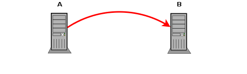
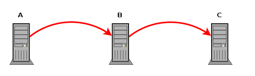
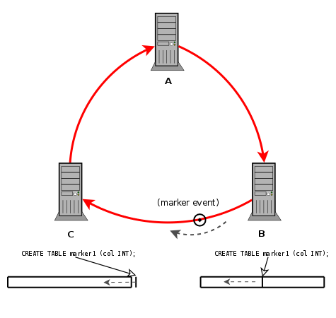
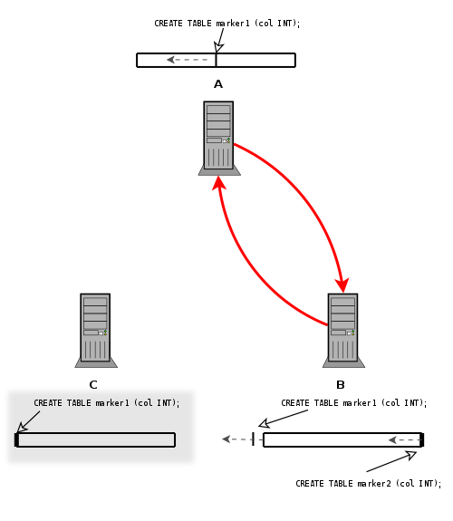
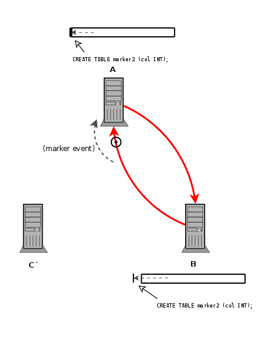
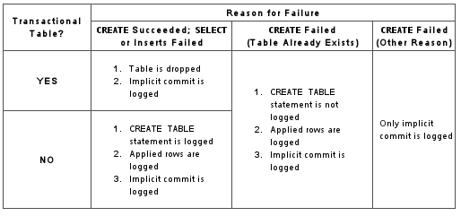

Table of Contents
- 16.1. Replication Configuration
- 16.2. Replication Solutions
- 16.2.1. Using Replication for Backups
- 16.2.2. Using Replication with Different Master and Slave Storage Engines
- 16.2.3. Using Replication for Scale-Out
- 16.2.4. Replicating Different Databases to Different Slaves
- 16.2.5. Improving Replication Performance
- 16.2.6. Switching Masters During Failover
- 16.2.7. Upgrading Multi-Master Replication
- 16.2.8. Setting Up Replication Using SSL
- 16.2.9. Semisynchronous Replication
- 16.3. Replication Notes and Tips
- 16.4. Replication Implementation
Replication enables data from one MySQL database server (called the master) to be replicated to one or more MySQL database servers (slaves). Replication is asynchronous by default - your replication slaves do not need to be connected permanently to receive updates from the master, which means that updates can occur over long-distance connections and even temporary solutions such as a dial-up service. Depending on the configuration, you can replicate all databases, selected databases, or even selected tables within a database.
The target uses for replication in MySQL include:
Scale-out solutions - spreading the load among multiple slaves to improve performance. In this environment, all writes and updates must take place on the master server. Reads, however, may take place on one or more slaves. This model can improve the performance of writes (since the master is dedicated to updates), while dramatically increasing read speed across an increasing number of slaves.
Data security - because data is replicated to the slave, and the slave can pause the replication process, it is possible to run backup services on the slave without corrupting the corresponding master data.
Analytics - live data can be created on the master, while the analysis of the information can take place on the slave without affecting the performance of the master.
Long-distance data distribution - if a branch office would like to work with a copy of your main data, you can use replication to create a local copy of the data for their use without requiring permanent access to the master.
Replication in MySQL features support for one-way, asynchronous replication, in which one server acts as the master, while one or more other servers act as slaves. This is in contrast to the synchronous replication which is a characteristic of MySQL Cluster (see MySQL Cluster NDB 6.X/7.X). As of version 6.0.8, MySQL supports an interface to semisynchronous replication in addition to the built-in asynchronous replication. With semisynchronous replication, a commit performed on the master side blocks before returning to the session that performed the transaction until at least one slave acknowleges that it has received and logged the events for the transaction.
There are a number of solutions available for setting up replication between two servers, but the best method to use depends on the presence of data and the engine types you are using. For more information on the available options, see Section 16.1.1, “How to Set Up Replication”.
There are two core types of replication format, Statement Based Replication (SBR), which replicates entire SQL statements, and Row Based Replication (RBR), which replicates only the changed rows. You may also use a third variety, Mixed Based Replication (MBR), which is the default mode. For more information on the different replication formats, see Section 16.1.2, “Replication Formats”.
Replication is controlled through a number of different options and variables. These control the core operation of the replication, timeouts and the databases and filters that can be applied on databases and tables. For more information on the available options, see Section 16.1.3, “Replication and Binary Logging Options and Variables”.
You can use replication to solve a number of different problems, including problems with performance, supporting the backup of different databases and for use as part of a larger solution to alleviate system failures. For information on how to address these issues, see Section 16.2, “Replication Solutions”.
For notes and tips on how different data types and statements are treated during replication, including details of replication features, version compatibility, upgrades, and problems and their resolution, including an FAQ, see Section 16.3, “Replication Notes and Tips”.
Detailed information on the implementation of replication, how replication works, the process and contents of the binary log, background threads and the rules used to decide how statements are recorded and replication, see Section 16.4, “Replication Implementation”.
MySQL Enterprise The MySQL Enterprise Monitor provides numerous advisors that provide immediate feedback about replication-related problems. For more information, see http://www.mysql.com/products/enterprise/advisors.html.
Replication between servers in MySQL works through the use of the binary logging mechanism. The MySQL instance operating as the master (the source of the database changes) writes updates and changes as “events” to the binary log. The information in the binary log is stored in different logging formats according to the database changes being recorded. Slaves are configured to read the binary log from the master and to execute the events in the binary log on the slave's local database.
The master is “dumb” in this scenario. Once binary logging has been enabled, all statements are recorded in the binary log. Each slave will receive a copy of the entire contents of the binary log. It is the responsibility of the slave to decide which statements in the binary log should be executed; you cannot configure the master to log only certain events. If you do not specify otherwise, all events in the master binary log are executed on the slave. If required, you can configure the slave to process only events that apply to particular databases or tables.
Each slave keeps a record of the binary log file and position within the log file that it has read and processed from the master. This means that multiple slaves can be connected to the master and executing different parts of the same binary log. Because the slaves control this process, individual slaves can be connected and disconnected from the server without affecting the master's operation. Also, because each slave remembers the position within the binary log, it is possible for slaves to be disconnected, reconnect and then “catch up” by continuing from the recorded position.
Both the master and each slave must be configured with a unique ID
(using the server-id option). In addition, the
slave must be configured with information about the master host
name, log file name and position within that file. These details can
be controlled from within a MySQL session using the
CHANGE MASTER TO statement. The
details are stored within the master.info file.
In this section the setup and configuration required for a replication environment is described, including step-by-step instructions for creating a new replication environment. The major components of this section are:
For a guide to setting up two or more servers for replication see Section 16.1.1, “How to Set Up Replication”. This section deals with the setup of the systems and provides methods for copying data between the master and slaves.
Events in the binary log are recorded using a number of formats. These are referred to as statement-based replication (SBR) or row-based replication (RBR). A third type, mixed-format replication (MIXED), uses SBR or RBR replication automatically to take advantage of the benefits of both SBR and RBR formats when appropriate. The different formats are discussed in Section 16.1.2, “Replication Formats”.
Detailed information on the different configuration options and variables that apply to replication is provided in Section 16.1.3, “Replication and Binary Logging Options and Variables”.
Once started, the replication process should require little administration or monitoring. However, for advice on common tasks that you may want to execute, see Section 16.1.4, “Common Replication Administration Tasks”.
- 16.1.1.1. Creating a User for Replication
- 16.1.1.2. Setting the Replication Master Configuration
- 16.1.1.3. Setting the Replication Slave Configuration
- 16.1.1.4. Obtaining the Master Replication Information
- 16.1.1.5. Creating a Data Snapshot Using mysqldump
- 16.1.1.6. Creating a Data Snapshot Using Raw Data Files
- 16.1.1.7. Setting Up Replication with New Master and Slaves
- 16.1.1.8. Setting Up Replication with Existing Data
- 16.1.1.9. Introducing Additional Slaves to an Existing Replication Environment
- 16.1.1.10. Setting the Master Configuration on the Slave
This section describes how to set up complete replication of a MySQL server. There are a number of different methods for setting up replication, and the exact method that you use will depend on how you are setting up replication, and whether you already have data within your master database.
There are some generic tasks which may be required for all replication setups:
You may want to create a separate user that will be used by your slaves to authenticate with the master to read the binary log for replication. The step is optional. See Section 16.1.1.1, “Creating a User for Replication”.
You must configure the master to support the binary log and configure a unique ID. See Section 16.1.1.2, “Setting the Replication Master Configuration”.
You must configure a unique ID for each slave that you want to connect to the master. See Section 16.1.1.3, “Setting the Replication Slave Configuration”.
Before starting a data snapshot or the replication process, you should record the position of the binary log on the master. You will need this information when configuring the slave so that the slave knows where within the binary log to start executing events. See Section 16.1.1.4, “Obtaining the Master Replication Information”.
If you already have data on your master and you want to synchronize your slave with this base data, then you will need to create a data snapshot of your database. You can create a snapshot using mysqldump (see Section 16.1.1.5, “Creating a Data Snapshot Using mysqldump”) or by copying the data files directly (see Section 16.1.1.6, “Creating a Data Snapshot Using Raw Data Files”).
You will need to configure the slave with the master settings, such as the host name, login credentials and binary log name and positions. See Section 16.1.1.10, “Setting the Master Configuration on the Slave”.
Once you have configured the basic options, you will need to follow the instructions for your replication setup. A number of alternatives are provided:
If you are establishing a new MySQL master and one or more slaves, then you need only set up the configuration, as you have no data to exchange. For guidance on setting up replication in this situation, see Section 16.1.1.7, “Setting Up Replication with New Master and Slaves”.
If you are already running a MySQL server, and therefore already have data that will need to be transferred to your slaves before replication starts, have not previously configured the binary log and are able to shut down your MySQL server for a short period during the process, see Section 16.1.1.8, “Setting Up Replication with Existing Data”.
If you are setting up additional slaves to an existing replication environment then you can set up the slaves without affecting the master. See Section 16.1.1.9, “Introducing Additional Slaves to an Existing Replication Environment”.
If you want to administer a MySQL replication setup, we suggest that you read this entire chapter through and try all statements mentioned in Section 12.6.1, “SQL Statements for Controlling Master Servers”, and Section 12.6.2, “SQL Statements for Controlling Slave Servers”. You should also familiarize yourself with the replication startup options described in Section 16.1.3, “Replication and Binary Logging Options and Variables”.
Note
Note that certain steps within the setup process require the
SUPER privilege. If you do not
have this privilege then enabling replication may not be
possible.
Each slave must connect to the master using a standard MySQL
user name and password, so there must be a user account on the
master that the slave can use to connect. Any account can be
used for this operation, providing it has been granted the
REPLICATION SLAVE privilege.
You do not need to create a specific user for replication.
However, you should be aware that the user name and password
will be stored in plain text within the
master.info file. Therefore, you may want to
create a user that only has privileges for the replication
process.
To create a user or grant an existing user the privileges
required for replication, use the
GRANT statement. If you create a
user solely for the purposes of replication then that user needs
only the REPLICATION SLAVE
privilege. For example, to create a user,
repl, that can connect for replication from
any host within the mydomain.com domain,
issue this statement on the master:
mysql> GRANT REPLICATION SLAVE ON *.*
-> TO 'repl'@'%.mydomain.com' IDENTIFIED BY 'slavepass';
See Section 12.5.1.3, “GRANT Syntax”, for more information on the
GRANT statement.
You may wish to create a different user for each slave, or use
the same user for each slave that needs to connect. As long as
each user that you want to use for the replication process has
the REPLICATION SLAVE privilege
you can create as many users as you require.
For replication to work you must enable binary logging on the master. If binary logging is not enabled, replication will not be possible as it is the binary log that is used to exchange data between the master and slaves.
Each server within a replication group must be configured with a
unique server-id value. The server ID is used
to identify individual servers within the group, and must be
positive integer between 1 and
(232)–1. How you organize and
select the numbers is entirely up to you.
To configure the binary log and server ID options, you will need
to shut down your MySQL server and edit the configuration of the
my.cnf or my.ini file.
You will need to add the following options to the configuration
file within the [mysqld] section. If these
options already exist, but are commented out, uncomment the
options and alter them according to your needs. For example, to
enable binary logging, using a log file name prefix of
mysql-bin, and setting a server ID of 1:
[mysqld] log-bin=mysql-bin server-id=1
Note
For the greatest possible durability and consistency in a
replication setup using InnoDB with
transactions, you should use
innodb_flush_log_at_trx_commit=1 and
sync_binlog=1 in the master
my.cnf file.
Note
Ensure that the skip-networking option has
not been enabled on your replication master. If networking has
been disabled, then your slave will not able to communicate
with the master and replication will fail.
The only option you must configure on the slave is to set the unique server ID. If this option is not already set, or the current value conflicts with the value that you have chosen for the master server, then you should shut down your slave server, and edit the configuration to specify the server ID. For example:
[mysqld] server-id=2
If you are setting up multiple slaves, each one must have a
unique server-id value that
differs from that of the master and from each of the other
slaves. Think of server-id values as
something similar to IP addresses: These IDs uniquely identify
each server instance in the community of replication partners.
If you do not specify a server-id
value, it defaults to 0.
Note
If you omit server-id (or set
it explicitly to 0), a master refuses connections from all
slaves, and a slave refuses to connect to a master. Thus,
omitting server-id is good only
for backup with a binary log.
You do not have to enable binary logging on the slave for replication to be enabled. However, if you enable binary logging on the slave then you can use the binary log for data backups and crash recovery on the slave, and also use the slave as part of a more complex replication topology (for example, where the slave acts as a master to other slaves).
To configure replication on the slave you must determine the master's current point within the master binary log. You will need this information so that when the slave starts the replication process, it is able to start processing events from the binary log at the correct point.
If you have existing data on your master that you want to synchronize on your slaves before starting the replication process, then you must stop processing statements on the master, obtain the current position, and then dump the data, before allowing the master to continue executing statements. If you do not stop the execution of statements, the data dump and the master status information that you use will not match and you will end up with inconsistent or corrupted databases on the slaves.
To get the master status information, follow these steps:
Start the command-line client and flush all tables and block write statements by executing the
FLUSH TABLES WITH READ LOCKstatement:mysql> FLUSH TABLES WITH READ LOCK;
For
InnoDBtables, note thatFLUSH TABLES WITH READ LOCKalso blocksCOMMIToperations.Warning
Leave the client from which you issued the
FLUSH TABLESstatement running so that the read lock remains in effect. If you exit the client, the lock is released.Use the
SHOW MASTER STATUSstatement to determine the current binary log file name and offset on the master:mysql >
SHOW MASTER STATUS;+---------------+----------+--------------+------------------+ | File | Position | Binlog_Do_DB | Binlog_Ignore_DB | +---------------+----------+--------------+------------------+ | mysql-bin.003 | 73 | test | manual,mysql | +---------------+----------+--------------+------------------+The
Filecolumn shows the name of the log file andPositionshows the offset within the file. In this example, the binary log file ismysql-bin.003and the offset is 73. Record these values. You need them later when you are setting up the slave. They represent the replication coordinates at which the slave should begin processing new updates from the master.If the master has been running previously without binary logging enabled, the log name and position values displayed by
SHOW MASTER STATUSor mysqldump --master-data will be empty. In that case, the values that you need to use later when specifying the slave's log file and position are the empty string ('') and4.
You now have the information you need to enable the slave to start reading from the binary log in the correct place to start replication.
If you have existing data that needs be to synchronized with the slave before you start replication, leave the client running so that the lock remains in place and then proceed to Section 16.1.1.5, “Creating a Data Snapshot Using mysqldump”, or Section 16.1.1.6, “Creating a Data Snapshot Using Raw Data Files”.
If you are setting up a brand new master and slave replication group, then you can exit the client and release the locks.
One way to create a snapshot of the data in an existing master database is to use the mysqldump tool. Once the data dump has been completed, you then import this data into the slave before starting the replication process.
To obtain a snapshot of the data using mysqldump:
If you haven't already locked the tables on the server to prevent statements that update data from executing:
Start the command-line client and flush all tables and block write statements by executing the
FLUSH TABLES WITH READ LOCKstatement:mysql> FLUSH TABLES WITH READ LOCK;
Remember to use
SHOW MASTER STATUSand record the binary log details for use when starting up the slave. The point in time of your snapshot and the binary log position must match. See Section 16.1.1.4, “Obtaining the Master Replication Information”.In another session, use mysqldump to create a dump either of all the databases you want to replicate, or of selected individual databases. For example:
shell> mysqldump --all-databases --lock-all-tables >dbdump.db
An alternative to using a bare dump, is to use the
--master-dataoption, which automatically appends theCHANGE MASTER TOstatement required on the slave to start the replication process.shell> mysqldump --all-databases --master-data >dbdump.db
In the client where you acquired the read lock, release the lock:
mysql> UNLOCK TABLES;
When choosing databases to include in the dump, remember that you will need to filter out databases on each slave that you do not want to include in the replication process.
You will need either to copy the dump file to the slave, or to use the file from the master when connecting remotely to the slave to import the data.
If your database is particularly large, copying the raw data files may be more efficient than using mysqldump and importing the file on each slave.
However, using this method with tables in storage engines with complex caching or logging algorithms may not give you a perfect “in time” snapshot as cache information and logging updates may not have been applied, even if you have acquired a global read lock. How the storage engine responds to this depends on its crash recovery abilities.
In addition, this method does not work reliably if the master
and slave have different values for
ft_stopword_file,
ft_min_word_len, or
ft_max_word_len and you are
copying tables having fulltext indexes.
If you are using InnoDB tables, you should
use the InnoDB Hot Backup
tool to obtain a consistent snapshot. This tool records the log
name and offset corresponding to the snapshot to be later used
on the slave. Hot Backup is a non-free
(commercial) tool that is not included in the standard MySQL
distribution. See the InnoDB Hot
Backup home page at
http://www.innodb.com/hot-backup for detailed
information.
Otherwise, you can obtain a reliable binary snapshot of
InnoDB tables only after shutting down the
MySQL Server.
To create a raw data snapshot of MyISAM
tables you can use standard copy tools such as
cp or copy, a remote copy
tool such as scp or rsync,
an archiving tool such as zip or
tar, or a file system snapshot tool such as
dump, providing that your MySQL data files
exist on a single file system. If you are replicating only
certain databases then make sure you copy only those files that
related to those tables. (For InnoDB, all
tables in all databases are stored in a single file unless you
have the innodb_file_per_table option enabled.)
You may want to specifically exclude the following files from your archive:
Files relating to the
mysqldatabase.The
master.infofile.The master's binary log files.
Any relay log files.
To get the most consistent results with a raw data snapshot you should shut down the server during the process, as below:
Acquire a read lock and get the master's status. See Section 16.1.1.4, “Obtaining the Master Replication Information”.
In a separate session, shut down the MySQL server:
shell>
mysqladmin shutdownMake a copy of the MySQL data files. Examples are shown below for common ways to do this - you need to choose only one of them:
shell>
tar cfshell>/tmp/db.tar./datazip -rshell>/tmp/db.zip./datarsync --recursive./data/tmp/dbdataStart up the MySQL instance on the master.
If you are not using InnoDB tables, you can
get a snapshot of the system from a master without shutting down
the server as described in the following steps:
Acquire a read lock and get the master's status. See Section 16.1.1.4, “Obtaining the Master Replication Information”.
Take a copy of the MySQL data files. Examples are shown below for common solutions - you need to choose only one of these solutions:
shell> tar cf
/tmp/db.tar./datashell> zip -r/tmp/db.zip./datashell> rsync --recursive./data/tmp/dbdataIn the client where you acquired the read lock, release the lock:
mysql> UNLOCK TABLES;
Once you have created the archive or copy of the database, you will need to copy the files to each slave before starting the slave replication process.
Setting up replication with a new master and slaves (that is, with no existing data) is the easiest and most straightforward method for setting up replication.
You can also use this method if you are setting up new servers but have an existing dump of the databases from a different server that you want to load into your replication configuration. By loading the data into a new master, the data will be automatically replicated to the slaves.
To set up replication between a new master and slave:
Configure the MySQL master with the necessary configuration properties. See Section 16.1.1.2, “Setting the Replication Master Configuration”.
Start up the MySQL master.
Set up a user. See Section 16.1.1.1, “Creating a User for Replication”.
Obtain the master status information. See Section 16.1.1.4, “Obtaining the Master Replication Information”.
On the master, release the read lock:
mysql> UNLOCK TABLES;
On the slave, edit the MySQL configuration. See Section 16.1.1.3, “Setting the Replication Slave Configuration”.
Start up the MySQL slave.
Execute the
CHANGE MASTER TOstatement to set the master replication server configuration.
Perform the slave setup steps on each slave.
Because there is no data to load or exchange on a new server configuration you do not need to copy or import any information.
If you are setting up a new replication environment using the data from a different existing database server, you will now need to run the dump file generated from that server on the new master. The database updates will automatically be propagated to the slaves:
shell> mysql -h master < fulldb.dump
When setting up replication with existing data, you will need to decide how best to get the data from the master to the slave before starting the replication service.
The basic process for setting up replication with existing data is as follows:
If you have not already configured the
server-idand binary logging, you will need to shut down your master to configure these options. See Section 16.1.1.2, “Setting the Replication Master Configuration”.If you have to shut down your master server, this is a good opportunity to take a snapshot of its databases. You should obtain the master status (see Section 16.1.1.4, “Obtaining the Master Replication Information”) before taking down the master, updating the configuration and taking a snapshot. For information on how to create a snapshot using raw data files, see Section 16.1.1.6, “Creating a Data Snapshot Using Raw Data Files”.
If your server is already correctly configured, obtain the master status (see Section 16.1.1.4, “Obtaining the Master Replication Information”) and then use mysqldump to take a snapshot (see Section 16.1.1.5, “Creating a Data Snapshot Using mysqldump”) or take a raw snapshot of the live server using the guide in Section 16.1.1.6, “Creating a Data Snapshot Using Raw Data Files”.
With the MySQL master running, create a user to be used by the slave when connecting to the master during replication. See Section 16.1.1.1, “Creating a User for Replication”.
Update the configuration of the slave. See Section 16.1.1.3, “Setting the Replication Slave Configuration”.
The next step depends on how you created the snapshot of data on the master.
If you used mysqldump:
Start the slave, skipping replication by using the
--skip-slaveoption.Import the dump file:
shell> mysql < fulldb.dump
If you created a snapshot using the raw data files:
Extract the data files into your slave data directory. For example:
shell> tar xvf dbdump.tar
You may need to set permissions and ownership on the files to match the configuration of your slave.
Start the slave, skipping replication by using the
--skip-slaveoption.
Configure the slave with the master status information. This will tell the slave the binary log file and position within the file where replication needs to start, and configure the login credentials and host name of the master. For more information on the statement required, see Section 16.1.1.10, “Setting the Master Configuration on the Slave”.
Start the slave threads:
mysql>
START SLAVE;
After you have performed this procedure, the slave should connect to the master and catch up on any updates that have occurred since the snapshot was taken.
If you have forgotten to set the server-id
option for the master, slaves cannot connect to it.
If you have forgotten to set the server-id
option for the slave, you get the following error in the slave's
error log:
Warning: You should set server-id to a non-0 value if master_host is set; we will force server id to 2, but this MySQL server will not act as a slave.
You also find error messages in the slave's error log if it is not able to replicate for any other reason.
Once a slave is replicating, you can find in its data directory
one file named master.info and another
named relay-log.info. The slave uses these
two files to keep track of how much of the master's binary log
it has processed. Do not remove or edit
these files unless you know exactly what you are doing and fully
understand the implications. Even in that case, it is preferred
that you use the CHANGE MASTER TO
statement to change replication parameters. The slave will use
the values specified in the statement to update the status files
automatically.
Note
The content of master.info overrides some
of the server options specified on the command line or in
my.cnf. See
Section 16.1.3, “Replication and Binary Logging Options and Variables”, for more details.
Once you have a snapshot of the master, you can use it to set up other slaves by following the slave portion of the procedure just described. You do not need to take another snapshot of the master; you can use the same one for each slave.
If you want to add another slave to the existing replication configuration then you can do so without stopping the master. Instead, you duplicate the settings on the slaves by making a copy of one of the slaves.
To duplicate the slave:
Shut down the existing slave:
shell> mysqladmin shutdown
Copy the data directory from the existing slave to the new slave. You can do this by creating an archive using tar or
WinZip, or by performing a direct copy using a tool such as cp or rsync. Ensure that you also copy the log files and relay log files.Note
A common problem that is encountered when adding new replication slaves is that the new slave fails with a series of warning and error messages like these:
071118 16:44:10 [Warning] Neither --relay-log nor --relay-log-index were used; so replication may break when this MySQL server acts as a slave and has his hostname changed!! Please use '--relay-log=
new_slave_hostname-relay-bin' to avoid this problem. 071118 16:44:10 [ERROR] Failed to open the relay log './old_slave_hostname-relay-bin.003525' (relay_log_pos 22940879) 071118 16:44:10 [ERROR] Could not find target log during relay log initialization 071118 16:44:10 [ERROR] Failed to initialize the master info structureThis is due to the fact that, if the
--relay-logoption is not specified, the relay log files contain the host name as part of their file names. (This is also true of the relay log index file if the--relay-log-indexoption is not used. See Section 16.1.3, “Replication and Binary Logging Options and Variables”, for more information about these options.)To avoid this problem, use the same value for
--relay-logon the new slave that was used on the existing slave. (If this option was not set explicitly on the existing slave, useexisting_slave_hostname-relay-bin--relay-log-indexoption on the new slave to match what was used on the existing slave. (If this option was not set explicitly on the existing slave, useexisting_slave_hostname-relay-bin.indexIf you have not already done so, issue a
STOP SLAVEon the new slave.If you have already started the existing slave again, issue a
STOP SLAVEon the existing slave as well.Copy the contents of the existing slave's relay log index file into the new slave's relay log index file, making sure to overwrite any content already in the file.
Proceed with the remaining steps in this section.
Copy the
master.infoandrelay-log.infofiles from the existing slave to the new slave. These files hold the current log positions.Start the existing slave.
On the new slave, edit the configuration and the give the new slave a new unique
server-id.Start the new slave; the
master.infofile options will be used to start the replication process.
To set up the slave to communicate with the master for replication, you must tell the slave the necessary connection information. To do this, execute the following statement on the slave, replacing the option values with the actual values relevant to your system:
mysql>CHANGE MASTER TO->MASTER_HOST='->master_host_name',MASTER_USER='->replication_user_name',MASTER_PASSWORD='->replication_password',MASTER_LOG_FILE='->recorded_log_file_name',MASTER_LOG_POS=recorded_log_position;
Note
Replication cannot use Unix socket files. You must be able to connect to the master MySQL server using TCP/IP.
The following table shows the maximum allowable length for the string-valued options.
| Option | Maximum Length |
MASTER_HOST | 60 |
MASTER_USER | 16 |
MASTER_PASSWORD | 32 |
MASTER_LOG_FILE | 255 |
Replication works because events written to the binary log are read from the master and then processed on the slave. The events are recorded within the binary log in different formats according the type of event being recorded. The different replication formats used correspond to the binary logging format used when the events were recorded in the master's binary log. The correlation between binary logging formats and the terms used during replication are:
Replication capabilities in MySQL originally were based on propagation of SQL statements from master to slave. This is called statement-based replication (often abbreviated as SBR), which corresponds to the standard statement-based binary logging format. In older versions of MySQL (5.1.4 and earlier), binary logging and replication used this format exclusively.
Row-based binary logging logs changes in individual table rows. When used with MySQL replication, this is known as row-based replication (often abbreviated as RBR). In row-based replication, the master writes messages known as events to the binary log that indicate how individual table rows are changed.
The binary logging format can be changed in real time according to the event being logged using mixed-format logging.
When the mixed format is in effect, statement-based logging is used by default, but automatically switches to row-based logging in particular cases as described below. Replication using the mixed format is often referred to as mixed-based replication or mixed-format replication. For more information, see Section 5.2.4.3, “Mixed Binary Logging Format”.
The mixed format is the default for MySQL replication.
The binary logging format is determined in part by the storage engine being used and the statement being executed. For more information on mixed-format logging and the rules governing the support of different logging formats, see Section 5.2.4.3, “Mixed Binary Logging Format”.
You must have the SUPER privilege
to set the binary logging format on the global level. Starting
with MySQL 6.0.8, you must also have the
SUPER privilege to set the binary
logging format for the current session. (Bug#39106)
The logging format in a running MySQL server is controlled by
setting the binlog_format server
system variable. This variable can be set with session or global
scope. The rules governing when and how the new setting takes
effect are the same as for other MySQL server system variables
— setting the variable for the current session lasts only
until the end of that session, and the change is not visible to
other sessions; setting the variable globally requires a restart
of the server in order to take effect. For more information, see
Section 12.5.5, “SET Syntax”.
The statement-based and row-based replication formats have different issues and limitations. For a comparison of their relative advantages and disadvantages, see Section 16.1.2.1, “Comparison of Statement-Based and Row-Based Replication”.
With statement-based replication, you may encounter issues with replicating stored routines or triggers. You can avoid these issues by using row-based replication instead. For more information, see Section 18.6, “Binary Logging of Stored Programs”.
If you build MySQL from source, row-based replication is available
by default unless you invoke configure with the
--without-row-based-replication option.
For MySQL 5.1.20 and later (and MySQL 5.0.46 for backward compatibility), the following session variables are written to the binary log and honored by the replication slave when parsing the binary log:
Important
Even though session variables relating to character sets and collations are written to the binary log, replication between different character sets is not supported.
Each binary logging format has advantages and disadvantages. For most users, the mixed replication format should provide the best combination of data integrity and performance. If, however, you want to take advantage of the features specific to the statement-based or row-based replication format when performing certain tasks, then you can use the information in this section, which provides a summary of their relative advantages and disadvantages, to determine which is best for your needs.
Advantages of statement-based replication:
Proven technology that has existed in MySQL since 3.23.
Less data written to log files. When updates or deletes affect many rows, this results in much less storage space required for log files. This also means that taking and restoring from backups can be accomplished more quickly.
Log files contain all statements that made any changes, so they can be used to audit the database.
Tables replicated using statement-based replication are not required to have explicit primary keys.
Disadvantages of statement-based replication:
Statements which are unsafe for SBR. Not all statements which modify data (such as
INSERTDELETE,UPDATE, andREPLACEstatements) can be replicated using statement-based replication. Any non-deterministic behavior is difficult to replicate when using statement-based replication. Examples of such DML (Data Modification Language) statements include the following:A statement that depends on a UDF or stored program that is non-deterministic, since the value returned by such a UDF or stored program or depends on factors other than the parameters supplied to it. (Row-based replication, however, simply replicates the value returned by the UDF or stored program, so its effect on table rows and data is the same on both the master and slave.) See Section 16.3.1.7, “Replication of Invoked Features”, for more information.
DELETEandUPDATEstatements that use aLIMITclause without anORDER BYare also non-deterministic. See Section 16.3.1.11, “Replication andLIMIT”.Statements using any of the following functions cannot be replicated properly using statement-based replication:
SYSDATE()(unless the server is started with the--sysdate-is-nowoption)
However, all other functions are replicated correctly using statement-based replication, including
RAND(),NOW(),LOAD DATA INFILE, and so forth.For more information, see Section 16.3.1.10, “Replication and System Functions”.
When using statement-based replication, statements that cannot be replicated correctly using statement-based mode are logged with a warning like the one shown here:
090213 16:58:54 [Warning] Statement is not safe to log in statement format.
A similar warning is also issued to the client in such cases.
INSERT ... SELECTrequires a greater number of row-level locks than with row-based replication.UPDATEstatements that require a table scan (because no index is used in theWHEREclause) must lock a greater number of rows than with row-based replication.For
InnoDB: AnINSERTstatement that usesAUTO_INCREMENTblocks other non-conflictingINSERTstatements.For complex statements, the statement must be evaluated and executed on the slave before the rows are updated or inserted. With row-based replication, the slave only has to run the statement to apply the differences, not the full statement.
Stored functions execute with the same
NOW()value as the calling statement. However, this is not true of stored procedures.Deterministic UDFs must be applied on the slaves.
If there is an error in evaluation on the slave, particularly when executing complex statements, then using statement-based replication may slowly increase the margin of error across the affected rows over time. See Section 16.3.1.20, “Slave Errors during Replication”.
Tables must be (nearly) identical on master and slave. See Section 16.3.1.4, “Replication with Differing Tables on Master and Slave”, for more information.
Advantages of row-based replication:
All changes can be replicated. This is the safest form of replication.
The
mysqldatabase is not replicated. Themysqldatabase is instead seen as a node-specific database. Row-based replication is not supported on tables in this database. Instead, statements that would normally update this information — such asGRANT,REVOKEand the manipulation of triggers, stored routines (including stored procedures), and views — are all replicated to slaves using statement-based replication.For statements like
CREATE ... SELECT, aCREATEstatement is generated from the table definition and replicated using the statement-based format, while the row insertions are replicated using the row-based format.The technology is the same as in most other database management systems; knowledge about other systems transfers to MySQL.
Fewer locks are needed (and thus higher concurrency) on the master for the following types of statements:
Fewer locks are required on the slave for any
INSERT,UPDATE, orDELETEstatement.
Disadvantages of row-based replication:
RBR tends to generate more data that must be logged. This is because, when using row-based replication to replicate a DML statement (such as an
UPDATEorDELETEstatement), each changed row must be written to the binary log. (When using statement-based replication, only the statement is written to the binary log.) This means that, if the statement changes many rows, row-based replication may write significantly more data to the binary log; this is true even for statements that are rolled back. This also means that taking and restoring from backup can require more time. In addition, the binary log is locked for a longer time to write the data, which may cause concurrency problems.All tables replicated using row-based replication must have explicit primary keys.
Deterministic UDFs that generate large
BLOBvalues take longer to replicate with row-based replication than with statement-based replication. This is because, when using row-based replication, theBLOBcolumn data is itself logged, rather than the statement generating the data.You cannot examine the logs to see what statements were executed, nor can you see on the slave what statements were received from the master and executed.
However, beginning with MySQL 6.0.7, you can see what data was changed using mysqlbinlog with the options
--base64-output=DECODE-ROWSand--verbose.When performing a bulk operation that includes non-transactional storage engines, changes are applied as the statement executes. With row-based replication logging, this means that the binary log is written while the statement is running. On the master, this does not cause problems with concurrency, because tables are locked until the bulk operation terminates. On the slave server, however, tables are not locked while the slave applies changes, because the slave does not know that those changes are part of a bulk operation.
In such cases, if you retrieve data from a table on the master (for example, using
SELECT * FROM table_name), the server waits for the bulk operation to complete before executing theSELECTstatement, because the table is read-locked. On the slave, the server does not wait (because there is no lock). This means that, until the bulk operation on the slave has completed, you obtain different results for the sameSELECTquery on the master and on the slave.This behavior is expected to change in a future MySQL release; however, until it changes, you may prefer to use statement-based replication when your application requires concurrent large bulk inserts and selects.
Using row-based logging or replication, rather than statement-based logging or replication, can result in major changes in the replication environment and in the behavior of applications. This section describes a number of issues known to exist when using row-based logging or row-based replication, and discusses some best practices for taking advantage of row-based logging (RBL) and row-based replication (RBR).
For additional information, see Section 16.1.2.1, “Comparison of Statement-Based and Row-Based Replication”, and Section 16.1.2, “Replication Formats”.
RBR and primary keys. Currently, row-based replication may fail if any table to be replicated does not have an explicit primary key. This is a known issue which we are working to fix in a future MySQL release.
RBL, RBR, and temporary tables. As noted elsewhere in this chapter (see Section 16.3.1.22, “Replication and Temporary Tables”), temporary tables are not replicated when using the row-based format. However, you can use the mixed format; when mixed format is in effect, “safe” statements involving temporary tables are logged using the statement-based format. For more information, see Section 16.1.2.1, “Comparison of Statement-Based and Row-Based Replication”.
Note
There is actually no need to replicate temporary tables when using RBR. In addition, since temporary tables can be read only from the thread which created them, there is seldom if ever any benefit obtained from replicating them, even when using statement-based mode.
RBL and the
BLACKHOLEstorage engine. Prior to MySQL 6.0.7,DELETEandUPDATEstatements did not work with RBL andBLACKHOLEtables (Bug#38360).RBL and synchronization of non-transactional tables. When using row-based replication of a
MyISAMor other non-transactional table, changed rows are written to the transaction cache. Often, when many rows are affected, the set of changes are split into several events; when the statement commits, all of these events are written to the binary log. When executing on the slave, a table lock is taken on all tables involved, then the rows are applied in batch mode. (This may or may not be effective, depending on the engine used for the slave's copy of the table).Latency and binary log size. Because RBL writes changes for each row to the binary log, the size of the binary log can grow quite rapidly. When used in a replication environment, this can significantly increase the time required for making the changes on the slave that match those on the master. You should be aware of the potential for this delay in your applications.
Reading the binary log. With the
--base64-output=DECODE-ROWSand--verboseoptions, mysqlbinlog is able to format the contents of the binary log in a manner that is easily human-readable, in case you want to read or recover from a replication or database failure using the contents of the binary log. For more information, see Section 4.6.8.2, “mysqlbinlog Row Event Display”. Before MySQL 6.0.7, this was not possible (Bug#31455).Binary log execution errors and
slave_exec_mode. If you useslave_exec_mode=IDEMPOTENT, a failure to apply changes from RBL because the original row cannot be found does not trigger an error, and does not cause replication to fail. This means that it is possible that updates are not applied on the slave, so that the master and slave are no longer synchronized. Latency issues and use of non-transactional tables when usingslave_exec_mode=IDEMPOTENTand RBR can cause the master and slave to diverge even further. For more information aboutslave_exec_mode, see Section 5.1.3, “Server System Variables”.Note
slave_exec_mode=IDEMPOTENTis generally useful only for circular replication or multi-master replication with MySQL Cluster. For other scenarios, the default value (slave_exec_mode=STRICT) is normally sufficient.The
NDBCLUSTERstorage engine is currently not supported in MySQL 6.0. MySQL Cluster users wishing to upgrade from MySQL 5.0 should instead migrate to MySQL Cluster NDB 6.2 or 6.3; these are based on MySQL 5.1 but contain the latest improvements and fixes forNDBCLUSTER. For more information, see MySQL Cluster NDB 6.X/7.X.Lack of binary log checksums. No checksums are used for RBL. This means that network, disk, and other errors may not be identified when processing the binary log. To ensure that data is transmitted without network corruption, you may want to consider using SSL, which adds another layer of checksumming, for replication connections. See Section 5.5.7, “Using SSL for Secure Connections”, for more information about setting up MySQL with SSL.
Filtering based on server ID. A common practice is to filter out changes on some slaves by using a
WHEREclause that includes the relation@server_id <>clause withserver-idUPDATEand DELETE statements, a simple example of such a clause beingWHERE @server_id <> 1. However, this does not work correctly with row-based logging. If you must use theserver_idsystem variable for statement filtering, then you must also use--binlog_format=STATEMENT.Beginning with MySQL 6.0.10, you can do filtering based on server ID by using the
IGNORE_SERVER_IDSoption for theCHANGE MASTER TOstatement. This option works with the statement-based and row-based logging formats.Database-level replication options. The effects of the options
--replicate-do-db,--replicate-ignore-db, and--replicate-rewrite-dbdiffer considerably depending on whether row-based or statement-based logging is in use. Because of this, we recommend that you avoid the database-level options and use the table-level options such as--replicate-do-tableand--replicate-ignore-tableinstead. For more information about these options and the impact that your choice of replication format has on how they operate, see Section 16.1.3, “Replication and Binary Logging Options and Variables”.
The next few sections contain information about mysqld options and server variables that are used in replication and for controlling the binary log. Options and variables for use on replication masters and replication slaves are covered separately, as are options and variables relating to binary logging. A set of quick-reference tables providing basic information about these options and variables is also included (in the next section following this one).
Of particular importance is the
--server-id option.
| Command Line Format | --server-id=# | ||||||
| Config File Format | server-id | ||||||
| Option Sets Variable | Yes, server_id | ||||||
| Variable Name | server_id | ||||||
| Variable Scope | Global | ||||||
| Dynamic Variable | Yes | ||||||
| Value Set |
|
This option is common to both master and slave replication servers, and is used in replication to enable master and slave servers to identify themselves uniquely. For additional information, see Section 16.1.3.2, “Replication Master Options and Variables”, and Section 16.1.3.3, “Replication Slave Options and Variables”.
On the master and each slave, you must use the
--server-id option to establish a
unique replication ID in the range from 1 to
232 – 1; by “unique”,
we mean that each ID must be different from every other ID in use by
any other replication master or slave. Example:
server-id=3.
If you omit --server-id, it assumes
the default value 0, in which case a master refuses connections from
all slaves, and a slave refuses to connect to a master. See
Section 16.1.1.3, “Setting the Replication Slave Configuration”, for more
information.
The following tables list basic information about the MySQL command-line options and system variables applicable to replication and the binary log.
Table 16.1. mysqld Replication Option/Variable Summary
Section 16.1.3.2, “Replication Master Options and Variables”, provides more detailed information about options and variables relating to replication master servers. For more information about options and variables relating to replication slaves Section 16.1.3.3, “Replication Slave Options and Variables”.
Table 16.2. mysqld Binary Logging Option/Variable Summary
| Name | Cmd-Line | Option file | System Var | Status Var | Var Scope | Dynamic |
|---|---|---|---|---|---|---|
| Binlog_cache_disk_use | Yes | Global | No | |||
| binlog_cache_size | Yes | Yes | Yes | Global | Yes | |
| Binlog_cache_use | Yes | Global | No | |||
| binlog-do-db | Yes | Yes | ||||
| binlog-format | Yes | Yes | Both | Yes | ||
| - Variable: binlog_format | Yes | Both | Yes | |||
| binlog-ignore-db | Yes | Yes | ||||
| binlog-row-event-max-size | Yes | Yes | ||||
| Com_show_binlog_events | Yes | Both | No | |||
| Com_show_binlogs | Yes | Both | No | |||
| max_binlog_cache_size | Yes | Yes | Yes | Global | Yes | |
| max-binlog-dump-events | Yes | Yes | ||||
| max_binlog_size | Yes | Yes | Yes | Global | Yes | |
| sporadic-binlog-dump-fail | Yes | Yes |
Section 16.1.3.4, “Binary Log Options and Variables”, provides more detailed information about options and variables relating to binary logging. For additional general information about the binary log, see Section 5.2.4, “The Binary Log”.
For a table showing all command-line options, system and status variables used with mysqld, see Section 5.1.1, “Server Option and Variable Reference”.
This section describes the server options and system variables
that you can use on replication master servers. You can specify
the options either on the
command line or in an
option file. You can specify
system variable values using
SET.
On the master and each slave, you must use the
server-id option to establish a unique
replication ID. For each server, you should pick a unique positive
integer in the range from 1 to 232
– 1, and each ID must be different from every other ID in
use by any other replication master or slave. Example:
server-id=3.
For options used on the master for controlling binary logging, see Section 16.1.3.4, “Binary Log Options and Variables”.
Command Line Format --auto_increment_increment[=#]Config File Format auto_increment_incrementOption Sets Variable Yes, auto_increment_incrementVariable Name auto_increment_incrementVariable Scope Both Dynamic Variable Yes Value Set Type numericDefault 1Range 1-65535auto_increment_incrementandauto_increment_offsetare intended for use with master-to-master replication, and can be used to control the operation ofAUTO_INCREMENTcolumns. Both variables have global and session values, and each can assume an integer value between 1 and 65,535 inclusive. Setting the value of either of these two variables to 0 causes its value to be set to 1 instead. Attempting to set the value of either of these two variables to an integer greater than 65,535 or less than 0 causes its value to be set to 65,535 instead. Attempting to set the value ofauto_increment_incrementorauto_increment_offsetto a non-integer value gives rise to an error, and the actual value of the variable remains unchanged.These two variables affect
AUTO_INCREMENTcolumn behavior as follows:auto_increment_incrementcontrols the interval between successive column values. For example:mysql>
SHOW VARIABLES LIKE 'auto_inc%';+--------------------------+-------+ | Variable_name | Value | +--------------------------+-------+ | auto_increment_increment | 1 | | auto_increment_offset | 1 | +--------------------------+-------+ 2 rows in set (0.00 sec) mysql>CREATE TABLE autoinc1->(col INT NOT NULL AUTO_INCREMENT PRIMARY KEY);Query OK, 0 rows affected (0.04 sec) mysql>SET @@auto_increment_increment=10;Query OK, 0 rows affected (0.00 sec) mysql>SHOW VARIABLES LIKE 'auto_inc%';+--------------------------+-------+ | Variable_name | Value | +--------------------------+-------+ | auto_increment_increment | 10 | | auto_increment_offset | 1 | +--------------------------+-------+ 2 rows in set (0.01 sec) mysql>INSERT INTO autoinc1 VALUES (NULL), (NULL), (NULL), (NULL);Query OK, 4 rows affected (0.00 sec) Records: 4 Duplicates: 0 Warnings: 0 mysql>SELECT col FROM autoinc1;+-----+ | col | +-----+ | 1 | | 11 | | 21 | | 31 | +-----+ 4 rows in set (0.00 sec)(Note how
SHOW VARIABLESis used here to obtain the current values for these variables.)auto_increment_offsetdetermines the starting point for theAUTO_INCREMENTcolumn value. Consider the following, assuming that these statements are executed during the same session as the example given in the description forauto_increment_increment:mysql>
SET @@auto_increment_offset=5;Query OK, 0 rows affected (0.00 sec) mysql>SHOW VARIABLES LIKE 'auto_inc%';+--------------------------+-------+ | Variable_name | Value | +--------------------------+-------+ | auto_increment_increment | 10 | | auto_increment_offset | 5 | +--------------------------+-------+ 2 rows in set (0.00 sec) mysql>CREATE TABLE autoinc2->(col INT NOT NULL AUTO_INCREMENT PRIMARY KEY);Query OK, 0 rows affected (0.06 sec) mysql>INSERT INTO autoinc2 VALUES (NULL), (NULL), (NULL), (NULL);Query OK, 4 rows affected (0.00 sec) Records: 4 Duplicates: 0 Warnings: 0 mysql>SELECT col FROM autoinc2;+-----+ | col | +-----+ | 5 | | 15 | | 25 | | 35 | +-----+ 4 rows in set (0.02 sec)If the value of
auto_increment_offsetis greater than that ofauto_increment_increment, the value ofauto_increment_offsetis ignored.
Should one or both of these variables be changed and then new rows inserted into a table containing an
AUTO_INCREMENTcolumn, the results may seem counterintuitive because the series ofAUTO_INCREMENTvalues is calculated without regard to any values already present in the column, and the next value inserted is the least value in the series that is greater than the maximum existing value in theAUTO_INCREMENTcolumn. In other words, the series is calculated like so:auto_increment_offset +N× auto_increment_incrementwhere
Nis a positive integer value in the series [1, 2, 3, ...]. For example:mysql>
SHOW VARIABLES LIKE 'auto_inc%';+--------------------------+-------+ | Variable_name | Value | +--------------------------+-------+ | auto_increment_increment | 10 | | auto_increment_offset | 5 | +--------------------------+-------+ 2 rows in set (0.00 sec) mysql>SELECT col FROM autoinc1;+-----+ | col | +-----+ | 1 | | 11 | | 21 | | 31 | +-----+ 4 rows in set (0.00 sec) mysql>INSERT INTO autoinc1 VALUES (NULL), (NULL), (NULL), (NULL);Query OK, 4 rows affected (0.00 sec) Records: 4 Duplicates: 0 Warnings: 0 mysql>SELECT col FROM autoinc1;+-----+ | col | +-----+ | 1 | | 11 | | 21 | | 31 | | 35 | | 45 | | 55 | | 65 | +-----+ 8 rows in set (0.00 sec)The values shown for
auto_increment_incrementandauto_increment_offsetgenerate the series 5 +N× 10, that is, [5, 15, 25, 35, 45, ...]. The greatest value present in thecolcolumn prior to theINSERTis 31, and the next available value in theAUTO_INCREMENTseries is 35, so the inserted values forcolbegin at that point and the results are as shown for theSELECTquery.It is not possible to confine the effects of these two variables to a single table, and thus they do not take the place of the sequences offered by some other database management systems; these variables control the behavior of all
AUTO_INCREMENTcolumns in all tables on the MySQL server. If the global value of either variable is set, its effects persist until the global value is changed or overridden by setting the session value, or until mysqld is restarted. If the local value is set, the new value affectsAUTO_INCREMENTcolumns for all tables into which new rows are inserted by the current user for the duration of the session, unless the values are changed during that session.The default value of
auto_increment_incrementis 1. See Section 16.3.1.1, “Replication andAUTO_INCREMENT”.Command Line Format --auto_increment_offset[=#]Config File Format auto_increment_offsetOption Sets Variable Yes, auto_increment_offsetVariable Name auto_increment_offsetVariable Scope Both Dynamic Variable Yes Value Set Type numericDefault 1Range 1-65535This variable has a default value of 1. For particulars, see the description for
auto_increment_increment.
This section describes the server options and system variables
that you can use on slave replication servers. You can specify the
options either on the command
line or in an option
file. Many of the options can be reset while the server is
running by using the CHANGE MASTER
TO statement. You can specify system variable values
using SET.
Server ID.
On the master and each slave, you must use the
server-id option to establish a unique
replication ID. For each server, you should pick a unique
positive integer in the range from 1 to
232 – 1, and each ID must be
different from every other ID. Example:
server-id=3.
The master.info file format in MySQL
6.0 includes values corresponding to the SSL options.
In addition, the file format includes as its first line the number
of lines in the file. (See Section 16.4.2, “Replication Relay and Status Files”.) If you
upgrade an older server (before MySQL 4.1.1) to a newer version,
the new server upgrades the master.info file
to the new format automatically when it starts. However, if you
downgrade a newer server to an older version, you should remove
the first line manually before starting the older server for the
first time.
If no master.info file exists when the slave
server starts, it uses the values for those options that are
specified in option files or on the command line. This occurs when
you start the server as a replication slave for the very first
time, or when you have run RESET
SLAVE and then have shut down and restarted the slave.
If the master.info file exists when the slave
server starts, the server uses its contents and ignores any
options that correspond to the values listed in the file. Thus, if
you start the slave server with different values of the startup
options that correspond to values in the
master.info file, the different values have
no effect, because the server continues to use the
master.info file. To use different values,
you must either restart after removing the
master.info file or (preferably) use the
CHANGE MASTER TO statement to reset
the values while the slave is running.
Suppose that you specify this option in your
my.cnf file:
[mysqld]
master-host=some_host
The first time you start the server as a replication slave, it
reads and uses that option from the my.cnf
file. The server then records the value in the
master.info file. The next time you start the
server, it reads the master host value from the
master.info file only and ignores the value
in the option file. If you modify the my.cnf
file to specify a different master host of
some_other_host, the change still has
no effect. You should use CHANGE MASTER
TO instead.
This example shows a more extensive use of startup options to configure a slave server:
[mysqld] server-id=2 master-host=db-master.mycompany.com master-port=3306 master-user=pertinax master-password=freitag master-connect-retry=60 report-host=db-slave.mycompany.com
Note
Because the server gives an existing
master.info file precedence over the
startup options just described, you might prefer not to use
startup options for these values at all, and instead to specify
them by using the CHANGE MASTER
TO statement. See Section 12.6.2.1, “CHANGE MASTER TO Syntax”.
Startup options for replication slaves.
The following list describes startup options for controlling
replication slaves. Many of these options can be reset while the
server is running by using the CHANGE
MASTER TO statement. Others, such as the
--replicate-* options, can be set only when the
slave server starts. Replication-related system variables are
discussed later in this section.
Normally, a slave does not log to its own binary log any updates that are received from a master server. This option tells the slave to log the updates performed by its SQL thread to its own binary log. For this option to have any effect, the slave must also be started with the
--log-binoption to enable binary logging.--log-slave-updatesis used when you want to chain replication servers. For example, you might want to set up replication servers using this arrangement:A -> B -> C
Here,
Aserves as the master for the slaveB, andBserves as the master for the slaveC. For this to work,Bmust be both a master and a slave. You must start bothAandBwith--log-binto enable binary logging, andBwith the--log-slave-updatesoption so that updates received fromAare logged byBto its binary log.Version Introduced 6.0.4 Command Line Format --log-slow-slave-statementsConfig File Format log-slow-slave-statementsValue Set Type booleanDefault offWhen the slow query log is enabled, this option enables logging for queries that have taken more than
long_query_timeseconds to execute on the slave.This option was added in MySQL 6.0.4.
This option causes a server to print more messages to the error log about what it is doing. With respect to replication, the server generates warnings that it succeeded in reconnecting after a network/connection failure, and informs you as to how each slave thread started. This option is enabled by default; to disable it, use
--skip-log-warnings. Aborted connections are not logged to the error log unless the value is greater than 1.Note that the effects of this option are not limited to replication. It produces warnings across a spectrum of server activities.
The name to use for the file in which the slave records information about the master. The default name is
master.infoin the data directory.The number of times that the slave tries to connect to the master before giving up. Reconnects are attempted at intervals set by
--master-connect-retryand reconnects are triggered when data reads by the slave time out according to the--slave-net-timeoutoption. The default value is 86400.You can also set the retry count by using the
MASTER_CONNECT_RETRYoption for theCHANGE MASTER TOstatement.The size at which the server rotates relay log files automatically. For more information, see Section 16.4.2, “Replication Relay and Status Files”. The default size is 1GB.
Cause the slave to allow no updates except from slave threads or from users having the
SUPERprivilege. On a slave server, this can be useful to ensure that the slave accepts updates only from its master server and not from clients. This variable does not apply toTEMPORARYtables.The basename for the relay log. The default basename is
host_name-relay-binDue to the manner in which MySQL parses server options, if you specify this option, you must supply a value; the default basename is used only if the option is not actually specified. If you use the
--relay-logoption without specifying a value, unexpected behavior is likely to result; this behavior depends on the other options used, the order in which they are specified, and whether they are specified on the command line or in an option file. For more information about how MySQL handles server options, see Section 4.2.3, “Specifying Program Options”.If you specify this option, the value specified is also used as the basename for the relay log index file. You can override this behavior by specifying a different relay log index file basename using the
--relay-log-indexoption.You may find the
--relay-logoption useful in performing the following tasks:Creating relay logs whose names are independent of host names.
If you need to put the relay logs in some area other than the data directory, because your relay logs tend to be very large and you do not want to decrease
max_relay_log_size.To increase speed by using load-balancing between disks.
The name to use for the relay log index file. The default name is
host_name-relay-bin.indexhost_nameis the name of the slave server.Due to the manner in which MySQL parses server options, if you specify this option, you must supply a value; the default basename is used only if the option is not actually specified. If you use the
--relay-log-indexoption without specifying a value, unexpected behavior is likely to result; this behavior depends on the other options used, the order in which they are specified, and whether they are specified on the command line or in an option file. For more information about how MySQL handles server options, see Section 4.2.3, “Specifying Program Options”.If you specify this option, the value specified is also used as the basename for the relay logs. You can override this behavior by specifying a different relay log file basename using the
--relay-logoption.--relay-log-info-file=file_nameThe name to use for the file in which the slave records information about the relay logs. The default name is
relay-log.infoin the data directory.Disable or enable automatic purging of relay logs as soon as they are no longer needed. The default value is 1 (enabled). This is a global variable that can be changed dynamically with
SET GLOBAL relay_log_purge =.NEnables automatic relay log recovery immediately following server startup, which means that the replication slave discards all unprocessed relay logs and retrieves them from the replication master. This should be used following a crash on the replication slave to insure that no possibly corrupted relay logs are processed. The default value is 0 (disabled).
This option places an upper limit on the total size in bytes of all relay logs on the slave. A value of 0 means “no limit.” This is useful for a slave server host that has limited disk space. When the limit is reached, the I/O thread stops reading binary log events from the master server until the SQL thread has caught up and deleted some unused relay logs. Note that this limit is not absolute: There are cases where the SQL thread needs more events before it can delete relay logs. In that case, the I/O thread exceeds the limit until it becomes possible for the SQL thread to delete some relay logs, because not doing so would cause a deadlock. You should not set
--relay-log-space-limitto less than twice the value of--max-relay-log-size(or--max-binlog-sizeif--max-relay-log-sizeis 0). In that case, there is a chance that the I/O thread waits for free space because--relay-log-space-limitis exceeded, but the SQL thread has no relay log to purge and is unable to satisfy the I/O thread. This forces the I/O thread to ignore--relay-log-space-limittemporarily.The effects of this option depend on whether statement-based or row-based replication is in use.
Statement-based replication. Tell the slave to restrict replication to statements where the default database (that is, the one selected by
USE) isdb_name. To specify more than one database, use this option multiple times, once for each database; however, doing so does not replicate cross-database statements such asUPDATEwhile a different database (or no database) is selected.some_db.some_tableSET foo='bar'Warning
To specify multiple databases you must use multiple instances of this option. Because database names can contain commas, if you supply a comma separated list then the list will be treated as the name of a single database.
An example of what does not work as you might expect when using statement-based replication: If the slave is started with
--replicate-do-db=salesand you issue the following statements on the master, theUPDATEstatement is not replicated:USE prices; UPDATE sales.january SET amount=amount+1000;
The main reason for this “check just the default database” behavior is that it is difficult from the statement alone to know whether it should be replicated (for example, if you are using multiple-table
DELETEstatements or multiple-tableUPDATEstatements that act across multiple databases). It is also faster to check only the default database rather than all databases if there is no need.Row-based replication. Tells the slave to restrict replication to database
db_name. Only tables belonging todb_nameare changed; the current database has no effect on this. For example, suppose that the slave is started with--replicate-do-db=salesand row-based replication is in effect, and then the following statements are run on the master:USE prices; UPDATE sales.february SET amount=amount+100;
The
februarytable in thesalesdatabase on the slave is changed in accordance with theUPDATEstatement; this occurs whether or not theUSEstatement was issued. However, issuing the following statements on the master has no effect on the slave when using row-based replication and--replicate-do-db=sales:USE prices; UPDATE prices.march SET amount=amount-25;
Even if the statement
USE priceswere changed toUSE sales, theUPDATEstatement's effects would still not be replicated.Another important difference in how
--replicate-do-dbis handled in statement-based replication as opposed to row-based replication occurs with regard to statements that refer to multiple databases. Suppose the slave is started with--replicate-do-db=db1, and the following statements are executed on the master:USE db1; UPDATE db1.table1 SET col1 = 10, db2.table2 SET col2 = 20;
If you are using statement-based replication, then both tables are updated on the slave. However, when using row-based replication, only
table1is affected on the slave; sincetable2is in a different database,table2on the slave is not changed by theUPDATE. Now suppose that, instead of theUSE db1statement, aUSE db4statement had been used:USE db4; UPDATE db1.table1 SET col1 = 10, db2.table2 SET col2 = 20;
In this case, the
UPDATEstatement would have no effect on the slave when using statement-based replication. However, if you are using row-based replication, theUPDATEwould changetable1on the slave, but nottable2— in other words, only tables in the database named by--replicate-do-dbare changed, and the choice of current database has no effect on this behavior.If you need cross-database updates to work, use
--replicate-wild-do-table=instead. See Section 16.4.3, “How Servers Evaluate Replication Rules”.db_name.%Note
This option effects replication in the same manner that
--binlog-do-dbaffects binary logging, and the affects of the replication format on how--replicate-do-dbaffects replication behavior are the same as those of the logging format on the behavior of--binlog-do-db.As with
--replicate-do-db, the effects of this option depend on whether statement-based or row-based replication is in use.Statement-based replication. Tells the slave to not replicate any statement where the default database (that is, the one selected by
USE) isdb_name.Row-based replication. Tells the slave not to update any tables in the database
db_name. The current database has no effect.When using statement-based replication, the following example does not work as you might expect. Suppose that the slave is started with
--replicate-ignore-db=salesand you issue the following statements on the master:USE prices; UPDATE sales.january SET amount=amount+1000;
The
UPDATEstatement is replicated in such a case because--replicate-ignore-dbapplies only to the default database (determined by theUSEstatement). Because thesalesdatabase was specified explicitly in the statement, the statement has not been filtered. However, when using row-based replication, theUPDATEstatement's effects are not propagated to the slave, and the slave's copy of thesales.januarytable is unchanged; in this instance,--replicate-ignore-db=salescauses all changes made to tables in the master's copy of thesalesdatabase to be ignored by the slave.To specify more than one database to ignore, use this option multiple times, once for each database. Because database names can contain commas, if you supply a comma separated list then the list will be treated as the name of a single database.
You should not use this option if you are using cross-database updates and you do not want these updates to be replicated. See Section 16.4.3, “How Servers Evaluate Replication Rules”.
If you need cross-database updates to work, use
--replicate-wild-ignore-table=instead. See Section 16.4.3, “How Servers Evaluate Replication Rules”.db_name.%Note
This option effects replication in the same manner that
--binlog-ignore-dbaffects binary logging, and the affects of the replication format on how--replicate-ignore-dbaffects replication behavior are the same as those of the logging format on the behavior of--binlog-ignore-db.--replicate-do-table=db_name.tbl_nameTells the slave thread to restrict replication to the specified table. To specify more than one table, use this option multiple times, once for each table. This works for cross-database updates, in contrast to
--replicate-do-db. See Section 16.4.3, “How Servers Evaluate Replication Rules”.--replicate-ignore-table=db_name.tbl_nameTells the slave thread to not replicate any statement that updates the specified table, even if any other tables might be updated by the same statement. To specify more than one table to ignore, use this option multiple times, once for each table. This works for cross-database updates, in contrast to
--replicate-ignore-db. See Section 16.4.3, “How Servers Evaluate Replication Rules”.--replicate-rewrite-db=from_name->to_nameTells the slave to translate the default database (that is, the one selected by
USE) toto_nameif it wasfrom_nameon the master. Only statements involving tables are affected (not statements such asCREATE DATABASE,DROP DATABASE, andALTER DATABASE), and only iffrom_nameis the default database on the master. This does not work for cross-database updates. To specify multiple rewrites, use this option multiple times. The server uses the first one with afrom_namevalue that matches. The database name translation is done before the--replicate-*rules are tested.If you use this option on the command line and the “
>” character is special to your command interpreter, quote the option value. For example:shell>
mysqld --replicate-rewrite-db="olddb->newdb"To be used on slave servers. Usually you should use the default setting of 0, to prevent infinite loops caused by circular replication. If set to 1, the slave does not skip events having its own server ID. Normally, this is useful only in rare configurations. Cannot be set to 1 if
--log-slave-updatesis used. By default, the slave I/O thread does not write binary log events to the relay log if they have the slave's server ID (this optimization helps save disk usage). If you want to use--replicate-same-server-id, be sure to start the slave with this option before you make the slave read its own events that you want the slave SQL thread to execute.--replicate-wild-do-table=db_name.tbl_nameTells the slave thread to restrict replication to statements where any of the updated tables match the specified database and table name patterns. Patterns can contain the “
%” and “_” wildcard characters, which have the same meaning as for theLIKEpattern-matching operator. To specify more than one table, use this option multiple times, once for each table. This works for cross-database updates. See Section 16.4.3, “How Servers Evaluate Replication Rules”.Example:
--replicate-wild-do-table=foo%.bar%replicates only updates that use a table where the database name starts withfooand the table name starts withbar.If the table name pattern is
%, it matches any table name and the option also applies to database-level statements (CREATE DATABASE,DROP DATABASE, andALTER DATABASE). For example, if you use--replicate-wild-do-table=foo%.%, database-level statements are replicated if the database name matches the patternfoo%.To include literal wildcard characters in the database or table name patterns, escape them with a backslash. For example, to replicate all tables of a database that is named
my_own%db, but not replicate tables from themy1ownAABCdbdatabase, you should escape the “_” and “%” characters like this:--replicate-wild-do-table=my\_own\%db. If you're using the option on the command line, you might need to double the backslashes or quote the option value, depending on your command interpreter. For example, with the bash shell, you would need to type--replicate-wild-do-table=my\\_own\\%db.--replicate-wild-ignore-table=db_name.tbl_nameTells the slave thread not to replicate a statement where any table matches the given wildcard pattern. To specify more than one table to ignore, use this option multiple times, once for each table. This works for cross-database updates. See Section 16.4.3, “How Servers Evaluate Replication Rules”.
Example:
--replicate-wild-ignore-table=foo%.bar%does not replicate updates that use a table where the database name starts withfooand the table name starts withbar.For information about how matching works, see the description of the
--replicate-wild-do-tableoption. The rules for including literal wildcard characters in the option value are the same as for--replicate-wild-ignore-tableas well.The host name or IP number of the slave to be reported to the master during slave registration. This value appears in the output of
SHOW SLAVE HOSTSon the master server. Leave the value unset if you do not want the slave to register itself with the master. Note that it is not sufficient for the master to simply read the IP number of the slave from the TCP/IP socket after the slave connects. Due to NAT and other routing issues, that IP may not be valid for connecting to the slave from the master or other hosts.The account password of the slave to be reported to the master during slave registration. This value appears in the output of
SHOW SLAVE HOSTSon the master server if the--show-slave-auth-infooption is given.The TCP/IP port number for connecting to the slave, to be reported to the master during slave registration. Set this only if the slave is listening on a non-default port or if you have a special tunnel from the master or other clients to the slave. If you are not sure, do not use this option.
The account user name of the slave to be reported to the master during slave registration. This value appears in the output of
SHOW SLAVE HOSTSon the master server if the--show-slave-auth-infooption is given.Display slave user names and passwords in the output of
SHOW SLAVE HOSTSon the master server for slaves started with the--report-userand--report-passwordoptions.Tells the slave server not to start the slave threads when the server starts. To start the threads later, use a
START SLAVEstatement.--slave_compressed_protocol={0|1}If this option is set to 1, use compression for the slave/master protocol if both the slave and the master support it. The default is 0 (no compression).
The name of the directory where the slave creates temporary files. This option is by default equal to the value of the
tmpdirsystem variable. When the slave SQL thread replicates aLOAD DATA INFILEstatement, it extracts the file to be loaded from the relay log into temporary files, and then loads these into the table. If the file loaded on the master is huge, the temporary files on the slave are huge, too. Therefore, it might be advisable to use this option to tell the slave to put temporary files in a directory located in some file system that has a lot of available space. In that case, the relay logs are huge as well, so you might also want to use the--relay-logoption to place the relay logs in that file system.The directory specified by this option should be located in a disk-based file system (not a memory-based file system) because the temporary files used to replicate
LOAD DATA INFILEmust survive machine restarts. The directory also should not be one that is cleared by the operating system during the system startup process.The number of seconds to wait for more data from the master before the slave considers the connection broken, aborts the read, and tries to reconnect. The first retry occurs immediately after the timeout. The interval between retries is controlled by the
MASTER_CONNECT_RETRYoption for theCHANGE MASTER TOstatement, and the number of reconnection attempts is limited by the--master-retry-countoption. The default is 3600 seconds (one hour).--slave-skip-errors=[err_code1,err_code2,...|all]Normally, replication stops when an error occurs on the slave. This gives you the opportunity to resolve the inconsistency in the data manually. This option tells the slave SQL thread to continue replication when a statement returns any of the errors listed in the option value.
Do not use this option unless you fully understand why you are getting errors. If there are no bugs in your replication setup and client programs, and no bugs in MySQL itself, an error that stops replication should never occur. Indiscriminate use of this option results in slaves becoming hopelessly out of synchrony with the master, with you having no idea why this has occurred.
Note
Prior to MySQL 6.0.12, this option had no effect with row-based logging. (Bug#39393)
For error codes, you should use the numbers provided by the error message in your slave error log and in the output of
SHOW SLAVE STATUS. Appendix B, Errors, Error Codes, and Common Problems, lists server error codes.You can also (but should not) use the very non-recommended value of
allto cause the slave to ignore all error messages and keeps going regardless of what happens. Needless to say, if you useall, there are no guarantees regarding the integrity of your data. Please do not complain (or file bug reports) in this case if the slave's data is not anywhere close to what it is on the master. You have been warned.Examples:
--slave-skip-errors=1062,1053 --slave-skip-errors=all
Variable Name sql_slave_skip_counterVariable Scope Global Dynamic Variable Yes Value Set Type numericThe number of events from the master that a slave server should skip.
Important
If skipping the number of events specified by setting this variable would cause the slave to begin in the middle of an event group, the slave continues to skip until it finds the beginning of the next event group and begins from that point. See Section 12.6.2.4, “
SET GLOBAL SQL_SLAVE_SKIP_COUNTERSyntax”, for more information.Command Line Format --abort-slave-event-count=#Config File Format abort-slave-event-countValue Set Type numericDefault 0Min Value 0When this option is set to some positive integer
valueother than 0 (the default) it affects replication behavior as follows: After the slave SQL thread has started,valuelog events are allowed to be executed; after that, the slave SQL thread does not receive any more events, just as if the network connection from the master were cut. The slave thread continues to run, and the output fromSHOW SLAVE STATUSdisplaysYesin both theSlave_IO_Runningand theSlave_SQL_Runningcolumns, but no further events are read from the relay log.This option is used internally by the MySQL test suite for replication testing and debugging. It is not intended for use in a production setting.
--disconnect-slave-event-countCommand Line Format --disconnect-slave-event-count=#Config File Format disconnect-slave-event-countValue Set Type numericDefault 0This option is used internally by the MySQL test suite for replication testing and debugging.
Obsolete options.
The following options are removed in MySQL 6.0. If you
attempt to start mysqld with any of these
options in MySQL 6.0, the server aborts with an
unknown variable error. To set
the replication parameters formerly associated with these
options, you must use the CHANGE MASTER TO
... statement (see
Section 12.6.2.1, “CHANGE MASTER TO Syntax”).
The options affected are shown in this list:
--master-host--master-user--master-password--master-port--master-connect-retry--master-ssl--master-ssl-ca--master-ssl-capath--master-ssl-cert--master-ssl-cipher--master-ssl-key
System variables used on replication slaves.
The following system variables are used for controlling
replication slave servers. Those that can be set are specified
using SET.
Server options used with replication slaves are listed earlier
in this section.
Command Line Format --init-slave=nameConfig File Format init_slaveOption Sets Variable Yes, init_slaveVariable Name init_slaveVariable Scope Global Dynamic Variable Yes Value Set Type stringThis variable is similar to
init_connect, but is a string to be executed by a slave server each time the SQL thread starts. The format of the string is the same as for theinit_connectvariable.Note
The SQL thread sends an acknowledgement to the client before
init_slaveis executed. Therefore, it is not guaranteed thatinit_slavehas been executed whenSTART SLAVEreturns. See Section 12.6.2.5, “START SLAVESyntax”, for more information.This variable is unused.
Enables automatic relay log recovery immediately following server startup, which means that the replication slave discards all unprocessed relay logs and retrieves them from the replication master. This should be used following a crash on the replication slave to insure that no possibly corrupted relay logs are processed. The default value is 0 (disabled). This global variable can be changed dynamically, or by starting the slave with the
--relay-log-recoveryoption.Version Introduced 6.0.11 Command Line Format --sync-master-info=#Config File Format sync-master-infoVariable Name sync_master_infoVariable Scope Global Dynamic Variable Yes Value Set (>= 6.0.11) Platform Bit Size 64Type numericDefault 0Range 0-18446744073709547520If the value of this variable is greater than 0, a replication slave synchronizes its
master.infofile to disk (usingfdatasync()) after everysync_master_infotransactions. The default value ofsync_relay_log_infois 0 (recommended in most situations), which does not force any synchronization to disk by the MySQL server — in this case, the server relies on the operating system to flush themaster.infofile's contents from time to time as for any other file.This variable was introduced in MySQL 6.0.11.
Version Introduced 6.0.10 Command Line Format --sync-relay-log=#Config File Format sync-relay-logVariable Name sync_relay_logVariable Scope Global Dynamic Variable Yes Value Set (>= 6.0.10) Platform Bit Size 64Type numericDefault 0Range 0-18446744073709547520If the value of this variable is greater than 0, the MySQL server synchronizes its relay log to disk (using
fdatasync()) after everysync_relay_logwrites to the relay log. There is one write to the relay log per statement if autocommit is enabled, and one write per transaction otherwise. The default value ofsync_relay_logis 0, which does no synchronizing to disk — in this case, the server relies on the operating system to flush the relay log's contents from time to time as for any other file. A value of 1 is the safest choice, because in the event of a crash you lose at most one statement or transaction from the relay log. However, it is also the slowest choice (unless the disk has a battery-backed cache, which makes synchronization very fast).This variable was introduced in MySQL 6.0.10.
Version Introduced 6.0.11 Command Line Format --sync-relay-log-info=#Config File Format sync-relay-log-infoVariable Name sync_relay_log_infoVariable Scope Global Dynamic Variable Yes Value Set (>= 6.0.11) Platform Bit Size 64Type numericDefault 0Range 0-18446744073709547520If the value of this variable is greater than 0, a replication slave synchronizes its
relay-log.infofile to disk (usingfdatasync()) after everysync_relay_log_infotransactions. A value of 1 is the generally the best choice. The default value ofsync_relay_log_infois 0, which does not force any synchronization to disk by the MySQL server — in this case, the server relies on the operating system to flush therelay-log.infofile's contents from time to time as for any other file.This variable was introduced in MySQL 6.0.11.
Command Line Format --slave_compressed_protocolConfig File Format slave_compressed_protocolOption Sets Variable Yes, slave_compressed_protocolVariable Name slave_compressed_protocolVariable Scope Global Dynamic Variable Yes Value Set Type booleanDefault FALSEWhether to use compression of the slave/master protocol if both the slave and the master support it.
Version Introduced 6.0.5 Variable Name slave_exec_modeVariable Scope Global Dynamic Variable Yes Value Set Type enumerationDefault STRICTValid Values IDEMPOTENT,STRICTControls whether
IDEMPOTENTorSTRICTmode is used in replication conflict resolution and error checking.IDEMPOTENTmode causes suppression of some errors, including duplicate-key and no-key-found errors. Beginning with MySQL 6.0.5, this mode should be employed in multi-master replication, circular replication, and some other special replication scenarios.STRICTmode is the default, and is suitable for most other cases.Command Line Format --slave-load-tmpdir=nameConfig File Format slave-load-tmpdirOption Sets Variable Yes, slave_load_tmpdirVariable Name slave_load_tmpdirVariable Scope Global Dynamic Variable No Value Set Type filenameDefault /tmpThe name of the directory where the slave creates temporary files for replicating
LOAD DATA INFILEstatements.Command Line Format --slave-net-timeout=#Config File Format slave-net-timeoutOption Sets Variable Yes, slave_net_timeoutVariable Name slave_net_timeoutVariable Scope Global Dynamic Variable Yes Value Set Type numericDefault 3600Min Value 1The number of seconds to wait for more data from a master/slave connection before aborting the read. This timeout applies only to TCP/IP connections, not to connections made via Unix socket files, named pipes, or shared memory.
Command Line Format --slave-skip-errors=nameConfig File Format slave-skip-errorsOption Sets Variable Yes, slave_skip_errorsVariable Name slave_skip_errorsVariable Scope Global Dynamic Variable No Normally, replication stops when an error occurs on the slave. This gives you the opportunity to resolve the inconsistency in the data manually. This variable tells the slave SQL thread to continue replication when a statement returns any of the errors listed in the variable value.
Command Line Format --slave_transaction_retries=#Config File Format slave_transaction_retriesOption Sets Variable Yes, slave_transaction_retriesVariable Name slave_transaction_retriesVariable Scope Global Dynamic Variable Yes Value Set Platform Bit Size 32Type numericDefault 10Range 0-4294967295Value Set Platform Bit Size 64Type numericDefault 10Range 0-18446744073709547520If a replication slave SQL thread fails to execute a transaction because of an
InnoDBdeadlock or because the transaction's execution time exceededInnoDB'sinnodb_lock_wait_timeout, it automatically retriesslave_transaction_retriestimes before stopping with an error. The default value is 10.
You can use the mysqld options and system variables that are described in this section to affect the operation of the binary log as well as to control which statements are written to the binary log. For additional information about the binary log, see Section 5.2.4, “The Binary Log”. For additional information about using MySQL server options and system variables, see Section 5.1.2, “Server Command Options”, and Section 5.1.3, “Server System Variables”.
Startup options used with binary logging.
The following list describes startup options for for enabling
and configuring the binary log. Many of these options can be
reset while the server is running by using the
CHANGE MASTER TO statement.
Others, can be set only when the slave server starts. System
variables used with binary logging are discussed later in this
section.
Command Line Format --binlog-row-event-max-size=#Config File Format binlog-row-event-max-sizeValue Set Platform Bit Size 32Type numericDefault 1024Range 256-4294967295Value Set Platform Bit Size 64Type numericDefault 1024Range 256-18446744073709547520Specify the maximum size of a row-based binary log event, in bytes. Rows are grouped into events smaller than this size if possible. The value should be a multiple of 256. The default is 1024. See Section 16.1.2, “Replication Formats”.
Command Line Format --log-binConfig File Format log-binVariable Name log_binVariable Scope Global Dynamic Variable No Value Set Type filenameDefault OFFEnable binary logging. The server logs all statements that change data to the binary log, which is used for backup and replication. See Section 5.2.4, “The Binary Log”.
The option value, if given, is the basename for the log sequence. The server creates binary log files in sequence by adding a numeric suffix to the basename. It is recommended that you specify a basename (see Additional Known Issues, for the reason). Otherwise, MySQL uses
host_name-binCommand Line Format --log-bin-index=nameConfig File Format log-bin-indexValue Set Type filenameDefault OFFThe index file for binary log file names. See Section 5.2.4, “The Binary Log”. If you omit the file name, and if you didn't specify one with
--log-bin, MySQL useshost_name-bin.indexStatement selection options. The options in the following list affect which statements are written to the binary log, and thus sent by a replication master server to its slaves.
This option affects binary logging in the same manner that
--replicate-do-dbaffects replication.The effects of this option depend on whether the statement-based or row-based logging format is in use, in the same way that the effects of
--replicate-do-dbdepend on whether statement-based or row-based replication is in use.Statement-based logging. Only those statements where the default database (that is, the one selected by
USE) isdb_nameare written to the binary log. To specify more than one database, use this option multiple times, once for each database; however, doing so does not cause cross-database statements such asUPDATEto be logged while a different database (or no database) is selected.some_db.some_tableSET foo='bar'Warning
To specify multiple databases you must use multiple instances of this option. Because database names can contain commas, if you supply a comma separated list then the list will be treated as the name of a single database.
An example of what does not work as you might expect when using statement-based logging: If the server is started with
--binlog-do-db=salesand you issue the following statements, theUPDATEstatement is not logged:USE prices; UPDATE sales.january SET amount=amount+1000;
The main reason for this “just check the default database” behavior is that it is difficult from the statement alone to know whether it should be replicated (for example, if you are using multiple-table
DELETEstatements or multiple-tableUPDATEstatements that act across multiple databases). It is also faster to check only the default database rather than all databases if there is no need.Row-based logging. Logging is restricted to database
db_name. Only changes to tables belonging todb_nameare logged; the current database has no effect on this. For example, suppose that the server is started with--replicate-do-db=salesand row-based logging is in effect, and then the following statements are executed:USE prices; UPDATE sales.february SET amount=amount+100;
The
februarytable in thesalesdatabase is changed in accordance with theUPDATEstatement; this occurs whether or not theUSEstatement was issued. However, the following statements are not logged when using the row-based logging format and--binlog-do-db=sales:USE prices; UPDATE prices.march SET amount=amount-25;
Even if the statement
USE priceswere changed toUSE sales, theUPDATEstatement's effects would still not be written to the binary log.Another important difference in how
--binlog-do-dbis handled when using the statement-based logging format as opposed to the row-based format occurs with regard to statements that refer to multiple databases. Suppose the server is started with--binlog-do-db=db1, and the following statements are executed:USE db1; UPDATE db1.table1 SET col1 = 10, db2.table2 SET col2 = 20;
If you are using statement-based logging, then the updates to both tables are written to the binary log. However, when using the row-based format, only the changes to
table1logged; sincetable2is in a different database, it is not changed by theUPDATE. Now suppose that, instead of theUSE db1statement, aUSE db4statement had been used:USE db4; UPDATE db1.table1 SET col1 = 10, db2.table2 SET col2 = 20;
In this case, the
UPDATEstatement would not be written to the binary log when using statement-based logging. However, if using row-based logging, theUPDATEwould changetable1, but nottable2— in other words, only tables in the database named by--binlog-do-dbare changed, and the choice of current database has no effect on this behavior.This option affects binary logging in the same manner that
--replicate-ignore-dbaffects replication.The effects of this option depend on whether the statement-based or row-based logging format is in use, in the same way that the effects of
--replicate-ignore-dbdepend on whether statement-based or row-based replication is in use.Statement-based logging. Tells the server to not log any statement where the default database (that is, the one selected by
USE) isdb_name.Row-based format. Tells the server not to log updates to any tables in the database
db_name. The current database has no effect.When using statement-based logging, the following example does not work as you might expect. Suppose that the server is started with
--binlog-ignore-db=salesand you issue the following statements:USE prices; UPDATE sales.january SET amount=amount+1000;
The
UPDATEstatement is logged in such a case because--binlog-ignore-dbapplies only to the default database (determined by theUSEstatement). Because thesalesdatabase was specified explicitly in the statement, the statement has not been filtered. However, when using row-based logging, theUPDATEstatement's effects are not written to the binary log, which means that no changes to thesales.januarytable are logged; in this instance,--binlog-ignore-db=salescauses all changes made to tables in the master's copy of thesalesdatabase to be ignored for purposes of binary logging.To specify more than one database to ignore, use this option multiple times, once for each database. Because database names can contain commas, if you supply a comma separated list then the list will be treated as the name of a single database.
You should not use this option if you are using cross-database updates and you do not want these updates to be logged.
Additional server options that can be used to control logging also affect the binary log. For more information about these, see Section 5.1.2, “Server Command Options”. For more information about how the options in the previous list are applied, see Section 5.2.4, “The Binary Log”.
There are also options for slave servers that control which statements received from the master should be executed or ignored. For details, see Section 16.1.3.3, “Replication Slave Options and Variables”.
--log-bin-trust-function-creators[={0|1}]Command Line Format --log-bin-trust-function-creatorsConfig File Format log-bin-trust-function-creatorsOption Sets Variable Yes, log_bin_trust_function_creatorsVariable Name log_bin_trust_function_creatorsVariable Scope Global Dynamic Variable Yes Value Set Type booleanDefault FALSEWith no argument or an argument of 1, this option sets the
log_bin_trust_function_creatorssystem variable to 1. With an argument of 0, this option sets the system variable to 0.log_bin_trust_function_creatorsaffects how MySQL enforces restrictions on stored function and trigger creation. See Section 18.6, “Binary Logging of Stored Programs”.
Testing and debugging options. The following binary log options are used in replication testing and debugging. They are not intended for use in normal operations.
Command Line Format --max-binlog-dump-events=#Config File Format max-binlog-dump-eventsValue Set Type numericDefault 0This option is used internally by the MySQL test suite for replication testing and debugging.
Command Line Format --sporadic-binlog-dump-failConfig File Format sporadic-binlog-dump-failValue Set Type booleanDefault FALSEThis option is used internally by the MySQL test suite for replication testing and debugging.
System variables used with the binary log.
The following system variables are used for controlling
replication slave servers. Those that can be set are specified
using SET.
Server options used with replication slaves are listed earlier
in this section.
Command Line Format --binlog_cache_size=#Config File Format binlog_cache_sizeOption Sets Variable Yes, binlog_cache_sizeVariable Name binlog_cache_sizeVariable Scope Global Dynamic Variable Yes Value Set Platform Bit Size 32Type numericDefault 32768Range 4096-4294967295Value Set Platform Bit Size 64Type numericDefault 32768Range 4096-18446744073709547520The size of the cache to hold the SQL statements for the binary log during a transaction. A binary log cache is allocated for each client if the server supports any transactional storage engines and if the server has the binary log enabled (
--log-binoption). If you often use large, multiple-statement transactions, you can increase this cache size to get more performance. TheBinlog_cache_useandBinlog_cache_disk_usestatus variables can be useful for tuning the size of this variable. See Section 5.2.4, “The Binary Log”.MySQL Enterprise For recommendations on the optimum setting for
binlog_cache_sizesubscribe to the MySQL Enterprise Monitor. For more information, see http://www.mysql.com/products/enterprise/advisors.html.Command Line Format --binlog-formatConfig File Format binlog-formatOption Sets Variable Yes, binlog_formatVariable Name binlog_formatVariable Scope Both Dynamic Variable Yes Value Set Type enumerationDefault STATEMENTValid Values ROW,STATEMENT,MIXEDThis variable sets the binary logging format, and can be any one of
STATEMENT,ROW, orMIXED.binlog_formatis set by the--binlog-formatoption at startup, or by thebinlog_formatvariable at runtime.You must have the
SUPERprivilege to set this variable, which (unlike with most system variables) is true as of MySQL 6.0.8 even for the session value. See Section 16.1.2, “Replication Formats”.The rules governing when changing this variable takes effect and how long the effect lasts are the same as for other MySQL server system variables. See Section 12.5.5, “
SETSyntax”, for more information.MIXEDis used by default before MySQL 6.0.8;STATEMENTis the default beginning with MySQL 6.0.8.If
MIXEDis specified, statement-based replication is used except for cases where only row-based replication is guaranteed to lead to proper results. For example, this happens when statements contain user-defined functions (UDF) or theUUID()function. An exception to this rule is thatMIXEDalways uses statement-based replication for stored functions and triggers.There are exceptions when you cannot switch the replication format at runtime:
From within a stored function or a trigger.
If the session is currently in row-based replication mode and has open temporary tables.
Trying to switch the format in those cases results in an error.
The binlog format affects the behavior of the following server options:
These effects are discussed in detail in the descriptions of the individual options.
Command Line Format --max_binlog_cache_size=#Config File Format max_binlog_cache_sizeOption Sets Variable Yes, max_binlog_cache_sizeVariable Name max_binlog_cache_sizeVariable Scope Global Dynamic Variable Yes Value Set Platform Bit Size 32Type numericDefault 4294967295Range 4096-4294967295Value Set Platform Bit Size 64Type numericDefault 18446744073709547520Range 4096-18446744073709547520If a multiple-statement transaction requires more than this many bytes of memory, the server generates a Multi-statement transaction required more than 'max_binlog_cache_size' bytes of storage error. The minimum value is 4096; the maximum and default values are 4GB on 32-bit platforms and 16 PB (petabytes) on 64-bit platforms.
Command Line Format --max_binlog_size=#Config File Format max_binlog_sizeOption Sets Variable Yes, max_binlog_sizeVariable Name max_binlog_sizeVariable Scope Global Dynamic Variable Yes Value Set Type numericDefault 1073741824Min Value 4096If a write to the binary log causes the current log file size to exceed the value of this variable, the server rotates the binary logs (closes the current file and opens the next one). You cannot set this variable to more than 1GB or to less than 4096 bytes. The default value is 1GB.
A transaction is written in one chunk to the binary log, so it is never split between several binary logs. Therefore, if you have big transactions, you might see binary logs larger than
max_binlog_size.If
max_relay_log_sizeis 0, the value ofmax_binlog_sizeapplies to relay logs as well.Command Line Format --sync-binlog=#Config File Format sync-binlogOption Sets Variable Yes, sync_binlogVariable Name sync_binlogVariable Scope Global Dynamic Variable Yes Value Set Platform Bit Size 32Type numericDefault 0Range 0-4294967295Value Set Platform Bit Size 64Type numericDefault 0Range 0-18446744073709547520If the value of this variable is greater than 0, the MySQL server synchronizes its binary log to disk (using
fdatasync()) after everysync_binlogwrites to the binary log. There is one write to the binary log per statement if autocommit is enabled, and one write per transaction otherwise. The default value ofsync_binlogis 0, which does no synchronizing to disk — in this case, the server relies on the operating system to flush the binary log's contents from to time as for any other file. A value of 1 is the safest choice, because in the event of a crash you lose at most one statement or transaction from the binary log. However, it is also the slowest choice (unless the disk has a battery-backed cache, which makes synchronization very fast).
Once replication has been started it should execute without requiring much regular administration. Depending on your replication environment, you will want to check the replication status of each slave either periodically, daily, or even more frequently.
MySQL Enterprise For regular reports regarding the status of your slaves, subscribe to the MySQL Enterprise Monitor. For more information, see http://www.mysql.com/products/enterprise/advisors.html.
The most common task when managing a replication process is to ensure that replication is taking place and that there have been no errors between the slave and the master.
The primary statement for this is SHOW
SLAVE STATUS which you must execute on each slave:
mysql> SHOW SLAVE STATUS\G
*************************** 1. row ***************************
Slave_IO_State: Waiting for master to send event
Master_Host: master1
Master_User: root
Master_Port: 3306
Connect_Retry: 60
Master_Log_File: mysql-bin.000004
Read_Master_Log_Pos: 931
Relay_Log_File: slave1-relay-bin.000056
Relay_Log_Pos: 950
Relay_Master_Log_File: mysql-bin.000004
Slave_IO_Running: Yes
Slave_SQL_Running: Yes
Replicate_Do_DB:
Replicate_Ignore_DB:
Replicate_Do_Table:
Replicate_Ignore_Table:
Replicate_Wild_Do_Table:
Replicate_Wild_Ignore_Table:
Last_Errno: 0
Last_Error:
Skip_Counter: 0
Exec_Master_Log_Pos: 931
Relay_Log_Space: 1365
Until_Condition: None
Until_Log_File:
Until_Log_Pos: 0
Master_SSL_Allowed: No
Master_SSL_CA_File:
Master_SSL_CA_Path:
Master_SSL_Cert:
Master_SSL_Cipher:
Master_SSL_Key:
Seconds_Behind_Master: 0
1 row in set (0.01 sec)The key fields from the status report to examine are:
Slave_IO_State— indicates the current status of the slave. See Section 7.5.6.5, “Replication Slave I/O Thread States”, and Section 7.5.6.6, “Replication Slave SQL Thread States”, for more information.Slave_IO_Running— shows whether the IO thread for the reading the master's binary log is running.Slave_SQL_Running— shows whether the SQL thread for the executing events in the relay log is running.Last_Error— shows the last error registered when processing the relay log. Ideally this should be blank, indicating no errors.Seconds_Behind_Master— shows the number of seconds that the slave SQL thread is behind processing the master binary log. A high number (or an increasing one) can indicate that the slave is unable to cope with the large number of statements from the master.A value of 0 for
Seconds_Behind_Mastercan usually be interpreted as meaning that the slave has caught up with the master, but there are some cases where this is not strictly true. For example, this can occur if the network connection between master and slave is broken but the slave I/O thread has not yet noticed this — that is,slave_net_timeouthas not yet elapsed.It is also possible that transient values for
Seconds_Behind_Mastermay not reflect the situation accurately. When the slave SQL thread has caught up on I/O,Seconds_Behind_Masterdisplays 0; but when the slave I/O thread is still queuing up a new event,Seconds_Behind_Mastermay show a large value until the SQL thread finishes executing the new event. This is especially likely when the events have old timestamps; in such cases, if you executeSHOW SLAVE STATUSseveral times in a relatively short peiod, you may see this value change back and forth repeatedly between 0 and a relatively large value.
On the master, you can check the status of slaves by examining
the list of running processes. Slaves execute the
Binlog Dump command:
mysql> SHOW PROCESSLIST \G;
*************************** 4. row ***************************
Id: 10
User: root
Host: slave1:58371
db: NULL
Command: Binlog Dump
Time: 777
State: Has sent all binlog to slave; waiting for binlog to be updated
Info: NULLBecause it is the slave that drives the core of the replication process, very little information is available in this report.
If you have used the --report-host option,
then the SHOW SLAVE HOSTS
statement will show basic information about connected slaves:
mysql> SHOW SLAVE HOSTS; +-----------+--------+------+-------------------+-----------+ | Server_id | Host | Port | Rpl_recovery_rank | Master_id | +-----------+--------+------+-------------------+-----------+ | 10 | slave1 | 3306 | 0 | 1 | +-----------+--------+------+-------------------+-----------+ 1 row in set (0.00 sec)
The output includes the ID of the slave server, the value of the
--report-host option, the connecting port,
master ID and the priority of the slave for receiving binary log
updates.
You can stop and start the replication of statements on the
slave using the STOP SLAVE and
START SLAVE statements.
To stop execution of the binary log from the master, use
STOP SLAVE:
mysql> STOP SLAVE;
When execution is stopped, the slave does not read the binary
log from the master (the IO_THREAD) and stops
processing events from the relay log that have not yet been
executed (the SQL_THREAD). You can pause
either the IO or SQL threads individually by specifying the
thread type. For example:
mysql> STOP SLAVE IO_THREAD;
Stopping the SQL thread can be useful if you want to perform a backup or other task on a slave that only processes events from the master. The IO thread will continue to be read from the master, but not executed, which will make it easier for the slave to catch up when you start slave operations again.
Stopping the IO thread will allow the statements in the relay log to be executed up until the point where the relay log has ceased to receive new events. Using this option can be useful when you want to pause execution to allow the slave to catch up with events from the master, when you want to perform administration on the slave but also ensure you have the latest updates to a specific point. This method can also be used to pause execution on the slave while you conduct administration on the master while ensuring that there is not a massive backlog of events to be executed when replication is started again.
To start execution again, use the START
SLAVE statement:
mysql> START SLAVE;
If necessary, you can start either the
IO_THREAD or SQL_THREAD
threads individually.
- 16.2.1. Using Replication for Backups
- 16.2.2. Using Replication with Different Master and Slave Storage Engines
- 16.2.3. Using Replication for Scale-Out
- 16.2.4. Replicating Different Databases to Different Slaves
- 16.2.5. Improving Replication Performance
- 16.2.6. Switching Masters During Failover
- 16.2.7. Upgrading Multi-Master Replication
- 16.2.8. Setting Up Replication Using SSL
- 16.2.9. Semisynchronous Replication
Replication can be used in many different environments for a range of purposes. In this section you will find general notes and advice on using replication for specific solution types.
For information on using replication in a backup environment, including notes on the setup, backup procedure, and files to back up, see Section 16.2.1, “Using Replication for Backups”.
For advice and tips on using different storage engines on the master and slaves, see Section 16.2.2, “Using Replication with Different Master and Slave Storage Engines”.
Using replication as a scale-out solution requires some changes in the logic and operation of applications that use the solution. See Section 16.2.3, “Using Replication for Scale-Out”.
For performance or data distribution reasons you may want to replicate different databases to different replication slaves. See Section 16.2.4, “Replicating Different Databases to Different Slaves”
As the number of replication slaves increases, the load on the master can increase (because of the need to replicate the binary log to each slave) and lead to a reduction in performance of the master. For tips on improving your replication performance, including using a single secondary server as an replication master, see Section 16.2.5, “Improving Replication Performance”.
For guidance on switching masters, or converting slaves into masters as part of an emergency failover solution, see Section 16.2.6, “Switching Masters During Failover”.
To secure your replication communication you can encrypt the communication channel by using SSL to exchange data. Step-by-step instructions can be found in Section 16.2.8, “Setting Up Replication Using SSL”.
You can use replication as a backup solution by replicating data from the master to a slave, and then backing up the data slave. Because the slave can be paused and shut down without affecting the running operation of the master you can produce an effective snapshot of 'live' data that would otherwise require a shutdown of the master database.
How you back up the database will depend on the size of the database and whether you are backing up only the data, or the data and the replication slave state so that you can rebuild the slave in the event of failure. There are therefore two choices:
If you are using replication as a solution to enable you to back up the data on the master, and the size of your database is not too large, then the mysqldump tool may be suitable. See Section 16.2.1.1, “Backing Up a Slave Using mysqldump”.
For larger databases, where mysqldump would be impractical or inefficient, you can back up the raw data files instead. Using the raw data files option also means that you can back up the binary and relay logs that will enable you to recreate the slave in the event of a slave failure. For more information, see Section 16.2.1.2, “Backing Up Raw Data from a Slave”.
Another backup strategy, which can be used for either master or slave servers, is to put the server in a read-only state. The backup is performed against the read-only server, which then is changed back to its usual read/write operational status. See Section 16.2.1.3, “Backing Up a Master or Slave by Making It Read Only”.
Using mysqldump to create a copy of the database enables you to capture all of the data in the database in a format that allows the information to be imported into another instance of MySQL. Because the format of the information is SQL statements the file can easily be distributed and applied to running servers in the event that you need access to the data in an emergency. However, if the size of your data set is very large then mysqldump may be impractical.
When using mysqldump you should stop the slave before starting the dump process to ensure that the dump contains a consistent set of data:
Stop the slave from processing requests. You can either stop the slave completely using mysqladmin:
shell>
mysqladmin stop-slaveAlternatively, you can stop processing the relay log files by stopping the replication SQL thread. Using this method will allow the binary log data to be transferred. Within busy replication environments this may speed up the catch-up process when you start the slave processing again:
shell>
mysql -e 'STOP SLAVE SQL_THREAD;'Run mysqldump to dump your databases. You may either select databases to be dumped, or dump all databases. For more information, see Section 4.5.4, “mysqldump — A Database Backup Program”. For example, to dump all databases:
shell>
mysqldump --all-databases >fulldb.dumpOnce the dump has completed, start slave operations again:
shell>
mysqladmin start-slave
In the preceding example you may want to add login credentials (user name, password) to the commands, and bundle the process up into a script that you can run automatically each day.
If you use this approach, make sure you monitor the slave replication process to ensure that the time taken to run the backup in this way is not affecting the slave's ability to keep up with events from the master. See Section 16.1.4.1, “Checking Replication Status”. If the slave is unable to keep up you may want to add another server and distribute the backup process. For an example of how to configure this scenario, see Section 16.2.4, “Replicating Different Databases to Different Slaves”.
To guarantee the integrity of the files that are copied, backing up the raw data files on your MySQL replication slave should take place while your slave server is shut down. If the MySQL server is still running then background tasks, particularly with storage engines with background processes such as InnoDB, may still be updating the database files. With InnoDB, these problems should be resolved during crash recovery, but since the slave server can be shut down during the backup process without affecting the execution of the master it makes sense to take advantage of this facility.
To shut down the server and back up the files:
Shut down the slave MySQL server:
shell>
mysqladmin shutdownCopy the data files. You can use any suitable copying or archive utility, including cp, tar or WinZip:
shell>
tar cf /tmp/dbbackup.tar ./dataStart up the mysqld process again:
shell>
mysqld_safe &Under Windows:
C:\>
"C:\Program Files\MySQL\MySQL Server 6.0\bin\mysqld"
Normally you should back up the entire data folder for the slave
MySQL server. If you want to be able to restore the data and
operate as a slave (for example, in the event of failure of the
slave), then when you back up the slave's data, you should back
up the slave status files, master.info and
relay-log.info, along with the relay log
files. These files are needed to resume replication after you
restore the slave's data.
If you lose the relay logs but still have the
relay-log.info file, you can check it to
determine how far the SQL thread has executed in the master
binary logs. Then you can use CHANGE MASTER
TO with the MASTER_LOG_FILE and
MASTER_LOG_POS options to tell the slave to
re-read the binary logs from that point. Of course, this
requires that the binary logs still exist on the master server.
If your slave is subject to replicating
LOAD DATA
INFILE statements, you should also back up any
SQL_LOAD-* files that exist in the
directory that the slave uses for this purpose. The slave needs
these files to resume replication of any interrupted
LOAD DATA
INFILE operations. The directory location is specified
using the --slave-load-tmpdir
option. If this option is not specified, the directory location
is the value of the tmpdir system variable.
It is possible to back up either master or slave servers in a
replication setup by acquiring a global read lock and
manipulating the read_only
system variable to change the read-only state of the server to
be backed up:
Make the server read-only, so that it processes only retrievals and blocks updates
Perform the backup
Change the server back to its normal read/write state
The following instructions describe how to do this for a master server and for a slave server.
Note
The instructions in this section place the server to be backed up in a state that is safe for backup methods that get the data from the server, such as mysqldump (see Section 4.5.4, “mysqldump — A Database Backup Program”). You should not attempt to use these instructions to make a binary backup by copying files directly because the server may still have modified data cached in memory and not flushed to disk.
For both scenarios discussed here, suppose that you have the following replication setup:
A master server M1
A slave server S1 that has M1 as its master
A client C1 connected to M1
A client C2 connected to S1
Scenario 1: Backup with a Read-Only Master
Put the master M1 in a read-only state by executing these statements on it:
FLUSH TABLES WITH READ LOCK; SET GLOBAL read_only = ON;
While M1 is in a read-only state, the following properties are true:
Requests for updates sent by C1 to M1 will fail because the server is in read-only mode
Requests for retrievals sent by C1 to M1 will succeed
Making a backup on M1 is safe
Making a backup on S1 is not safe: this server is still running, and might be processing the binary log or update requests coming from client C2 (S1 might not be in a read-only state)
While M1 is read only, perform the backup. For example, you can use mysqldump.
After the backup on M1 has been done, restore M1 to its normal operational state by executing these statements:
SET GLOBAL read_only = OFF; UNLOCK TABLES;
Although performing the backup on M1 is safe (as far as the backup is concerned), it is not optimal because clients of M1 are blocked from executing updates.
This strategy also applies to backing up a single server in a non-replication setting.
Scenario 2: Backup with a Read-Only Slave
Put the slave S1 in a read-only state by executing these statements on it:
FLUSH TABLES WITH READ LOCK; SET GLOBAL read_only = ON;
While S1 is in a read-only state, the following properties are true:
The master M1 will continue to operate
Making a backup on the master is not safe
The slave S1 is stopped
Making a backup on the slave S1 is safe
These properties provide the basis for a popular backup scenario: Having one slave busy performing a backup for a while is not a problem because it does not affect the entire network, and the system is still running during the backup. (For example, clients can still perform updates on the master server.)
While S1 is read only, perform the backup.
After the backup on S1 has been done, restore S1 to its normal operational state by executing these statements:
SET GLOBAL read_only = OFF; UNLOCK TABLES;
After the slave is restored to normal operation, it again synchronizes to the master by catching up with any outstanding updates in the binary log from the master.
In either scenario, the statements to acquire the global read
lock and manipulate the
read_only variable are
performed on the server to be backed up and do not propagate to
any slaves of that server.
The replication process does not care if the source table on the
master and the replicated table on the slave use different engine
types. In fact, the system variable
storage_engine is not replicated.
This provides a number of advantages in the replication process in
that you can take advantage of different engine types for
different replication scenarios. For example, in a typical
scaleout scenario (see
Section 16.2.3, “Using Replication for Scale-Out”), you want to use
InnoDB tables on the master to take advantage
of the transactional functionality, but use
MyISAM on the slaves where transaction support
is not required because the data is only read. When using
replication in a data logging environment you may want to use the
Archive storage engine on the slave.
Setting up different engines on the master and slave depends on how you set up the initial replication process:
If you used mysqldump to create the database snapshot on your master then you could edit the dump text to change the engine type used on each table.
Another alternative for mysqldump is to disable engine types that you do not want to use on the slave before using the dump to build the data on the slave. For example, you can add the
--skip-innodboption on your slave to disable theInnoDBengine. If a specific engine does not exist, MySQL will use the default engine type, usuallyMyISAM. If you want to disable further engines in this way, you may want to consider building a special binary to be used on the slave that only supports the engines you want.If you are using raw data files for the population of the slave, you will be unable to change the initial table format. Instead, use
ALTER TABLEto change the table types after the slave has been started.For new master/slave replication setups where there are currently no tables on the master, avoid specifying the engine type when creating new tables.
If you are already running a replication solution and want to convert your existing tables to another engine type, follow these steps:
Stop the slave from running replication updates:
mysql> STOP SLAVE;
This will enable you to change engine types without interruptions.
Execute an
ALTER TABLE ... Engine='for each table where you want to change the engine type.enginetype'Start the slave replication process again:
mysql> START SLAVE;
Although the storage_engine
variable is not replicated, be aware that
CREATE TABLE and
ALTER TABLE statements that include
the engine specification will be correctly replicated to the
slave. For example, if you have a CSV table and you execute:
mysql> ALTER TABLE csvtable Engine='MyISAM';
The above statement will be replicated to the slave and the engine
type on the slave will be converted to MyISAM,
even if you have previously changed the table type on the slave to
an engine other than CSV. If you want to retain engine differences
on the master and slave, you should be careful to use the
storage_engine variable on the
master when creating a new table. For example, instead of:
mysql> CREATE TABLE tablea (columna int) Engine=MyISAM;
Use this format:
mysql> SET storage_engine=MyISAM; mysql> CREATE TABLE tablea (columna int);
When replicated, the
storage_engine variable will be
ignored, and the CREATE TABLE
statement will be executed with the slave's default engine type.
You can use replication as a scale-out solution, i.e. where you want to split up the load of database queries across multiple database servers, within some reasonable limitations.
Because replication works from the distribution of one master to one or more slaves, using replication for scaleout works best in an environment where you have a high number of reads and low number of writes/updates. Most websites fit into this category, where users are browsing the website, reading articles, posts, or viewing products. Updates only occur during session management, or when making a purchase or adding a comment/message to a forum.
Replication in this situation enables you to distribute the reads over the replication slaves, while still allowing your web servers to communicate with the replication master when a write is required. You can see a sample replication layout for this scenario in Figure 16.1, “Using replication to improve the performance during scaleout”.

If the part of your code that is responsible for database access has been properly abstracted/modularized, converting it to run with a replicated setup should be very smooth and easy. Change the implementation of your database access to send all writes to the master, and to send reads to either the master or a slave. If your code does not have this level of abstraction, setting up a replicated system gives you the opportunity and motivation to clean it up. Start by creating a wrapper library or module that implements the following functions:
safe_writer_connect()safe_reader_connect()safe_reader_statement()safe_writer_statement()
safe_ in each function name means that the
function takes care of handling all error conditions. You can use
different names for the functions. The important thing is to have
a unified interface for connecting for reads, connecting for
writes, doing a read, and doing a write.
Then convert your client code to use the wrapper library. This may be a painful and scary process at first, but it pays off in the long run. All applications that use the approach just described are able to take advantage of a master/slave configuration, even one involving multiple slaves. The code is much easier to maintain, and adding troubleshooting options is trivial. You need modify only one or two functions; for example, to log how long each statement took, or which statement among those issued gave you an error.
If you have written a lot of code, you may want to automate the conversion task by using the replace utility that comes with standard MySQL distributions, or write your own conversion script. Ideally, your code uses consistent programming style conventions. If not, then you are probably better off rewriting it anyway, or at least going through and manually regularizing it to use a consistent style.
There may be situations where you have a single master and want to replicate different databases to different slaves. For example, you may want to distribute different sales data to different departments to help spread the load during data analysis. A sample of this layout is shown in Figure 16.2, “Using replication to replicate databases to separate replication slaves”.

You can achieve this separation by configuring the master and
slaves as normal, and then limiting the binary log statements that
each slave processes by using the
--replicate-wild-do-table
configuration option on each slave.
Important
You should not use
--replicate-do-db for this
purpose when using statement-based replication, since
statement-based replication causes this option's affects to
vary according to the database that is currently selected. This
applies to mixed-format replication as well, since this allows
some updates to be replicated using the statement-based format.
However, it should be to use
--replicate-do-db for this
purpose if you are using row-based replication only, since in
this case the currently-selected database has no effect on the
option's operation.
For example, to support the separation as shown in
Figure 16.2, “Using replication to replicate databases to separate replication slaves”, you should
configure each replication slave as follows, before executing
START SLAVE:
Replication slave 1 should use
--replicate-wild-do-table=databaseA.%.Replication slave 2 should use
--replicate-wild-do-table=databaseB.%.Replication slave 3 should use
--replicate-wild-do-table=databaseC.%.
If you have data that needs to be synchronized to the slaves before replication starts, you have a number of choices:
Synchronize all the data to each slave, and delete the databases, tables, or both that you do not want to keep.
Use mysqldump to create a separate dump file for each database and load the appropriate dump file on each slave.
Use a raw data file dump and include only the specific files and databases that you need for each slave.
Note
This does not work with
InnoDBdatabases unless you useinnodb_file_per_table.
Each slave in this configuration receives the entire binary log
from the master, but executes only those events from the binary
log that apply to the databases and tables included by the
--replicate-wild-do-table option in
effect on that slave.
As the number of slaves connecting to a master increases, the load, although minimal, also increases, as each slave uses up a client connection to the master. Also, as each slave must receive a full copy of the master binary log, the network load on the master may also increase and start to create a bottleneck.
If you are using a large number of slaves connected to one master, and that master is also busy processing requests (for example, as part of a scaleout solution), then you may want to improve the performance of the replication process.
One way to improve the performance of the replication process is to create a deeper replication structure that enables the master to replicate to only one slave, and for the remaining slaves to connect to this primary slave for their individual replication requirements. A sample of this structure is shown in Figure 16.3, “Using an additional replication host to improve performance”.

For this to work, you must configure the MySQL instances as follows:
Master 1 is the primary master where all changes and updates are written to the database. Binary logging should be enabled on this machine.
Master 2 is the slave to the Master 1 that provides the replication functionality to the remainder of the slaves in the replication structure. Master 2 is the only machine allowed to connect to Master 1. Master 2 also has binary logging enabled, and the
--log-slave-updatesoption so that replication instructions from Master 1 are also written to Master 2's binary log so that they can then be replicated to the true slaves.Slave 1, Slave 2, and Slave 3 act as slaves to Master 2, and replicate the information from Master 2, which is really the data logged on Master 1.
The above solution reduces the client load and the network interface load on the primary master, which should improve the overall performance of the primary master when used as a direct database solution.
If your slaves are having trouble keeping up with the replication process on the master then there are a number of options available:
If possible, you should put the relay logs and the data files on different physical drives. To do this, use the
--relay-logoption to specify the location of the relay log.If the slaves are significantly slower than the master, then you may want to divide up the responsibility for replicating different databases to different slaves. See Section 16.2.4, “Replicating Different Databases to Different Slaves”.
If your master makes use of transactions and you are not concerned about transaction support on your slaves, then use
MyISAMor another non-transactional engine. See Section 16.2.2, “Using Replication with Different Master and Slave Storage Engines”.If your slaves are not acting as masters, and you have a potential solution in place to ensure that you can bring up a master in the event of failure, then you can switch off
--log-slave-updates. This prevents 'dumb' slaves from also logging events they have executed into their own binary log.
There is currently no official solution for providing failover between master and slaves in the event of a failure. With the currently available features, you would have to set up a master and a slave (or several slaves), and to write a script that monitors the master to check whether it is up. Then instruct your applications and the slaves to change master in case of failure.
Remember that you can tell a slave to change its master at any
time, using the CHANGE MASTER TO
statement. The slave will not check whether the databases on the
master are compatible with the slave, it will just start executing
events from the specified log and position on the new master. In a
failover situation all the servers in the group are probably
executing the same events from the same binary log, so changing
the source of the events should not affect the database structure
or integrity providing you are careful.
Run your slaves with the --log-bin
option and without
--log-slave-updates. In this way,
the slave is ready to become a master as soon as you issue
STOP SLAVE;
RESET MASTER, and
CHANGE MASTER TO statement on the
other slaves. For example, assume that you have the structure
shown in Figure 16.4, “Redundancy using replication, initial structure”.

In this diagram, the MySQL Master holds the
master database, the MySQL Slave computers are
replication slaves, and the Web Client machines
are issuing database reads and writes. Web clients that issue only
reads (and would normally be connected to the slaves) are not
shown, as they do not need to switch to a new server in the event
of failure. For a more detailed example of a read/write scaleout
replication structure, see
Section 16.2.3, “Using Replication for Scale-Out”.
Each MySQL Slave (Slave 1, Slave
2, and Slave 3) are slaves running
with --log-bin and without
--log-slave-updates. Because
updates received by a slave from the master are not logged in the
binary log unless
--log-slave-updates is specified,
the binary log on each slave is empty initially. If for some
reason MySQL Master becomes unavailable, you
can pick one of the slaves to become the new master. For example,
if you pick Slave 1, all Web
Clients should be redirected to Slave
1, which will log updates to its binary log.
Slave 2 and Slave 3 should
then replicate from Slave 1.
The reason for running the slave without
--log-slave-updates is to prevent
slaves from receiving updates twice in case you cause one of the
slaves to become the new master. Suppose that Slave
1 has --log-slave-updates
enabled. Then it will write updates that it receives from
Master to its own binary log. When
Slave 2 changes from Master
to Slave 1 as its master, it may receive
updates from Slave 1 that it has already
received from Master
Make sure that all slaves have processed any statements in their
relay log. On each slave, issue STOP SLAVE
IO_THREAD, then check the output of
SHOW PROCESSLIST until you see
Has read all relay log. When this is true for
all slaves, they can be reconfigured to the new setup. On the
slave Slave 1 being promoted to become the
master, issue STOP SLAVE and
RESET MASTER.
On the other slaves Slave 2 and Slave
3, use STOP SLAVE and
CHANGE MASTER TO MASTER_HOST='Slave1' (where
'Slave1' represents the real host name of
Slave 1). To use CHANGE
MASTER TO, add all information about how to connect to
Slave 1 from Slave 2 or
Slave 3 (user,
password,
port). In CHANGE
MASTER TO, there is no need to specify the name of
Slave 1's binary log or binary log position to
read from: We know it is the first binary log and position 4,
which are the defaults for CHANGE MASTER
TO. Finally, use START
SLAVE on Slave 2 and Slave
3.
Once the new replication is in place, you will then need to
instruct each Web Client to direct their
statements to Slave 1. From that point on, all
updates statements sent by Web Client to
Slave 1 are written to the binary log of
Slave 1, which then contains every update
statement sent to Slave 1 since
Master died.
The resulting server structure is shown in Figure 16.5, “Redundancy using replication, after master failure”.

When Master is up again, you must issue on it
the same CHANGE MASTER TO as that
issued on Slave 2 and Slave
3, so that Master becomes a slave of
S1 and picks up each Web
Client writes that it missed while it was down.
To make Master a master again (because it is
the most powerful machine, for example), use the preceding
procedure as if Slave 1 was unavailable and
Master was to be the new master. During this
procedure, do not forget to run RESET
MASTER on Master before making
Slave 1, Slave 2, and
Slave 3 slaves of Master.
Otherwise, they may pick up old Web Client
writes from before the point at which Master
became unavailable.
Note that there is no synchronization between the different slaves to a master. Some slaves might be ahead of others. This means that the concept outlined in the previous example might not work. In practice, however, the relay logs of different slaves will most likely not be far behind the master, so it would work, anyway (but there is no guarantee).
A good way to keep your applications informed as to the location
of the master is by having a dynamic DNS entry for the master.
With bind you can use
nsupdate to dynamically update your DNS.
This section discusses how to upgrade the MySQL server software on several machines in a multi-master replication setup from an older version to a newer version of the software without taking the entire system offline. The procedure outlined here is intended to be illustrative and not necessarily to be followed exactly as written in all possible scenarios.
There are two sorts of configurations for replication involving multiple masters:
Linear replication. In this type of setup, one or more masters replicates to a single slave. The simplest linear replication topology is shown here, where a single master A replicates to a single slave B:
Of greater interest are cases where we actually have multiple masters, such as when we have a chain of MySQL servers, some of which are acting as both masters and slaves. The following diagram depicts server A replicating to B, which in turn replicates to C; here, B acts as both a master and a slave:
In this case, the procedure for performing a software upgrade can be developed from the simple principle “upgrade the slave first, then the master”. In other words, we should start by upgrading the server that acts only as a slave (C), then upgrading its master (B), and so on, until we reach the server acting as a master only (A), upgrade it, and so complete the process. This can easily be extended to cover an arbitrary number of MySQL servers, as shown here:

Circular replication. In a circular replication setup, each MySQL server acts as both a master and a slave; thus, there is no “last” server which we can use as a starting point to apply “upgrade the slave first, then the master”. We therefore require a different approach to performing the upgrade, and it is for this reason that the rest of this section is devoted to a discussion of upgrading the MySQL server software on several hosts configured in a circular replication setup.
Basic scenario. Assume that we have three servers, A, B, and C, running MySQL version 6.0, replicating in a circle, as shown in this diagram:

Our objective is to upgrade, in turn, all three machines from one MySQL version (for example, MySQL 5.1) to a newer MySQL version (such as MySQL 6.0) without taking the system as a whole out of production. We start with server C, which acts as a slave of server B and a master to server A.
To upgrade this server, we need to perform the following steps:
Stop C. On C, execute the statement
STOP SLAVE;
Create a “marker” event on B. Execute a statement on B that generates an event which is easily identified. For this example, we assume that there is no existing table named
markerin thetestdatabase, and perform the following statements to create it:USE test; CREATE TABLE marker1 (col INT);
The table schema is completely arbitrary; in fact, the statement is itself completely arbitrary. The only requirement is that we use an SQL statement that is unique and easily identifiable for use as the “marker”.
Find the position of the marker in the binary log. This can be done by executing
SHOW BINLOG EVENTSon B, then checking theInfocolumn in the output for an event containing the “marker” statement. Note the values of theLog_nameandPoscolumns, which are needed for the next step, where we refer to these values asfileBandposB, respectively.Allow C to catch up to the marker. Execute the following statements on C:
START SLAVE UNTIL MASTER_LOG_FILE=fileB, MASTER_LOG_POS=posB; SELECT MASTER_POS_WAIT(fileB,posB);This causes C to execute any remaining events sent from B up to the point where the “marker” statement was issued, and then to stop. The place of the marker in the sequence of events flowing from B to C is illustrated here:
Take server C offline. Ensure that no further actions capable of updating the binary log can be taken on C:
Redirect any clients using C to A or B. This is best handled in application code. Additionally, you may wish to use the
SHOW PROCESSLISTandKILLstatements, as the MySQLrootuser or as another user with theSUPERprivilege, to terminate any remaining client processes other than the one you are using to perform tasks on C relating to the software upgrade.You can prevent any application clients from reconnecting to C by executing the following statement as MySQL
root(or another user having theSUPERprivilege):SET @@GLOBAL.MAX_CONNECTIONS = 1;
Once this has been done, only a single client, having the
SUPERprivilege, may connect to C. This works becausemax_connections + 1clients are allowed to connect to the server, with one of these connections being reserved for a client having theSUPERprivilege. Therefore, whenmax_connectionsis equal to 1, and no other clients are connected, a maximum of 1 client not havingSUPERmay connect. However, a client not having theSUPERprivilege cannot use the extra connection. This means that, whenmax_connectionsis1and a client havingSUPERis already connected, no non-SUPERclients may connect connect to the server.Force all tables to be read-only by executing the following statement:
SET @@GLOBAL.READ_ONLY = ON;
As an alternative, you can use the following statement, which is equivalent to the previous one:
SET @@GLOBAL.READ_ONLY = 1;This places the server into “read-only” mode, which prevents any accidental changes to tables on C.
Stop the MySQL Event Scheduler on server C by executing the following statement:
SET @@GLOBAL.EVENT_SCHEDULER = OFF;
This is necessary since the Event Scheduler can perform actions that result in writes to the binary log, which could cause the binary log on C to diverge from the binary logs on the other servers in unexpected ways.
Find the end of the last binary log on C. This can be accomplished by executing
SHOW MASTER STATUSon C and noting the values shown in theFileandPositioncolumns of the output, which we show asfileCandposC, respectively, in the next step.Stop and synchronize slave A. Execute
STOP SLAVEon A. Then perform the following statements:START SLAVE UNTIL MASTER_LOG_FILE=fileC, MASTER_LOG_POS=posC; SELECT MASTER_POS_WAIT(fileC,posC);This causes any remaining unprocessed events up the marker event on C to be executed on A, and causes A to stop once this has been done. The propagation of the marker from server C to server A is shown here:

This is not the same marker as the previous one — in fact, the best “marker” to use here is the end of C's binary log.
Start replication from B to A. You can cause A to replicate from B instead of from C by issuing the following 2 statements on server A:
CHANGE MASTER TO MASTER_HOST=hostB, MASTER_LOG_FILE=fileB, MASTER_LOG_POS=posB; START SLAVE;In the first of these statements,
hostBrepresents the host name or IP address for server B;fileBandposBare the same as determined for these values earlierC is now isolated from the other two servers, which are now replicating to each other, as shown here:
Upgrade C to C'. Shut down C, and upgrade the MySQL software on C from version X to version Y:

We refer to the upgraded server C as C'.
For general information about performing upgrades, see the Upgrading MySQL section of the MySQL Manual corresponding to the versions from which and to which you are upgrading.
Start C' in offline mode. Start server C', insuring that all its tables are in read-only mode, and that no MySQL clients (with the exception of a single connection from a superuser account) can connect to it. You can do this by starting mysqld with the options
--read_only--max_connections=1. (For more information about these options, see Section 5.1.3, “Server System Variables”.)Stop replicating from B to A. Stop sending events from B to A, and ensure that A has executed all events sent to it from B:
Issue a
STOP SLAVEon AIssue a marker statement on B, such as this one:
CREATE TABLE test.marker2 (col INT);
As with the previous marker statement, the type and any other aspects of the statement are completely arbitrary; the only requirement is that the statement must be uniquely identifiable.
Use
SHOW BINLOG EVENTSon B to find the binary log file and position where the marker event was recorded, as described previously. We usefileB'andposB'to denote these in the next item.Start server A and synchronize it with B by issuing the following statements on A:
START SLAVE UNTIL MASTER_LOG_FILE=fileB', MASTER_LOG_POS=posB'; SELECT MASTER_POS_WAIT(fileB',posB');Once A has executed all events up to and including the second marker event, it stops, as shown here:

Start replicating from B to C'. Start sending events from B to C' and executing them on C' (indicated by the dotted line in the next diagram), ensuring that the first event not sent to A is the first event sent to C'. You can do this by issuing the following statements on C':
SET @@GLOBAL.READ_ONLY = OFF; CHANGE MASTER TO MASTER_HOST=hostB, MASTER_LOG_FILE=fileB', MASTER_LOG_POS=posB'; START SLAVE;Replication now occurs as shown here:

Start replicating from C' to A. This can be done as follows:
Locate the file and position of the second marker event in the binary log on server C'. This can be found by issuing
SHOW BINLOG EVENTSon C' as previously described.We denote the file and position within this file as
fileC'andposC', respectively.Start replication on A from this point by issuing the following statements, where
hostC'represents the host name or IP address of server C', andfileC'andposC'are defined as stated in the previous item:CHANGE MASTER TO MASTER_HOST=hostC', MASTER_LOG_FILE=fileC', MASTER_LOG_POS=posC'; START SLAVE;
Return server C to online status. This can be done by setting
@@GLOBAL.MAX_CONNECTIONSto an appropriate value greater than1, thereby once again permitting regular clients not having theSUPERprivilege to connect.
At this point, the original replication topology has been restored, and all is as before, except that server C running MySQL version X has been upgrade to C' running MySQL version Y, as shown here:
You can now complete the software upgrade process by repeating the steps shown previously for servers A and B, each in turn.
Setting up replication using an SSL connection is similar to setting up a server and client using SSL. You will need to obtain (or create) a suitable security certificate that you can use on the master, and a similar certificate (from the same certificate authority) on each slave.
To use SSL for encrypting the transfer of the binary log required during replication you must first set up the master to support SSL network connections. If the master does not support SSL connections (because it has not been compiled or configured for SSL), then replication through an SSL connection will not be possible.
For more information on setting up a server and client for SSL connectivity, see Section 5.5.7.2, “Using SSL Connections”.
To enable SSL on the master you will need to create or obtain
suitable certificates and then add the following configuration
options to the master's configuration within the
mysqld section:
ssl-ca=cacert.pemssl-cert=server-cert.pemssl-key=server-key.pem
Note
You should use full path to specify the location of your certificate files.
The options are as follows:
ssl-caidentifies the Certificate Authority (CA) certificate.ssl-certidentifies the server public key. This can be sent to the client and authenticated against the CA certificate that it has.ssl-keyidentifies the server private key.
On the slave, you have two options available for setting the SSL
information. You can either add the slaves certificates to the
client section of the slave configuration file,
or you can explicitly specify the SSL information using the
CHANGE MASTER TO statement.
Using the former option, add the following lines to the
client section of the slave configuration file:
[client] ssl-ca=cacert.pemssl-cert=server-cert.pemssl-key=server-key.pem
Restart the slave server, using the
--skip-slave to prevent the slave from
connecting to the master. Use CHANGE MASTER
TO to specify the master configuration, using the
master_ssl option to enable SSL connectivity:
mysql> CHANGE MASTER TO \
MASTER_HOST='master_hostname', \
MASTER_USER='replicate', \
MASTER_PASSWORD='password', \
MASTER_SSL=1;
To specify the SSL certificate options during the
CHANGE MASTER TO command, append
the SSL options:
CHANGE MASTER TO \
MASTER_HOST='master_hostname', \
MASTER_USER='replicate', \
MASTER_PASSWORD='password', \
MASTER_SSL=1, \
MASTER_SSL_CA = 'ca_file_name', \
MASTER_SSL_CAPATH = 'ca_directory_name', \
MASTER_SSL_CERT = 'cert_file_name', \
MASTER_SSL_KEY = 'key_file_name';Once the master information has been updated, start the slave replication process:
mysql> START SLAVE;
You can use the SHOW SLAVE STATUS
to confirm that SSL connection has been completed.
For more information on the CHANGE MASTER
TO syntax, see Section 12.6.2.1, “CHANGE MASTER TO Syntax”.
If you want to enforce SSL connections to be used during
replication, then create a user with the
REPLICATION SLAVE privilege and use
the REQUIRE_SSL option for that user. For
example:
mysql> GRANT REPLICATION SLAVE ON *.*
-> TO 'repl'@'%.mydomain.com' IDENTIFIED BY 'slavepass' REQUIRE SSL;MySQL 6.0 supports an interface to semisynchronous replication in addition to the built-in asynchronous replication. This section discusses what semisynchronous replication is and how it works. The following sections cover the adminstrative interface to semisynchronous replication and how to install, configure, and monitor it.
MySQL replication by default is asynchronous. The master writes events to its binary log but does not know whether or when a slave has retrieved and processed them. With asynchronous replication, if the master crashes, transactions that it has committed might not have been transmitted to any slave. Consequently, failover from master to slave in this case may result in failover to a server that is missing transactions relative to the master.
As of MySQL 6.0.8, semisynchronous replication can be used instead:
A slave indicates whether it is semisynchronous-capable when it connects to the master.
If semisynchronous replication is enabled on the master side and there is at least one semisynchronous slave, a thread that performs a transaction commit on the master blocks after the commit is done and waits until at least one semisynchronous slave acknowledges that it has received all events for the transaction, or until a timeout occurs.
The slave acknowledges receipt of a transaction's events only after the events have been written to its relay log and flushed to disk.
If a timeout occurs without any slave having acknowledged the transaction, the master reverts to asynchronous replication. When at least one semisynchronous slave catches up, the master returns to semisynchronous replication.
Semisynchronous replication must be enabled on both the master and slave sides. If semisynchronous replication is disabled on the master, or enabled on the master but on no slaves, the master uses asynchronous replication.
While the master is blocking (waiting for acknowledgment from a slave after having performed a commit), it does not return to the session that performed the transaction. When the block ends, the master returns to the session, which then can proceed to execute other statements. At this point, the transaction has committed on the master side, and receipt of its events has been acknowledged by at least one slave.
Blocking also occurs after rollbacks that are written to the binary log, which occurs when a transaction that modifies non-transactional tables is rolled back. The rolled-back transaction is logged even though it has no effect for transactional tables because the modifications to the non-transactional tables cannot be rolled back and must be sent to slaves.
For statements that do not occur in transactional context (that
is, when no transaction has been started with
START
TRANSACTION or SET autocommit = 0),
autocommit is enabled and each statement commits implicitly. With
semisynchronous replication, the master blocks after committing
each such statement, just as it does for explicit transaction
commits.
To understand what the “semi” in “semisynchronous replication” means, compare it with asynchronous and fully synchronous replication:
With asynchronous replication, the master writes events to its binary log and slaves request them when they are ready. There is no guarantee that any event will ever reach any slave.
With fully synchronous replication, when a master commits a transaction, all slaves also will have committed the transaction before the master returns to the session that performed the transaction. The drawback of this is that there might be a lot of delay to complete a transaction.
Semisynchronous replication falls between asynchronous and fully synchronous replication. The master waits after commit only until at least one slave has received and logged the events. It does not wait for all slaves to acknowledge receipt, and it requires only receipt, not that the events have been fully executed and committed on the slave side.
Compared to asynchronous replication, semisynchronous replication provides improved data integrity. When a commit returns successfully, it is known that the data exists in at least two places (on the master and at least one slave). If the master commits but a crash occurs while the master is waiting for acknowledgment from a slave, it is possible that the transaction may not have reached any slave.
Semisynchronous replication does have some performance impact because commits are slower due to the need to wait for slaves. This is the tradeoff for increased data integrity. The amount of slowdown is at least the TCP/IP roundtrip time to send the commit to the slave and wait for the acknowledgment of receipt by the slave. This means that semisynchronous replication works best for close servers communicating over fast networks, and worst for distant servers communicating over slow networks.
The administrative interface to semisynchronous replication has several components:
Two plugins implement semisynchronous capability. There is one plugin for the master side and one for the slave side.
System variables control plugin behavior:
Controls whether semisynchronous replication is enabled on the master. To enable or disable the plugin, set this variable to 1 or 0, respectively. The default is 1.
A value in seconds that controls how long the master waits on a commit for acknowledgment from a slave before timing out and reverting to asynchronous replication. The default value is 10 seconds.
Similar to
rpl_semi_sync_master_enabled, but controls the slave plugin.
Status variables enable semisynchronous replication monitoring:
The number of semisynchronous slaves.
Whether semisynchronous replication currently is operational on the master. The value is 1 if the plugin has been enabled and a commit acknowledgment has not occurred. It is 0 if the plugin is not enabled or the master has fallen back to asynchronous replication due to commit acknowledgment timeout.
The number of commits that were not acknowledged successfully by a slave.
The number of commits that were acknowledged successfully by a slave.
Whether semisynchronous replication currently is operational on the slave. This is 1 if the plugin has been enabled and the slave I/O thread is running, 0 otherwise.
The system and status variables are available only if the
appropriate master or slave plugin has been installed with
INSTALL PLUGIN.
Semisynchronous replication is implemented using plugins, so the plugins must be installed into the server to make them available. After a plugin has been installed, you control it by means of the system variables associated with it. These system variables are unavailable until the associated plugin has been installed.
To use semisynchronous replication, the following requirements must be satisfied:
MySQL 6.0.8 or higher must be installed.
The capability of installing plugins requires a MySQL server that supports dynamic loading. To verify this, check that the value of the
have_dynamic_loadingsystem variable isYES. Binary distributions should support dynamic loading. If you compile MySQL from source, do not configure the source distribution with the--with-mysqld-ldflags=-all-staticoption.Replication must already be working. For information on creating a master/slave relationship, see Section 16.1.1, “How to Set Up Replication”.
To set up semisynchronous replication, use the following
instructions. The INSTALL PLUGIN,
SET
GLOBAL, STOP SLAVE, and
START SLAVE statements mentioned
here require the SUPER privilege.
Obtain the semisynchronous replication plugins. They are not included with MySQL distributions. Instead, they are distributed as a separate component. The initial preview release may be obtained from http://downloads.mysql.com/forge/replication_preview.
Currently, the plugins are available only for Linux. Other platforms are is not yet supported.
Unpack the component distribution, which contains files for the master side and the slave side.
Install the component files in the plugin directory of the
appropriate server. Install the
libsemisync_master* files in the plugin
directory of the master server. Install the
libsemisync_slave* files in the plugin
directory of each slave server. The location of the plugin
directory is available as the value of the server's
plugin_dir system variable.
To load the plugins, use the INSTALL
PLUGIN statement on the master and on each slave that
is to be semisynchronous.
On the master:
mysql> INSTALL PLUGIN rpl_semi_sync_master SONAME 'libsemisync_master.so';
On each slave:
mysql> INSTALL PLUGIN rpl_semi_sync_slave SONAME 'libsemisync_slave.so';
The preceding commands use a plugin file name suffix of
.so. A different suffix might apply on your
system. If you are not sure about the plugin file name, look for
the plugins in the server's plugin directory.
To see which plugins are installed, use the
SHOW PLUGINS statement, or query
the INFORMATION_SCHEMA.PLUGINS
table.
After a semisynchronous replication plugin has been installed, it is enabled by default. The plugins must be enabled both on the master side and the slave side to enable semisynchronous replication. If only one side is enabled, replication will be asynchronous.
To control an installed plugin, set the appropriate system
variables. You can set these variables at runtime using
SET
GLOBAL, or at server startup on the command line or in
an option file.
At runtime, these master-side system variables are available:
mysql>SET GLOBAL rpl_semi_sync_master_enabled = {0|1};mysql>SET GLOBAL rpl_semi_sync_master_timeout =N;
On the slave side, this system variable is available:
mysql> SET GLOBAL rpl_semi_sync_slave_enabled = {0|1};
For
rpl_semi_sync_master_enabled or
rpl_semi_sync_slave_enabled,
the value should be 1 to enable semisynchronous replication or 0
to disable it. By default, these variables are set to 1.
For
rpl_semi_sync_master_timeout,
the value N is given in seconds. The
default value is 10.
If you enable semisynchronous replication on a slave at runtime, you must also start the slave I/O thread (stopping it first if it is already running) to cause the slave to connect to the master and register as a semisynchronous slave:
mysql> STOP SLAVE IO_THREAD; START SLAVE IO_THREAD;
If the I/O thread is already running and you do not restart it, the slave continues to use asynchronous replication.
At server startup, the variables that control semisynchronous
replication can be set as command-line options or in an option
file. A setting listed in an option file takes effect each time
the server starts. For example, you can set the variables in
my.cnf files on the master and slave sides
as follows.
On the master:
[mysqld] rpl_semi_sync_master_enabled=1 rpl_semi_sync_master_timeout=10
On each slave:
[mysqld] rpl_semi_sync_slave_enabled=1
The plugins for the semisynchronous replication capability expose several system and status variables that you can examine to determine its configuration and operational state.
The system variable reflect how semisynchronous replication is
configured. To check their values, use SHOW
VARIABLES:
mysql> SHOW VARIABLES LIKE 'rpl_semi_sync%';
The status variables enable you to monitor the operation of
semisynchronous replication. To check their values, use
SHOW STATUS:
mysql> SHOW STATUS LIKE 'Rpl_semi_sync%';
When the master switches between asynchronous or semisynchronous
replication due to commit-blocking timeout or a slave catching
up, it sets the value of the
Rpl_semi_sync_master_status
status variable appropriately. Automatic fallback from
semisynchronous to asynchronous replication on the master means
that it is possible for the
rpl_semi_sync_master_enabled
system variable to have a value of 1 on the master side even
when semisynchronous replication is in fact not operational at
the moment. You can monitor the
Rpl_semi_sync_master_status
status variable to determine whether the master currently is
using asynchronous or semisynchronous replication.
To see how many semisynchronous slaves are connected, check
Rpl_semi_sync_master_clients.
The number of commits that have been acknowledged successfully
or unsucessfully by slaves are indicated by the
Rpl_semi_sync_master_yes_tx
and Rpl_semi_sync_master_no_tx
variables.
On the slave side,
Rpl_semi_sync_slave_status
indicates whether semisynchronous replication currently is
operational.
- 16.3.1.1. Replication and
AUTO_INCREMENT - 16.3.1.2. Replication and Character Sets
- 16.3.1.3. Replication of
CREATE TABLE ... SELECTStatements - 16.3.1.4. Replication with Differing Tables on Master and Slave
- 16.3.1.5. Replication and
DIRECTORYTable Options - 16.3.1.6. Replication of
DROP ... IF EXISTSStatements - 16.3.1.7. Replication of Invoked Features
- 16.3.1.8. Replication with Floating-Point Values
- 16.3.1.9. Replication and
FLUSH - 16.3.1.10. Replication and System Functions
- 16.3.1.11. Replication and
LIMIT - 16.3.1.12. Replication and
LOAD DATA - 16.3.1.13. Replication and the Slow Query Log
- 16.3.1.14. Replication During a Master Crash
- 16.3.1.15. Replication During a Master Shutdown
- 16.3.1.16. Replication with
MEMORYTables - 16.3.1.17. Replication of the System
mysqlDatabase - 16.3.1.18. Replication and the Query Optimizer
- 16.3.1.19. Replication and Reserved Words
- 16.3.1.20. Slave Errors during Replication
- 16.3.1.21. Replication during a Slave Shutdown
- 16.3.1.22. Replication and Temporary Tables
- 16.3.1.23. Replication Retries and Timeouts
- 16.3.1.24. Replication and Time Zones
- 16.3.1.25. Replication and Transactions
- 16.3.1.26. Replication and Triggers
- 16.3.1.27. Replication and
TRUNCATE - 16.3.1.28. Replication and Variables
- 16.3.1.29. Replication and Views
The following sections provide information about what is supported and what is not in MySQL replication, and about specific issues and situations that may occur when replicating certain statements.
Statement-based replication depends on compatibility at the SQL level between the master and slave. In others, successful SBR requires that any SQL features used be supported by both the master and the slave servers. For example, if you use a feature on the master server that is available only in MySQL 6.0 (or later), you cannot replicate to a slave that uses MySQL 5.1 (or earlier).
Such incompatibilities also can occur within a release series when
using pre-production releases of MySQL. For example, the
SLEEP() function is available
beginning with MySQL 5.0.12. If you use this function on the
master, you cannot replicate to a slave that uses MySQL 5.0.11 or
earlier.
For this reason, we recommend that you use Generally Available (GA) releases of MySQL for statement-based replication in a production setting, since we do not introduce new SQL statements or change their behavior within a given release series once that series reaches GA release status.
If you are planning to use statement-based replication between MySQL 6.0 and a previous MySQL release series, it is also a good idea to consult the edition of the MySQL Reference Manual corresponding to the earlier release series for information regarding the replication characteristics of that series.
With MySQL's classic statement-based replication, there may be issues with replicating stored routines or triggers. You can avoid these issues by using MySQL's row-based replication instead. For a detailed list of issues, see Section 18.6, “Binary Logging of Stored Programs”. For more information about row-based replication, see Section 16.1.2, “Replication Formats”.
For additional information specific to replication and
InnoDB, see
Section 13.7.4.5, “InnoDB and MySQL Replication”. For information
relating to replication with MySQL Cluster, see
MySQL Cluster Replication.
Statement-based replication of
AUTO_INCREMENT,
LAST_INSERT_ID(), and
TIMESTAMP values is done
correctly, subject to the following exceptions:
An insert into an
AUTO_INCREMENTcolumn caused by a stored routine or trigger running on a master that uses MySQL 5.0.60 or earlier does not replicate correctly to a slave running MySQL 5.1.12 through 5.1.23 (inclusive). (Bug#33029)Table-level
AUTO_INCREMENToption values were not replicated correctly prior to MySQL 6.0.10. (Bug#41986)Adding an
AUTO_INCREMENTcolumn to a table withALTER TABLEmight not produce the same ordering of the rows on the slave and the master. This occurs because the order in which the rows are numbered depends on the specific storage engine used for the table and the order in which the rows were inserted. If it is important to have the same order on the master and slave, the rows must be ordered before assigning anAUTO_INCREMENTnumber. Assuming that you want to add anAUTO_INCREMENTcolumn to the tablet1, the following statements produce a new tablet2identical tot1but with anAUTO_INCREMENTcolumn:CREATE TABLE t2 LIKE t1; ALTER TABLE t2 ADD id INT AUTO_INCREMENT PRIMARY KEY; INSERT INTO t2 SELECT * FROM t1 ORDER BY col1, col2;
This assumes that the table
t1has columnscol1andcol2.Important
To guarantee the same ordering on both master and slave, all columns of
t1must be referenced in theORDER BYclause.The instructions just given are subject to the limitations of
CREATE TABLE ... LIKE: Foreign key definitions are ignored, as are theDATA DIRECTORYandINDEX DIRECTORYtable options. If a table definition includes any of those characteristics, createt2using aCREATE TABLEstatement that is identical to the one used to createt1, but with the addition of theAUTO_INCREMENTcolumn.Regardless of the method used to create and populate the copy having the
AUTO_INCREMENTcolumn, the final step is to drop the original table and then rename the copy:DROP t1; ALTER TABLE t2 RENAME t1;
The following applies to replication between MySQL servers that use different character sets:
If the master uses MySQL 4.1, you must always use the same global character set and collation on the master and the slave, regardless of the MySQL version running on the slave. (These are controlled by the
--character-set-serverand--collation-serveroptions.) Otherwise, you may get duplicate-key errors on the slave, because a key that is unique in the master character set might not be unique in the slave character set. Note that this is not a cause for concern when master and slave are both MySQL 5.0 or later.If the master is older than MySQL 4.1.3, the character set of any client should never be made different from its global value because this character set change is not known to the slave. In other words, clients should not use
SET NAMES,SET CHARACTER SET, and so forth. If both the master and the slave are 4.1.3 or newer, clients can freely set session values for character set variables because these settings are written to the binary log and so are known to the slave. That is, clients can useSET NAMESorSET CHARACTER SETor can set variables such ascollation_clientorcollation_server. However, clients are prevented from changing the global value of these variables; as stated previously, the master and slave must always have identical global character set values. This is true whether you are using statement-based or row-based replication.If you have databases on the master with character sets that differ from the global
character_set_servervalue, you should design yourCREATE TABLEstatements so that tables in those databases do not implicitly rely on the database default character set. A good workaround is to state the character set and collation explicitly inCREATE TABLEstatements.
This section discusses the rules that are applied when a
CREATE TABLE ...
SELECT statement is replicated.
Note
CREATE TABLE ...
SELECT always performs an implicit commit
(Section 12.4.3, “Statements That Cause an Implicit Commit”).
Statement succeeds.
If the CREATE
TABLE ... SELECT statement succeeds on the master,
then it is replicated as follows:
STATEMENTorMIXEDformat. TheCREATE TABLE ... SELECTstatement is itself replicated.ROWformat. The statement is replicated as aCREATE TABLEstatement followed by a series ofbinwriteevents (that is, binary inserts).
Statement fails.
The failure of a
CREATE TABLE ...
SELECT is handled according to the following
criteria:
No
IF NOT EXISTSoption. If theCREATE TABLE ... SELECTdoes not contain anIF NOT EXISTSoption, then the statement has no effect. However, the implicit commit caused by the statement is logged. This is true regardless of the replication format, storage engine used, and the reason for which the statement failed.Statement uses
IF NOT EXISTS. If theCREATE TABLE ... SELECTstatement includes theIF NOT EXISTSoption and fails, the failure is handled according to the replication format. If the row-based format is in use, the action taken depends additionally on whether or not the table to be created uses a transactional or non-transactional storage engine, and on the reason for the failure:STATEMENTorMIXEDformat. When using statement-based or mixed-format replication, theCREATE TABLE IF NOT EXISTS ... SELECTis logged with an error.ROWformat. When row-based replication is used, failure of aCREATE TABLE ... SELECTthat includesIF NOT EXISTSis handled differently depending on the reason for the failure, as shown in the following diagram:
Source and target tables for replication do not have to be identical. A table on the master can have more or fewer columns than the slave's copy of the table. In addition — subject to certain conditions — corresponding table columns on the master and the slave can use different data types.
In all cases where the source and target tables do not have identical definitions, the following must be true in order for replication to work:
You must be using row-based replication. (Using
MIXEDfor the binary logging format does not work.)The database and table names must be the same on both the master and the slave.
Additional conditions are discussed (and examples provided) in the following two sections.
You can replicate a table from the master to the slave such that the master's copy of the table and the slave's copy of the table do not have the same number of columns, subject to the following conditions:
Each “extra” column in the version of the table having more columns must have a default value.
Note
A column's default value is determined by a number of factors, including its type, whether it is defined with a
DEFAULToption, whether it is declared asNULL, and the server SQL mode in effect at the time of its creation; see Section 10.1.4, “Data Type Default Values”), for more information.Matching columns must be defined in the same order on both the master and the slave.
Any additional columns must be defined following the matching columns.
In addition, when the slave's copy of the table has more columns than the master's copy, then each matching column must use the same data type.
Examples. The following examples illustrate some valid and invalid table definitions:
More columns on the master. The following table definitions are valid:
master>
CREATE TABLE t1 (c1 INT, c2 INT, c3 INT);slave>CREATE TABLE t1 (c1 INT, c2 INT);The following table definitions would raise Error 1532 (ER_BINLOG_ROW_RBR_TO_SBR) because the definitions of the columns common to both versions of the table are in a different order on the slave than they are on the master:
master>
CREATE TABLE t1 (c1 INT, c2 INT, c3 INT);slave>CREATE TABLE t1 (c2 INT, c1 INT);The following table definitions would also raise Error 1532, because the definition of the extra column on the master appears before the definitions of the columns common to both versions of the table:
master>
CREATE TABLE t1 (c3 INT, c1 INT, c2 INT);slave>CREATE TABLE t1 (c1 INT, c2 INT);More columns on the slave. The following definitions replicate correctly:
master>
CREATE TABLE t1 (c1 INT, c2 INT);slave>CREATE TABLE t1 (c1 INT, c2 INT, c3 INT);The following definitions raise Error 1532 because the columns common to both versions of the table are not defined in the same order on both the master and the slave:
master>
CREATE TABLE t1 (c1 INT, c2 INT);slave>CREATE TABLE t1 (c2 INT, c1 INT, c3 INT);The following table definitions also raise Error 1532 because the definition for the extra column in the slave's version of the table appears before the definitions for the columns which are common to both versions of the table:
master>
CREATE TABLE t1 (c1 INT, c2 INT);slave>CREATE TABLE t1 (c3 INT, c1 INT, c2 INT);The following table definitions fail, because the slave's version of the table has additional columns compared to the master's version, and the two versions of the table define column
c2as a different data type.master>
CREATE TABLE t1 (c1 INT, c2 BIGINT);slave>CREATE TABLE t1 (c1 INT, c2 INT, c3 INT);
Corresponding columns on the master's and the slave's copies of the same table should have the same type. However, this is not always strictly enforced, as long as certain conditions are met. These conditions are listed here:
The slave's copy of the table cannot contain more columns than the master's copy.
For columns holding numeric data types, the sizes may differ, as long as the size of the slave's version of the column is equal or greater to the size of the master's version of the column. This is sometimes referred to as attribute promotion, because the data type of the master's version of the column is promoted to a type that is the same size or larger on the slave.
Data type conversions currently supported by attribute promotion are shown in the following table, in which
XandNboth represent positive integers.Original Data Type Promoted Data Type(s) CHAR(X)CHAR(X+N)VARCHAR(X)VARCHAR(X+N)CHAR(X)VARCHAR(X+N)BINARY(X)BINARY(X+N)VARBINARY(X)VARBINARY(X+N)BINARY(X)VARBINARY(X+N)BIT(X)BIT(X+N)TINYINTSMALLINT,MEDIUMINT,INT, orBIGINTSMALLINTMEDIUMINT,INT, orBIGINTMEDIUMINTINTorBIGINTINTBIGINTUnsigned integer columns can be promoted to larger unsigned types; for example, a column declared as
TINYINT UNSIGNEDcan be restored to a column declared asSMALLINT UNSIGNED,MEDIUMINT UNSIGNED,INT UNSIGNED, orBIGINT UNSIGNED. You cannot promote a signed column to an unsigned type, or an unsigned column to a signed type.For columns holding numeric data types the sizes may differ, as long as the size of the slave's version of the column is equal or greater to the size of the master's version of the column. For example, the following table definitions are allowed:
master>
CREATE TABLE t1 (c1 TINYINT, c2 INT);slave>CREATE TABLE t1 (c1 INT, c2 INT);The slave's versions of both columns
c1andc2are the same size as or larger than the master's versions of these columns. However, the following definitions would fail:master>
CREATE TABLE t1 (c1 INT, c2 FLOAT(8,3));slave>CREATE TABLE t1 (c1 INT, c2 FLOAT(7,3));In this case, Error 1532 would be raised because the master's copy of column
c2is larger than its counterpart on the slave — that is, the master's copy ofc2on the master can hold more digits than the slave's copy of the column.There is no conversion between integer (
TINYINT,SMALLINT,MEDIUMINT, and so on) and non-integer (FLOAT,DOUBLE,DECIMAL, and so on) numeric data types, and so the following definitions would fail with Error 1532:master>
CREATE TABLE t1 (c1 INT, c2 FLOAT(8,3));slave>CREATE TABLE t1 (c1 INT, c2 BIGINT);A column using a non-integer numeric data type must always have the same definition on both the master and the slave.
For columns storing
CHARandBINARYdata, the size of the slave's copy of the column must be equal to or greater than the size of the master's copy. For example, the following table definitions would replicate successfully:master>
CREATE TABLE t1 (c1 INT, c2 CHAR(30));slave>CREATE TABLE t1 (c1 INT, c2 CHAR(50));If the size of the master's version of the column is greater than that of the slave's version of the column, replication fails with Error 1532.
The replication process can convert freely between
BINARY,VARBINARY,CHARandVARCHARcolumns, as long as the slave's version of the column is the same size as or larger than the master's version. For example, the following table definitions can be used successfully:master>
CREATE TABLE t1 (c1 INT, c2 VARBINARY(30));slave>CREATE TABLE t1 (c1 INT, c2 CHAR(30));Note
Since replication is currently not supported between different character sets, it is sufficient when comparing sizes of columns containing character data to count the number of characters rather than the number of bytes.
Attribute promotion can be used with both statement-based and row-based replication, and is not dependent on the storage engine used by either the master or the slave.
If a DATA DIRECTORY or INDEX
DIRECTORY table option is used in a
CREATE TABLE statement on the
master server, the table option is also used on the slave. This
can cause problems if no corresponding directory exists in the
slave host file system or if it exists but is not accessible to
the slave server. This can be overridden by using the
NO_DIR_IN_CREATE server SQL
mode on the slave, which causes the slave to ignore the
DATA DIRECTORY and INDEX
DIRECTORY table options when replicating
CREATE TABLE statements. The
result is that MyISAM data and index files
are created in the table's database directory.
For more information, see Section 5.1.7, “Server SQL Modes”.
The statements
DROP DATABASE IF
EXISTS,
DROP TABLE IF
EXISTS, and
DROP VIEW IF
EXISTS are always replicated, even if the database,
table, or view to be dropped does not exist on the master. This
is to ensure that the object to be dropped no longer exists on
either the master or the slave, once the slave has caught up
with the master.
Beginning with MySQL 6.0.12, the statements
DROP PROCEDURE
IF EXISTS and
DROP FUNCTION IF
EXISTS are also replicated, even if the procedure or
function to be dropped does not exist on the master. (Bug#13684)
Replication of invoked features such as scheduled events, user-defined functions (UDFs), stored routines (including both stored procedures and stored functions), and triggers provides the following characteristics:
The effects of the feature are always replicated.
The following statements are replicated using statement-based replication:
However, the effects of features created, modified, or dropped using these statements are replicated using row-based replication.
Note
Attempting to replicate invoked features using statement-based replication produces the warning Statement is not safe to log in statement format. For example, trying to replicate a UDF with statement-based replication generates this warning because it currently cannot be determined by the MySQL server whether the UDF is deterministic. If you are absolutely certain that the invoked feature's effects are deterministic, you can safely disregard such warnings.
In a future MySQL release, we may implement ways for users to indicate that such features are deterministic, so that they can be recognized by the server as “safe” for statement-based replication. (Bug#34597)
In the case of
CREATE EVENTandALTER EVENT:The status of the event is set to
SLAVESIDE_DISABLEDon the slave regardless of the state specified (this does not apply toDROP EVENT).The master on which the event was created is identified on the slave by its server ID. The
ORIGINATORcolumn inINFORMATION_SCHEMA.EVENTSand theoriginatorcolumn inmysql.eventstore this information. (See Section 19.20, “TheINFORMATION_SCHEMA EVENTSTable”, and Section 12.5.6.19, “SHOW EVENTSSyntax”.)
The feature implementation resides on the slave in a renewable state so that if the master fails, the slave can be used as the master without loss of event processing.
To determine whether there are any scheduled events on a MySQL
server that were created on a different server (that was acting
as a replication master), use SHOW
EVENTS, like this:
SHOW EVENTS
WHERE STATUS = 'SLAVESIDE_DISABLED';
Alternatively, you might wish to query the
INFORMATION_SCHEMA.EVENTS table as
shown here:
SELECT EVENT_SCHEMA, EVENT_NAME, ORIGINATOR
FROM INFORMATION_SCHEMA.EVENTS
WHERE STATUS = 'SLAVESIDE_DISABLED';
When promoting a replication slave having such events to a replication master, use the following query to enable the events:
UPDATE mysql.event
SET STATUS = 'ENABLED'
WHERE STATUS = 'SLAVESIDE_DISABLED';
If more than one master was involved in creating events on this
slave, and you wish to enable events that were created only on a
given master having the server ID
master_id, use the following query
instead:
UPDATE mysql.event
SET STATUS = 'ENABLED'
WHERE ORIGINATOR = master_id
AND STATUS = 'SLAVESIDE_DISABLED';
Important
Before executing either of the previous two
UPDATE statements, you should
disable the Event Scheduler on the slave (using SET
GLOBAL EVENT_SCHEDULER = OFF;), run the
UPDATE, restart the server,
then re-enable the Event Scheduler afterwards (using
SET GLOBAL EVENT_SCHEDULER = ON;).
If you later demote the new master back to being a replication
slave, you must disable manually all events enabled by the
UPDATE statement. You can do
this by storing in a separate table the event names from the
SELECT statement shown
previously, or using an UPDATE
statement to rename the events with a common prefix to
identify them, as shown in this example:
UPDATE mysql.event
SET name = CONCAT('replicated_', name)
WHERE status = 'SLAVESIDE_DISABLED';
When demoting this server back to being a replication slave, you can then rename and disable the events like this:
UPDATE mysql.event
SET name = REPLACE(name, 'replicated_', ''),
status = 'SLAVESIDE_DISABLED'
WHERE INSTR(name, 'replicated_') = 1;
With statement-based replication, values are converted from decimal to binary. Because conversions between decimal and binary representations of them may be approximate, comparisons involving floating-point values are inexact. This is true for operations that use floating-point values explicitly, or that use values that are converted to floating-point implicitly. Comparisons of floating-point values might yield different results on master and slave servers due to differences in computer architecture, the compiler used to build MySQL, and so forth. See Section 11.2.2, “Type Conversion in Expression Evaluation”, and Section B.1.5.8, “Problems with Floating-Point Comparisons”.
Some forms of the FLUSH statement
are not logged because they could cause problems if replicated
to a slave: FLUSH
LOGS, FLUSH
MASTER, FLUSH
SLAVE, and
FLUSH TABLES WITH READ
LOCK. For a syntax example, see
Section 12.5.7.3, “FLUSH Syntax”. The
FLUSH TABLES,
ANALYZE TABLE,
OPTIMIZE TABLE, and
REPAIR TABLE statements are
written to the binary log and thus replicated to slaves. This is
not normally a problem because these statements do not modify
table data.
However, this behavior can cause difficulties under certain
circumstances. If you replicate the privilege tables in the
mysql database and update those tables
directly without using GRANT, you
must issue a FLUSH
PRIVILEGES on the slaves to put the new privileges
into effect. In addition, if you use
FLUSH TABLES
when renaming a MyISAM table that is part of
a MERGE table, you must issue
FLUSH TABLES
manually on the slaves. These statements are written to the
binary log unless you specify
NO_WRITE_TO_BINLOG or its alias
LOCAL.
Certain functions do not replicate well under some conditions:
The
USER(),CURRENT_USER(),UUID(),VERSION(), andLOAD_FILE()functions are replicated without change and thus do not work reliably on the slave unless row-based replication is enabled. This is also true forCURRENT_USER. (See Section 16.1.2, “Replication Formats”.)Beginning with MySQL 6.0.4,
USER(),CURRENT_USER(), andCURRENT_USERare automatically replicated using row-based replication when usingMIXEDmode, and generate a warning inSTATEMENTmode. (Bug#28086)For
NOW(), the binary log includes the timestamp and replicates correctly.Unlike
NOW(), theSYSDATE()function is not replication-safe because it is not affected bySET TIMESTAMPstatements in the binary log and is non-deterministic if statement-based logging is used. This is not a problem if row-based logging is used. Another option is to start the server with the--sysdate-is-nowoption to causeSYSDATE()to be an alias forNOW().The following restriction applies to statement-based replication only, not to row-based replication. The
GET_LOCK(),RELEASE_LOCK(),IS_FREE_LOCK(), andIS_USED_LOCK()functions that handle user-level locks are replicated without the slave knowing the concurrency context on master. Therefore, these functions should not be used to insert into a master's table because the content on the slave would differ. (For example, do not issue a statement such asINSERT INTO mytable VALUES(GET_LOCK(...)).)
As a workaround for the preceding limitations when
statement-based replication is in effect, you can use the
strategy of saving the problematic function result in a user
variable and referring to the variable in a later statement. For
example, the following single-row
INSERT is problematic due to the
reference to the UUID() function:
INSERT INTO t VALUES(UUID());
To work around the problem, do this instead:
SET @my_uuid = UUID(); INSERT INTO t VALUES(@my_uuid);
That sequence of statements replicates because the value of
@my_uuid is stored in the binary log as a
user-variable event prior to the
INSERT statement and is available
for use in the INSERT.
The same idea applies to multiple-row inserts, but is more cumbersome to use. For a two-row insert, you can do this:
SET @my_uuid1 = UUID(); @my_uuid2 = UUID(); INSERT INTO t VALUES(@my_uuid1),(@my_uuid2);
However, if the number of rows is large or unknown, the workaround is difficult or impracticable. For example, you cannot convert the following statement to one in which a given individual user variable is associated with each row:
INSERT INTO t2 SELECT UUID(), * FROM t1;
Within a stored function, RAND()
replicates correctly as long as it is invoked only once during
the execution of the function. (You can consider the function
execution timestamp and random number seed as implicit inputs
that are identical on the master and slave.)
The FOUND_ROWS() and
ROW_COUNT() functions are not
replicated reliably using statement-based replication. A
workaround is to store the result of the function call in a user
variable, and then use that in the
INSERT statement. For example, if
you wish to store the result in a table named
mytable, you might normally do so like this:
SELECT SQL_CALC_FOUND_ROWS FROM mytable LIMIT 1; INSERT INTO mytable VALUES( FOUND_ROWS() );
However, if you are replicating mytable, then
you should use SELECT INTO, and then store
the variable in the table, like this:
SELECT SQL_CALC_FOUND_ROWS INTO @found_rows FROM mytable LIMIT 1; INSERT INTO mytable VALUES(@found_rows);
In this way, the user variable is replicated as part of the context, and applied on the slave correctly.
Beginning with MySQL 6.0.4, these functions are automatically
replicated using row-based replication when using
MIXED mode, and generate a warning in
STATEMENT mode. (Bug#12092, Bug#30244)
Statement-based replication of LIMIT clauses
in DELETE,
UPDATE, and
INSERT ...
SELECT statements is unsafe since the order of the
rows affected is not defined. (Such statements can be replicated
correctly when using STATEMENT mode only if
they also contain an ORDER BY clause.)
Beginning with MySQL 6.0.5, when such a statement (without
ORDER BY) is encountered:
When using
STATEMENTmode, a warning that the statement is not safe for statement-based replication is now issued.Currently, when using
STATEMENTmode, warnings are issued for DML statements containingLIMITeven when they also have anORDER BYclause (and so are made deterministic). This is a known issue which we are working to resolve in a future MySQL release. (Bug#42851)When using
MIXEDmode, the statement is now automatically replicated using row-based mode.
The LOAD DATA statement is not
replicated correctly to a slave running MySQL 5.1 or later from
a master running MySQL 4.0 or earlier.
When using statement-based replication, the
LOAD DATA
INFILE statement's CONCURRENT
option is not replicated; that is, LOAD DATA CONCURRENT
INFILE is replicated as
LOAD DATA
INFILE, and LOAD DATA CONCURRENT LOCAL
INFILE is replicated as
LOAD DATA LOCAL
INFILE. The CONCURRENT option
is replicated when using row-based
replication. (Bug#34628)
Prior to MySQL 6.0.11, replication slaves did not write replicated queries to the slow query log, even if the same queries were written to the slow query log on the master. (Bug#23300)
A crash on the master side can result in the master's binary log
having a final position less than the most recent position read
by the slave, due to the master's binary log file not being
flushed. This can cause the slave not to be able to replicate
when the master comes back up. Setting
sync_binlog=1 in the master
my.cnf file helps to minimize this problem
because it causes the master to flush its binary log more
frequently.
It is safe to shut down a master server and restart it later.
When a slave loses its connection to the master, the slave tries
to reconnect immediately and retries periodically if that fails.
The default is to retry every 60 seconds. This may be changed
with the CHANGE MASTER TO
statement. A slave also is able to deal with network
connectivity outages. However, the slave notices the network
outage only after receiving no data from the master for
slave_net_timeout seconds. If
your outages are short, you may want to decrease
slave_net_timeout. See
Section 5.1.3, “Server System Variables”.
When a server shuts down and restarts, its
MEMORY tables become empty. The master
replicates this effect to slaves as follows: The first time that
the master uses each MEMORY table after
startup, it logs an event that notifies the slaves that the
table needs to be emptied by writing a
DELETE statement for that table
to the binary log. See Section 13.10, “The MEMORY (HEAP) Storage Engine”,
for more information about MEMORY tables.
Data modification statements made to tables in the
mysql database are replicated according to
the value of binlog_format; if
this value is MIXED, then these statement are
replicated using the row-based format. However, statements that
would normally update this information indirectly — such
GRANT,
REVOKE, and statements
manipulating triggers, stored routines, and views — are
replicated to slaves using statement-based replication.
It is possible for the data on the master and slave to become
different if a statement is designed in such a way that the data
modification is non-deterministic; that is, left up the query
optimizer. (This is in general not a good practice, even outside
of replication.) Examples of non-deterministic statements
include DELETE or
UPDATE statements that use
LIMIT with no ORDER BY
clause; see Section 16.3.1.11, “Replication and LIMIT”, for a
detailed discussion of these.
You can encounter problems when you are attempting to replicate
from an older master to a newer slave and you make use of
identifiers on the master that are reserved words in the newer
MySQL version running on the slave. An example of this is using
a table column named current_user on a 4.0
master that is replicating to a 4.1 or higher slave, because
CURRENT_USER is a reserved word beginning in
MySQL 4.1. Replication can fail in such cases with Error 1064
You have an error in your SQL syntax...,
even if a database or table named using the reserved
word or a table having a column named using the reserved word is
excluded from replication. This is due to the fact
that each SQL statement must be parsed by the slave prior to
execution, so that the slave knows which database object or
objects would be effected by the statement; only after the
statement is parsed can the slave apply any filtering rules
defined by --replicate-do-db,
--replicate-do-table,
--replicate-ignore-db, and
--replicate-ignore-table.
To work around the problem of database, table, or column names on the master which would be regarded as reserved words by the slave, do one of the following:
Use one or more
ALTER TABLEstatements on the master to change the names of any database objects where these names would be considered reserved words on the slave, and change any SQL statements that use the old names to use the new names instead.In any SQL statements using these database object names, set the names off using backtick characters (
`).
For listings of reserved words by MySQL version, see Reserved Words, in the MySQL Server Version Reference.
If a statement on a slave produces an error, the slave SQL
thread terminates, and the slave writes a message to its error
log. You should then connect to the slave manually and determine
the cause of the problem. (SHOW SLAVE
STATUS is useful for this.) Then fix the problem (for
example, you might need to create a non-existent table) and run
START SLAVE.
MySQL Enterprise For instant notification when a slave thread terminates subscribe to the MySQL Enterprise Monitor. For more information, see http://www.mysql.com/products/enterprise/advisors.html.
Shutting down the slave (cleanly) is also safe because it keeps track of where it left off. Unclean shutdowns might produce problems, especially if the disk cache was not flushed to disk before the system went down. Your system fault tolerance is greatly increased if you have a good uninterruptible power supply. Unclean shutdowns of the master may cause inconsistencies between the content of tables and the binary log in master.
This item does not apply when row-based replication is in use because in that case temporary tables are not replicated (see Section 16.1.2, “Replication Formats”).
Safe shutdown of slaves when using temporary tables. Temporary tables are replicated except in the case where you shut down the slave server (not just the slave threads) and you have replicated temporary tables that are used in updates that have not yet been executed on the slave. If you shut down the slave server, the temporary tables needed by those updates are no longer available when the slave is restarted. To avoid this problem, do not shut down the slave while it has temporary tables open. Instead, use the following procedure:
Issue a
STOP SLAVE SQL_THREADstatement.Use
SHOW STATUSto check the value of theSlave_open_temp_tablesvariable.If the value is 0, issue a mysqladmin shutdown command to stop the slave.
If the value is not 0, restart the slave SQL thread with
START SLAVE SQL_THREAD.Repeat the procedure later until the
Slave_open_temp_tablesvariable is 0 and you can stop the slave.
Temporary tables and replication options.
By default, all temporary tables are replicated; this happens
whether or not there are any matching
--replicate-do-db,
--replicate-do-table, or
--replicate-wild-do-table
options in effect. However, the
--replicate-ignore-table and
--replicate-wild-ignore-table
options are honored for temporary tables.
A recommended practice when using statement-based or
mixed-format replication is to designate a prefix for exclusive
use in naming temporary tables that you do not want replicated,
then employ a matching
--replicate-wild-ignore-table
option. For example, you might give all such tables names
beginning with norep_ (such as
norep_tablea,
norep_tableb, and so on), then use
--replicate-wild-ignore-table=norep_
to prevent the replication of these tables.
The global system variable
slave_transaction_retries
affects replication as follows: If the replication slave SQL
thread fails to execute a transaction because of an
InnoDB deadlock or because it exceeded the
InnoDB
innodb_lock_wait_timeout value,
the transaction is automatically retried
slave_transaction_retries times
before stopping with an error. The default value is 10. The
total retry count can be seen in the output of
SHOW STATUS; see
Section 5.1.6, “Server Status Variables”.
If the master uses MySQL 4.1, the same system time zone should
be set for both master and slave. Otherwise some statements will
not be replicated properly, such as statements that use the
NOW() or
FROM_UNIXTIME() functions. You
can set the time zone in which MySQL server runs by using the
--timezone=
option of the timezone_namemysqld_safe script or by
setting the TZ environment variable. Both
master and slave should also have the same default connection
time zone setting; that is, the
--default-time-zone parameter
should have the same value for both master and slave. Note that
this is not necessary when the master is MySQL 5.0 or later.
CONVERT_TZ(...,...,@@session.time_zone)
is properly replicated only if both master and slave are running
MySQL 5.0.4 or newer.
It is possible to replicate transactional tables on the master
using non-transactional tables on the slave. For example, you
can replicate an InnoDB master table as a
MyISAM slave table. However, if you do this,
there are problems if the slave is stopped in the middle of a
BEGIN/COMMIT
block because the slave restarts at the beginning of the
BEGIN block.
Beginning with MySQL 6.0.10, it is also safe to replicate
transactions from MyISAM tables on
the master to transactional tables — such as tables that
use the InnoDB storage engine
— on the slave. In such cases (beginning with MySQL
6.0.10), an AUTOCOMMIT=1 statement issued on
the master is replicated, thus enforcing
AUTOCOMMIT mode on the slave.
Mixing transactional and non-transactional statements within the same
transaction.
The semantics of mixing non-transactional and transactional
tables in a transaction in the first statement of a
transaction changed in MySQL 6.0.10. Previously, if the first
statement in a transaction contained non-transactional
changes, the statement was written directly to the binary log,
in an attempt to mimic the non-transactional behavior of the
statement. Beginning with MySQL 6.0.10, any statement
appearing after a
BEGIN is
always considered part of the transaction and cached. This
means that non-transactional changes do not propagate to the
slave until the transaction is committed and thus written to
the binary log. In addition (also beginning with MySQL
5.1.31), if AUTOMCOMMIT is set to 0, any
statement appearing immediately following a
COMMIT is handled in the same
way.
Previously, a statement was considered non-transactional if it changed a non-transactional table. This behavior had the following subtle but non-trivial consequences:
A statement containing only non-transactional changes was written immediately to the binary log (sometime referred to as “write-ahead”).
A statement containing only transactional changes was always cached while waiting for the transaction to be committed.
A statement containing a mix of transactional and non-transactional changes (that is, a statement updating both transaction and non-transactional tables) could lead to mismatched tables on the master and the slave.
In situations where transactions mix updates to transactional
and non-transactional tables, the order of statements in the
binary log is correct, and all needed statements are written to
the binary log even in case of a
ROLLBACK.
However, when a second connection updates the non-transactional
table before the first connection's transaction is complete,
statements can be logged out of order, because the second
connection's update is written immediately after it is
performed, regardless of the state of the transaction being
performed by the first connection.
Due to the non-transactional nature of MyISAM
tables, it is possible to have a statement that only partially
updates a table and returns an error code. This can happen, for
example, on a multiple-row insert that has one row violating a
key constraint, or if a long update statement is killed after
updating some of the rows. If that happens on the master, the
slave thread exits and waits for the database administrator to
decide what to do about it unless the error code is legitimate
and execution of the statement results in the same error code on
the slave. If this error code validation behavior is not
desirable, some or all errors can be masked out (ignored) with
the --slave-skip-errors option.
Caution
You should avoid transactions that update both transactional and non-transactional tables in a replication environment.
When the storage engine type of the slave is non-transactional, transactions on the master that mix updates of transactional and non-transactional tables should be avoided because they can cause inconsistency of the data between the master's transactional table and the slave's non-transactional table. That is, such transactions can lead to master storage engine-specific behavior with the possible effect of replication going out of synchrony. MySQL does not issue a warning about this currently, so extra care should be taken when replicating transactional tables from the master to non-transactional ones on the slaves.
Triggers are not executed on the slave under row-based replication. However they are are executed on the slave under statement-based replication. Instead, when using row-based replication, the changes caused by executing the trigger on the master are applied on the slave.
This behavior is by design. The reason for this is that, if both the master and the slave applied the changes from the master and, in addition, the trigger causing these changes were applied on the slave, the changes would in effect be applied twice on the slave, leading to different data on the master and the slave.
If you wish for triggers to execute on both the master and the slave — perhaps because you have different triggers on the master and slave — then you must use statement-based replication. However, it is not necessary to use statement-based replication exclusively if you want to enable slave-side triggers; it is sufficient in such cases to switch to statement-based replication only for those statements where you want this effect, and to use row-based replication the rest of the time.
Before MySQL 6.0.10, a trigger that was defined on a transactional table but that updated a non-transactional tables could cause updates on the transactional table to be replicated before they were actually committed on the master, and not be rolled back correctly on the slave if they were rolled back on the master. (Bug#40116) See also Section 16.3.1.25, “Replication and Transactions”.
TRUNCATE is normally regarded as
a DML statement, and so would be expected to be logged and
replicated using row-based format when the binary logging mode
is ROW or MIXED. However
this caused issues when logging or replicating, in
STATEMENT or MIXED mode,
tables that used transactional storage engines such as
InnoDB when the transaction
isolation level was READ COMMITTED or
READ UNCOMMITTED, which precludes
statement-based logging.
Beginning with MySQL 6.0.10,
TRUNCATE is treated for purposes
of logging and replication as DDL rather than DML so that it can
be logged and replicated as a statement. However, the effects of
the statement as applicable to
InnoDB and other transactional
tables on replication slaves still follow the rules described in
Section 12.2.11, “TRUNCATE Syntax” governing such tables. (Bug#36763)
The foreign_key_checks,
unique_checks, and
sql_auto_is_null variables are
all replicated.
sql_mode is also replicated
except for the
NO_DIR_IN_CREATE mode.
However, when mysqlbinlog parses a
SET @@sql_mode =
statement, the full
valuevalue, including
NO_DIR_IN_CREATE, is passed to
the receiving server.
The storage_engine system
variable is not replicated, which is a good thing for
replication between different storage engines.
Session variables are not replicated properly when used in
statements that update tables. For example, SET
MAX_JOIN_SIZE=1000 followed by INSERT INTO
mytable VALUES(@@MAX_JOIN_SIZE) will not insert the
same data on the master and the slave. This does not apply to
the common sequence of SET TIME_ZONE=...
followed by INSERT INTO mytable
VALUES(CONVERT_TZ(...,...,@@time_zone)).
Replication of session variables is not a problem when row-based replication is being used. See Section 16.1.2, “Replication Formats”.
Views are always replicated to slaves. Views are filtered by
their own name, not by the tables they refer to. This means that
a view can be replicated to the slave even if the view contains
a table that would normally be filtered out by
replication-ignore-table rules. Care should
therefore be taken to ensure that views do not replicate table
data that would normally be filtered for security reasons.
MySQL supports replication from one major version to the next higher major version. For example, you can replicate from a master running MySQL 4.1 to a slave running MySQL 5.0, from a master running MySQL 5.0 to a slave running MySQL 5.1, from a master running MySQL 5.1 to a slave running MySQL 6.0, and so on.
In some cases, it is also possible to replicate between a master and a slave that is more than one major version newer than the master. However, there are known issues with trying to replicate from a master running MySQL 4.1 or earlier to a slave running MySQL 5.1 or later. To work around such problems, you can insert one or more MySQL servers running intermediate versions between the two; for example, rather than replicating directly from a MySQL 4.1 master to a MySQL 6.0 slave, it is possible to replicate from a MySQL 4.1 server to a MySQL 5.0 server, and then from the MySQL 5.0 server to a MySQL 5.1 server, and finally from the MySQL 5.1 server to a MySQL 6.0 server.
Important
We strongly recommend using the most recent release available within a given MySQL major version because replication (and other) capabilities are continually being improved. We also recommend upgrading masters and slaves that use alpha or beta releases of a major version of MySQL to GA (production) releases when these become available for that major version.
Replication from newer masters to older slaves may be possible, but is generally not supported. This is due to a number of factors:
Binary log format changes. The binary log format can change between major releases. While we attempt to maintain backward compatibility, this is not always possible. For example, the binary log format implemented in MySQL 5.0 changed considerably from that used in previous versions, especially with regard to handling of character sets,
LOAD DATA INFILE, and time zones. This means that replication from a MySQL 5.0 (or later) master to a MySQL 4.1 (or earlier) slave is generally not supported.This also has significant implications for upgrading replication servers; see Section 16.3.3, “Upgrading a Replication Setup”, for more information.
Use of row-based replication. You cannot replicate using row-based replication from any MySQL 6.0 or later master to a slave running MySQL 5.1.4 or earlier, since MySQL versions prior to 5.1.5 do not support RBR.
For more information about row-based replication, see Section 16.1.2, “Replication Formats”.
SQL incompatiblities. You cannot replicate from a newer master to an older slave using statement-based replication if the statements to be replicated use SQL features available on the master but not on the slave.
However, if both the master and the slave support row-based replication, and there are no data definition statements to be replicated that depend on SQL features found on the master but not on the slave, then you can use row-based replication to replicate the effects of data modification statements even if the DDL run on the master is not supported on the slave.
For more information on potential replication issues, see Section 16.3.1, “Replication Features and Issues”.
When you upgrade servers that participate in a replication setup, the procedure for upgrading depends on the current server versions and the version to which you are upgrading.
This section applies to upgrading replication from MySQL 3.23, 4.0, or 4.1 to MySQL 6.0. A 4.0 server should be 4.0.3 or newer.
When you upgrade a master to 6.0 from an earlier MySQL release series, you should first ensure that all the slaves of this master are using the same 6.0.x release. If this is not the case, you should first upgrade the slaves. To upgrade each slave, shut it down, upgrade it to the appropriate 6.0.x version, restart it, and restart replication. The 6.0 slave is able to read the old relay logs written prior to the upgrade and to execute the statements they contain. Relay logs created by the slave after the upgrade are in 6.0 format.
After the slaves have been upgraded, shut down the master, upgrade it to the same 6.0.x release as the slaves, and restart it. The 6.0 master is able to read the old binary logs written prior to the upgrade and to send them to the 6.0 slaves. The slaves recognize the old format and handle it properly. Binary logs created by the master following the upgrade are in 6.0 format. These too are recognized by the 6.0 slaves.
In other words, there are no measures to take when upgrading to MySQL 6.0, except that the slaves must be MySQL 6.0 before you can upgrade the master to 6.0. Note that downgrading from 6.0 to older versions does not work so simply: You must ensure that any 6.0 binary logs or relay logs have been fully processed, so that you can remove them before proceeding with the downgrade.
Downgrading a replication setup to a previous version cannot be done once you have switched from statement-based to row-based replication, and after the first row-based statement has been written to the binlog. See Section 16.1.2, “Replication Formats”.
MySQL Enterprise For expert advice on replication subscribe to the MySQL Enterprise Monitor. For more information, see http://www.mysql.com/products/enterprise/advisors.html.
Questions
16.3.4.1: Does the slave need to be connected to the master all the time?
16.3.4.2: Do I have to enable networking on my master to enable replication?
16.3.4.3: How do I know how late a slave is compared to the master? In other words, how do I know the date of the last statement replicated by the slave?
16.3.4.4: How do I force the master to block updates until the slave catches up?
16.3.4.5: What issues should I be aware of when setting up two-way replication?
16.3.4.6: How can I use replication to improve performance of my system?
16.3.4.7: What should I do to prepare client code in my own applications to use performance-enhancing replication?
16.3.4.8: When and how much can MySQL replication improve the performance of my system?
16.3.4.9: How can I use replication to provide redundancy or high availability?
16.3.4.10: How do I tell whether a master server is using statement-based or row-based binary logging format?
16.3.4.11: How do I tell a slave to use row-based replication?
16.3.4.12: How do I prevent
GRANTandREVOKEstatements from replicating to slave machines?16.3.4.13: Does replication work on mixed operating systems (for example, the master runs on Linux while slaves run on Mac OS X and Windows)?
16.3.4.14: Does replication work on mixed hardware architectures (for example, the master runs on a 64-bit machine while slaves run on 32-bit machines)?
Questions and Answers
16.3.4.1: Does the slave need to be connected to the master all the time?
No, it does not. The slave can go down or stay disconnected for hours or even days, and then reconnect and catch up on updates. For example, you can set up a master/slave relationship over a dial-up link where the link is up only sporadically and for short periods of time. The implication of this is that, at any given time, the slave is not guaranteed to be in sync with the master unless you take some special measures.
To ensure that this is the case, you must not remove binary logs from the master, where the information has not been replicated to the slaves. Asynchronous replication can only work if the slave is able to read the binary log from the last point in the binary logs where it had read the replication statements.
16.3.4.2: Do I have to enable networking on my master to enable replication?
Networking must be enabled on the master. If networking is
not enabled, then the slave is unable to connect to the
master and transfer the binary log. Check that the
skip-networking option has not been
enabled in your configuration file.
16.3.4.3: How do I know how late a slave is compared to the master? In other words, how do I know the date of the last statement replicated by the slave?
You can read the Seconds_Behind_Master
column in SHOW SLAVE STATUS.
See Section 16.4.1, “Replication Implementation Details”.
When the slave SQL thread executes an event read from the
master, it modifies its own time to the event timestamp.
(This is why TIMESTAMP is
well replicated.) In the Time column in
the output of SHOW
PROCESSLIST, the number of seconds displayed for
the slave SQL thread is the number of seconds between the
timestamp of the last replicated event and the real time of
the slave machine. You can use this to determine the date of
the last replicated event. Note that if your slave has been
disconnected from the master for one hour, and then
reconnects, you may immediately see Time
values like 3600 for the slave SQL thread in
SHOW PROCESSLIST. This is
because the slave is executing statements that are one hour
old.
16.3.4.4: How do I force the master to block updates until the slave catches up?
Use the following procedure:
On the master, execute these statements:
mysql>
FLUSH TABLES WITH READ LOCK;mysql>SHOW MASTER STATUS;Record the replication coordinates (the log file name and offset) from the output of the
SHOWstatement.On the slave, issue the following statement, where the arguments to the
MASTER_POS_WAIT()function are the replication coordinate values obtained in the previous step:mysql>
SELECT MASTER_POS_WAIT('log_name',log_offset);The
SELECTstatement blocks until the slave reaches the specified log file and offset. At that point, the slave is in synchrony with the master and the statement returns.On the master, issue the following statement to allow the master to begin processing updates again:
mysql>
UNLOCK TABLES;
16.3.4.5: What issues should I be aware of when setting up two-way replication?
MySQL replication currently does not support any locking protocol between master and slave to guarantee the atomicity of a distributed (cross-server) update. In other words, it is possible for client A to make an update to co-master 1, and in the meantime, before it propagates to co-master 2, client B could make an update to co-master 2 that makes the update of client A work differently than it did on co-master 1. Thus, when the update of client A makes it to co-master 2, it produces tables that are different from what you have on co-master 1, even after all the updates from co-master 2 have also propagated. This means that you should not chain two servers together in a two-way replication relationship unless you are sure that your updates can safely happen in any order, or unless you take care of mis-ordered updates somehow in the client code.
You should also realize that two-way replication actually does not improve performance very much (if at all) as far as updates are concerned. Each server must do the same number of updates, just as you would have a single server do. The only difference is that there is a little less lock contention, because the updates originating on another server are serialized in one slave thread. Even this benefit might be offset by network delays.
16.3.4.6: How can I use replication to improve performance of my system?
You should set up one server as the master and direct all
writes to it. Then configure as many slaves as you have the
budget and rackspace for, and distribute the reads among the
master and the slaves. You can also start the slaves with
the --skip-innodb,
--low-priority-updates, and
--delay-key-write=ALL options
to get speed improvements on the slave end. In this case,
the slave uses non-transactional MyISAM
tables instead of InnoDB tables to get
more speed by eliminating transactional overhead.
16.3.4.7: What should I do to prepare client code in my own applications to use performance-enhancing replication?
See the guide to using replication as a scale-out solution, Section 16.2.3, “Using Replication for Scale-Out”.
16.3.4.8: When and how much can MySQL replication improve the performance of my system?
MySQL replication is most beneficial for a system that processes frequent reads and infrequent writes. In theory, by using a single-master/multiple-slave setup, you can scale the system by adding more slaves until you either run out of network bandwidth, or your update load grows to the point that the master cannot handle it.
To determine how many slaves you can use before the added
benefits begin to level out, and how much you can improve
performance of your site, you need to know your query
patterns, and to determine empirically by benchmarking the
relationship between the throughput for reads (reads per
second, or reads) and for writes
(writes) on a typical master and a
typical slave. The example here shows a rather simplified
calculation of what you can get with replication for a
hypothetical system.
Let's say that system load consists of 10% writes and 90%
reads, and we have determined by benchmarking that
reads is 1200 – 2 ×
writes. In other words, the system can do
1,200 reads per second with no writes, the average write is
twice as slow as the average read, and the relationship is
linear. Let us suppose that the master and each slave have
the same capacity, and that we have one master and
N slaves. Then we have for each
server (master or slave):
reads = 1200 – 2 × writes
reads = 9 × writes /
( (reads are
split, but writes go to all servers)
N + 1)
9 × writes / (
N +
1) + 2 × writes = 1200
writes = 1200 / (2 +
9/(
N+1))
The last equation indicates the maximum number of writes for
N slaves, given a maximum
possible read rate of 1,200 per minute and a ratio of nine
reads per write.
This analysis yields the following conclusions:
If
N= 0 (which means we have no replication), our system can handle about 1200/11 = 109 writes per second.If
N= 1, we get up to 184 writes per second.If
N= 8, we get up to 400 writes per second.If
N= 17, we get up to 480 writes per second.Eventually, as
Napproaches infinity (and our budget negative infinity), we can get very close to 600 writes per second, increasing system throughput about 5.5 times. However, with only eight servers, we increase it nearly four times.
Note that these computations assume infinite network
bandwidth and neglect several other factors that could be
significant on your system. In many cases, you may not be
able to perform a computation similar to the one just shown
that accurately predicts what will happen on your system if
you add N replication slaves.
However, answering the following questions should help you
decide whether and by how much replication will improve the
performance of your system:
What is the read/write ratio on your system?
How much more write load can one server handle if you reduce the reads?
For how many slaves do you have bandwidth available on your network?
16.3.4.9: How can I use replication to provide redundancy or high availability?
How you implement redundancy is entirely dependent on your application and circumstances. High-availability solutions (with automatic failover) require active monitoring and either custom scripts or third party tools to provide the failover support from the original MySQL server to the slave.
To handle the process manually, you should be able to switch from a failed master to a pre-configured slave by altering your application to talk to the new server or by adjusting the DNS for the MySQL server from the failed server to the new server.
For more information and some example solutions, see Section 16.2.6, “Switching Masters During Failover”.
16.3.4.10: How do I tell whether a master server is using statement-based or row-based binary logging format?
Check the value of the
binlog_format system
variable:
mysql> SHOW VARIABLES LIKE 'binlog_format';
The value shown is one of STATEMENT,
ROW, or MIXED. When
MIXED mode is in use, row-based
replication is preferred but replication switches
automatically to statement-based format under certain
conditions; see Section 5.2.4.3, “Mixed Binary Logging Format”, for
information about when this may occur.
16.3.4.11: How do I tell a slave to use row-based replication?
Slaves automatically know which format to use.
16.3.4.12:
How do I prevent GRANT and
REVOKE statements from
replicating to slave machines?
Start the server with the
--replicate-wild-ignore-table=mysql.%
option.
16.3.4.13: Does replication work on mixed operating systems (for example, the master runs on Linux while slaves run on Mac OS X and Windows)?
Yes.
16.3.4.14: Does replication work on mixed hardware architectures (for example, the master runs on a 64-bit machine while slaves run on 32-bit machines)?
Yes.
If you have followed the instructions, and your replication setup is not working, the first thing to do is check the error log for messages. Many users have lost time by not doing this soon enough after encountering problems.
If you cannot tell from the error log what the problem was, try the following techniques:
Verify that the master has binary logging enabled by issuing a
SHOW MASTER STATUSstatement. If logging is enabled,Positionis non-zero. If binary logging is not enabled, verify that you are running the master with the--log-binand--server-idoptions.Verify that the slave is running. Use
SHOW SLAVE STATUSto check whether theSlave_IO_RunningandSlave_SQL_Runningvalues are bothYes. If not, verify the options that were used when starting the slave server. For example,--skip-slave-startprevents the slave threads from starting until you issue aSTART SLAVEstatement.If the slave is running, check whether it established a connection to the master. Use
SHOW PROCESSLIST, find the I/O and SQL threads and check theirStatecolumn to see what they display. See Section 16.4.1, “Replication Implementation Details”. If the I/O thread state saysConnecting to master, check the following:Verify the privileges for the user being used for replication on the master.
Check that the host name of the master is correct and that you are using the correct port to connect to the master. The port used for replication is the same as used for client network communication (the default is
3306). For the host name, ensure that the name resolves to the correct IP address.Check that networking on the master has not been disabled. Look for the
skip-networkingoption in the configuration file. It should either be commented out or deleted entirely.If the master has a firewall or IP filtering configuration, ensure that the network port being used for MySQL is not being filtered.
Check that you can reach the master by using
pingortraceroute/tracertto reach the host.
If the slave was running previously but has stopped, the reason usually is that some statement that succeeded on the master failed on the slave. This should never happen if you have taken a proper snapshot of the master, and never modified the data on the slave outside of the slave thread. If the slave stops unexpectedly, it is a bug or you have encountered one of the known replication limitations described in Section 16.3.1, “Replication Features and Issues”. If it is a bug, see Section 16.3.6, “How to Report Replication Bugs or Problems”, for instructions on how to report it.
If a statement that succeeded on the master refuses to run on the slave, try the following procedure if it is not feasible to do a full database resynchronization by deleting the slave's databases and copying a new snapshot from the master:
Determine whether the affected table on the slave is different from the master table. Try to understand how this happened. Then make the slave's table identical to the master's and run
START SLAVE.If the preceding step does not work or does not apply, try to understand whether it would be safe to make the update manually (if needed) and then ignore the next statement from the master.
If you decide that you can skip the next statement from the master, issue the following statements:
mysql>
SET GLOBAL SQL_SLAVE_SKIP_COUNTER =mysql>N;START SLAVE;The value of
Nshould be 1 if the next statement from the master does not useAUTO_INCREMENTorLAST_INSERT_ID(). Otherwise, the value should be 2. The reason for using a value of 2 for statements that useAUTO_INCREMENTorLAST_INSERT_ID()is that they take two events in the binary log of the master.See also Section 12.6.2.4, “
SET GLOBAL SQL_SLAVE_SKIP_COUNTERSyntax”.If you are sure that the slave started out perfectly synchronized with the master, and that no one has updated the tables involved outside of the slave thread, then presumably the discrepancy is the result of a bug. If you are running the most recent version of MySQL, please report the problem. If you are running an older version, try upgrading to the latest production release to determine whether the problem persists.
When you have determined that there is no user error involved, and replication still either does not work at all or is unstable, it is time to send us a bug report. We need to obtain as much information as possible from you to be able to track down the bug. Please spend some time and effort in preparing a good bug report.
If you have a repeatable test case that demonstrates the bug, please enter it into our bugs database using the instructions given in Section 1.6, “How to Report Bugs or Problems”. If you have a “phantom” problem (one that you cannot duplicate at will), use the following procedure:
Verify that no user error is involved. For example, if you update the slave outside of the slave thread, the data goes out of synchrony, and you can have unique key violations on updates. In this case, the slave thread stops and waits for you to clean up the tables manually to bring them into synchrony. This is not a replication problem. It is a problem of outside interference causing replication to fail.
Run the slave with the
--log-slave-updatesand--log-binoptions. These options cause the slave to log the updates that it receives from the master into its own binary logs.Save all evidence before resetting the replication state. If we have no information or only sketchy information, it becomes difficult or impossible for us to track down the problem. The evidence you should collect is:
All binary logs from the master
All binary logs from the slave
The output of
SHOW MASTER STATUSfrom the master at the time you discovered the problemThe output of
SHOW SLAVE STATUSfrom the slave at the time you discovered the problemError logs from the master and the slave
Use mysqlbinlog to examine the binary logs. The following should be helpful to find the problem statement.
log_posandlog_fileare theMaster_Log_FileandRead_Master_Log_Posvalues fromSHOW SLAVE STATUS.shell>
mysqlbinlog --start-position=log_poslog_file| head
After you have collected the evidence for the problem, try to isolate it as a separate test case first. Then enter the problem with as much information as possible into our bugs database using the instructions at Section 1.6, “How to Report Bugs or Problems”.
The basic mechanics of replication is based on the master server
keeping track of all changes to your databases (updates, deletes,
and so on) in its binary logs. The binary log serves as a written
record of each to the database from the moment the database was
started. The binary log contains records of all the statements which
edit or modify either the database structure or the data that the
structure contains. Typically SELECT
statements are not recorded, as they do not modify the database data
or structure.
Each slave that connects to the master receives a copy of the binary log, and executes the events within the binary log. This has the effect of repeating the original statements and changes just as they were made on the master. Tables are created or their structure modified, and data is inserted, deleted and updated according to the statements that were originally executed on the master.
Because each slave is independent, the replaying of the statements in the masters binary log can occur on each slave that is connected to the master. In addition, because each slave only receives a copy of the binary log by requesting it from the master (it pulls the data from the master, rather than the master pushing the data to the slave), the slave is able to read and update the copy of the database at its own pace and rate and can start and stop the replication process at will without affecting the master or the slaves ability to update to the latest database status.
For more information on the specifics of the replication implementation, see Section 16.4.1, “Replication Implementation Details”.
Slaves and masters report their status in respect of the replication process regularly so that you can monitor the situation. For information on slave states, see Section 7.5.6.5, “Replication Slave I/O Thread States”, and Section 7.5.6.6, “Replication Slave SQL Thread States”. For master states, see Section 7.5.6.4, “Replication Master Thread States”.
The master binary log is written to a local relay log on the slave before it is processed. The slave also records information about the current position with the master's binary log and the local relayed log. See Section 16.4.2, “Replication Relay and Status Files”.
Databases and tables are updated on the slave according to a set of rules that are applied according to the various configuration options and variables that control statement evaluation. For details on how these rules are applied, see Section 16.4.3, “How Servers Evaluate Replication Rules”.
MySQL replication capabilities are implemented using three threads (one on the master server and two on the slave):
Slave I/O thread. When a
START SLAVEstatement is issued on a slave server, the slave creates an I/O thread, which connects to the master and asks it to send the updates recorded in its binary logs.The slave I/O thread reads the updates that the master'
Binlog Dumpthread sends (see next item) and copies them to local files — known as relay logs ‐ in the slave's data directory.The state of this thread is shown as
Slave_IO_runningin the output ofSHOW SLAVE STATUSor asSlave_runningin the output ofSHOW STATUS.Binlog dump thread. The master creates a thread to send the binary log contents to the slave. This thread can be identified in the output of
SHOW PROCESSLISTon the master as theBinlog Dumpthread.The binlog dump thread acquires a lock on the master's binary log for reading each event that is to be sent to the slave. As soon as the event has been read, the lock is released, even before the event is sent to the slave.
Slave SQL thread. The slave creates this thread to read the relay logs that were written by the slave I/O thread. The slave SQL thread is also used to execute the updates contained in the relay logs.
MySQL Enterprise For constant monitoring of the status of slaves subscribe to the MySQL Enterprise Monitor. For more information, see http://www.mysql.com/products/enterprise/advisors.html.
In the preceding description, there are three threads per master/slave connection. A master that has multiple slaves creates one binlog dump thread for each currently-connected slave, and each slave has its own I/O and SQL threads.
The slave uses two threads so that reading updates from the master and executing them can be separated into two independent tasks. Thus, the task of reading statements is not slowed down if statement execution is slow. For example, if the slave server has not been running for a while, its I/O thread can quickly fetch all the binary log contents from the master when the slave starts, even if the SQL thread lags far behind. If the slave stops before the SQL thread has executed all the fetched statements, the I/O thread has at least fetched everything so that a safe copy of the statements is stored locally in the slave's relay logs, ready for execution the next time that the slave starts. This enables the master server to purge its binary logs sooner because it no longer needs to wait for the slave to fetch their contents.
The SHOW PROCESSLIST statement
provides information that tells you what is happening on the
master and on the slave regarding replication. See
Section 7.5.6, “Examining Thread Information”, for descriptions of all
replicated-related states.
The following example illustrates how the three threads show up in
the output from SHOW PROCESSLIST.
On the master server, the output from SHOW
PROCESSLIST looks like this:
mysql> SHOW PROCESSLIST\G
*************************** 1. row ***************************
Id: 2
User: root
Host: localhost:32931
db: NULL
Command: Binlog Dump
Time: 94
State: Has sent all binlog to slave; waiting for binlog to
be updated
Info: NULL
Here, thread 2 is a Binlog Dump replication
thread for a connected slave. The State
information indicates that all outstanding updates have been sent
to the slave and that the master is waiting for more updates to
occur. If you see no Binlog Dump threads on a
master server, this means that replication is not running —
that is, that no slaves are currently connected.
On the slave server, the output from SHOW
PROCESSLIST looks like this:
mysql> SHOW PROCESSLIST\G
*************************** 1. row ***************************
Id: 10
User: system user
Host:
db: NULL
Command: Connect
Time: 11
State: Waiting for master to send event
Info: NULL
*************************** 2. row ***************************
Id: 11
User: system user
Host:
db: NULL
Command: Connect
Time: 11
State: Has read all relay log; waiting for the slave I/O
thread to update it
Info: NULL
This information indicates that thread 10 is the I/O thread that
is communicating with the master server, and thread 11 is the SQL
thread that is processing the updates stored in the relay logs. At
the time that the SHOW PROCESSLIST
was run, both threads were idle, waiting for further updates.
The value in the Time column can show how late
the slave is compared to the master. See
Section 16.3.4, “Replication FAQ”. The amount of time that the
slave lags behind the master that is required before the master
determines that the slave is no longer connected — as with
any other client connection — is dependent on the values of
net_write_timeout and
net_retry_count; for more information about
these, see Section 5.1.3, “Server System Variables”.
During replication the MySQL server creates a number of files that are used to hold the relayed binary log from the master, and record information about the current status and location within the relayed log. There are three file types used in the process:
The relay log consists of the events read from the binary log of the master. Events in this binary log are executed on the slave as part of the replication thread.
The master.info file contains the status and current configuration information for the slave's connectivity to the master. The file holds information on the master host name, login credentials, and the current position within the master's binary log.
The relay-log.info file holds the status information about the execution point within the slave's relay log files.
The relationship between the three files and the replication
process is as follows. The master.info file
retains the point within the master binary log that has been read
from the master. These read events are written to the relay log.
The relay-log.info file records the position
within the relay log of the statements that have been executed.
By default, relay log file names have the form
host_name-relay-bin.nnnnnnhost_name is the name of the
slave server host and nnnnnn is a
sequence number. Successive relay log files are created using
successive sequence numbers, beginning with
000001. The slave uses an index file to track
the relay log files currently in use. The default relay log
index file name is
host_name-relay-bin.index
The default file names for relay logs and relay log index files
can be overridden with, respectively, the
--relay-log and
--relay-log-index server options
(see Section 16.1.3, “Replication and Binary Logging Options and Variables”). For this reason,
changing a replication slave's host name can cause
replication to fail with the errors Failed to open
the relay log and Could not find target
log during relay log initialization. This is a known
issue which we intend to fix in a future MySQL release (see Bug#2122). If you anticipate that a slave's host name may
change in the future (for example, if networking is set up on
the slave such that its host name can be modified via DHCP),
then you can use these options to prevent this problem from
occurring. However, if you encounter this issue, one way to work
around it is to stop the slave server, prepend the contents of
the old relay log index file to the new one, then restart the
slave. On a Unix system, this can be done as shown here, where
new_host_name is the new host name
and old_host_name is the old one:
shell>catshell>new_host_name-relay-bin.index >>old_host_name-relay-bin.indexmvold_host_name-relay-bin.indexnew_host_name-relay-bin.index
Relay logs have the same format as binary logs and can be read
using mysqlbinlog. The SQL thread
automatically deletes each relay log file as soon as it has
executed all events in the file and no longer needs it. There is
no explicit mechanism for deleting relay logs because the SQL
thread takes care of doing so. However,
FLUSH LOGS
rotates relay logs, which influences when the SQL thread deletes
them.
A slave server creates a new relay log file under the following conditions:
Each time the I/O thread starts.
When the logs are flushed; for example, with
FLUSH LOGSor mysqladmin flush-logs.When the size of the current relay log file becomes too large. The meaning of “too large” is determined as follows:
If the value of
max_relay_log_sizeis greater than 0, that is the maximum relay log file size.If the value of
max_relay_log_sizeis 0,max_binlog_sizedetermines the maximum relay log file size.
A slave replication server creates two small files in the data
directory. These status files are named
master.info and
relay-log.info by default. Their names can
be changed by using the
--master-info-file and
--relay-log-info-file options.
See Section 16.1.3, “Replication and Binary Logging Options and Variables”.
The two status files contain information like that shown in the
output of the SHOW SLAVE STATUS
statement, which is discussed in
Section 12.6.2, “SQL Statements for Controlling Slave Servers”. Because the status
files are stored on disk, they survive a slave server's
shutdown. The next time the slave starts up, it reads the two
files to determine how far it has proceeded in reading binary
logs from the master and in processing its own relay logs.
The I/O thread updates the master.info
file. The following table shows the correspondence between the
lines in the file and the columns displayed by
SHOW SLAVE STATUS.
| Line | Status Column | Description |
| 1 | Number of lines in the file | |
| 2 | Master_Log_File | The name of the master binary log currently being read from the master. |
| 3 | Read_Master_Log_Pos | The current position within the master binary log that have been read from the master. |
| 4 | Master_Host | The host name of the master. |
| 5 | Master_User | The user name used to connect to the master. |
| 6 | Password (not shown by SHOW SLAVE STATUS) | The password used to connect to the master. |
| 7 | Master_Port | The network port used to connect to the master. |
| 8 | Connect_Retry | The period (in seconds) that the slave will wait before trying to reconnect to the master. |
| 9 | Master_SSL_Allowed | Indicates whether the server supports SSL connections. |
| 10 | Master_SSL_CA_File | The file used for the Certificate Authority (CA) certificate. |
| 11 | Master_SSL_CA_Path | The path to the Certificate Authority (CA) certificates. |
| 12 | Master_SSL_Cert | The name of the SSL certificate file. |
| 13 | Master_SSL_Cipher | The name of the cipher in use for the SSL connection. |
| 14 | Master_SSL_Key | The name of the SSL key file. |
| 15 | Master_SSL_Verify_Server_Cert | Whether to verify the server certificate. |
| 17 | Replicate_Ignore_Server_Ids | The number of server IDs to be ignored, followed by the actual server IDs. Added in MySQL 6.0.10. |
The SQL thread updates the relay-log.info
file. The following table shows the correspondence between the
lines in the file and the columns displayed by
SHOW SLAVE STATUS.
| Line | Status Column | Description |
| 1 | Relay_Log_File | The name of the current relay log file. |
| 2 | Relay_Log_Pos | The current position within the relay log file. Events up to this position have been executed on the slave database. |
| 3 | Relay_Master_Log_File | The name of the master binary log file from which the events in the relay log file were read. |
| 4 | Exec_Master_Log_Pos | The equivalent position within the master's binary log file of events that have already been executed. |
The contents of the relay-log.info file and
the states shown by the SHOW SLAVE STATES
command may not match if the relay-log.info
file has not been flushed to disk. Ideally, you should only view
relay-log.info on a slave that is offline
(i.e. mysqld is not running). For a running
system, SHOW SLAVE STATUS should
be used.
If a master server does not write a statement to its binary log, the statement is not replicated. If the server does log the statement, the statement is sent to all slaves and each slave determines whether to execute it or ignore it.
On the master you can control which databases write events to the
binary log using the --binlog-do-db
and --binlog-ignore-db options to
control binary logging. For a description of the rules that
servers use in evaluating these options, see
Section 5.2.4, “The Binary Log”. You should not use these options to
control the databases and tables that are replicated, instead, use
filtering on the slave to control the events that are executed on
the slave.
On the slave side, decisions about whether to execute or ignore
statements received from the master are made according to the
--replicate-* options that the slave was started
with. (See Section 16.1.3, “Replication and Binary Logging Options and Variables”.) The slave
evaluates these options using the following procedure, which first
checks the database-level options and then the table-level
options.
In the simplest case, when there are no
--replicate-* options, the procedure yields the
result that the slave executes all statements that it receives
from the master. Otherwise, the result depends on the particular
options given. In general, to make it easier to determine what
effect an option set will have, it is recommended that you avoid
mixing “do” and “ignore” options, or
wildcard and non-wildcard options.
Stage 1. Check the database options.
At this stage, the slave checks whether there are any
--replicate-do-db or
--replicate-ignore-db options that
specify database-specific conditions:
No: Permit the statement and proceed to the table-checking stage.
Yes: Test the options using the same rules as for the
--binlog-do-dband--binlog-ignore-dboptions to determine whether to permit or ignore the statement. What is the result of the test?Permit: Do not execute the statement immediately. Defer the decision and proceed to the table-checking stage.
Ignore: Ignore the statement and exit.
This stage can permit a statement for further option-checking, or cause it to be ignored. However, statements that are permitted at this stage are not actually executed yet. Instead, they pass to the following stage that checks the table options.
Stage 2. Check the table options.
First, as a preliminary condition, the slave checks whether statement-based replication is enabled. If so and the statement occurs within a stored function, execute the statement and exit. (If row-based replication is enabled, the slave does not know whether a statement occurred within a stored function on the master, so this condition does not apply.)
Next, the slave checks for table options and evaluates them. If the server reaches this point, it executes all statements if there are no table options. If there are “do” table options, the statement must match one of them if it is to be executed; otherwise, it is ignored. If there are any “ignore” options, all statements are executed except those that match any “ignore” option. The following steps describe how this evaluation occurs in more detail.
Are there any
--replicate-*-tableoptions?No: There are no table restrictions, so all statements match. Execute the statement and exit.
Yes: There are table restrictions. Evaluate the tables to be updated against them. There might be multiple tables to update, so loop through the following steps for each table looking for a matching option. In this case, the behavior depends on whether statement-based replication or row-based replication is enabled:
Statement-based replication: Proceed to the next step and begin evaluating the table options in the order shown (first the non-wild options, and then the wild options). Only tables that are to be updated are compared to the options. For example, if the statement is
INSERT INTO sales SELECT * FROM prices, onlysalesis compared to the options). If several tables are to be updated (multiple-table statement), the first table that matches “do” or “ignore” wins. That is, the server checks the first table against the options. If no decision could be made, it checks the second table against the options, and so on.Row-based replication: All table row changes are filtered individually. For multiple-table updates, each table is filtered separately according to the options. Some updates may be executed and some not, depending on the options and the changes to be made. Row-based replication correctly handles cases that would not replicate correctly with statement-based replication, as in this example which assumes that tables in the
foodatabase should be replicated:mysql>
USE bar;mysql>INSERT INTO foo.sometable VALUES (1);
Are there any
--replicate-do-tableoptions?No: Proceed to the next step.
Yes: Does the table match any of them?
No: Proceed to the next step.
Yes: Execute the statement and exit.
Are there any
--replicate-ignore-tableoptions?No: Proceed to the next step.
Yes: Does the table match any of them?
No: Proceed to the next step.
Yes: Ignore the statement and exit.
Are there any
--replicate-wild-do-tableoptions?No: Proceed to the next step.
Yes: Does the table match any of them?
No: Proceed to the next step.
Yes: Execute the statement and exit.
Are there any
--replicate-wild-ignore-tableoptions?No: Proceed to the next step.
Yes: Does the table match any of them?
No: Proceed to the next step.
Yes: Ignore the statement and exit.
No
--replicate-*-tableoption was matched. Is there another table to test against these options?No: We have now tested all tables to be updated and could not match any option. Are there
--replicate-do-tableor--replicate-wild-do-tableoptions?No: There were no “do” table options, so no explicit “do” match is required. Execute the statement and exit.
Yes: There were “do” table options, so the statement is executed only with an explicit match to one of them. Ignore the statement and exit.
Yes: Loop.
Examples:
No
--replicate-*options at allThe slave executes all statements that it receives from the master.
--replicate-*-dboptions, but no table optionsThe slave permits or ignores statements using the database options. Then it executes all statements permitted by those options because there are no table restrictions.
--replicate-*-tableoptions, but no database optionsAll statements are permitted at the database-checking stage because there are no database conditions. The slave executes or ignores statements based on the table options.
A mix of database and table options
The slave permits or ignores statements using the database options. Then it evaluates all statements permitted by those options according to the table options. In some cases, this process can yield what might seem a counterintuitive result. Consider the following set of options:
[mysqld] replicate-do-db = db1 replicate-do-table = db2.mytbl2
Suppose that
db1is the default database and the slave receives this statement:INSERT INTO mytbl1 VALUES(1,2,3);
The database is
db1, which matches the--replicate-do-dboption at the database-checking stage. The algorithm then proceeds to the table-checking stage. If there were no table options, the statement would be executed. However, because the options include a “do” table option, the statement must match if it is to be executed. The statement does not match, so it is ignored. (The same would happen for any table indb1.)